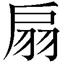

| どうでもいい 世界なんて―クオリディア・コード― (ガガガ文庫) | |
| 渡航（Ｓｐｅａｋｅａｓｙ） | |
| (2016) | |
小学館ｅＢｏｏｋｓ
どうでもいい 世界なんて
渡航（Speakeasy）
イラスト saitom
１／いつか自宅へ帰るために QUALIDEA CODE-CHIBA
朝の時報代わりに、砲弾が飛び交っていた。
グッドモーニング、チバ。
東京湾に架けられた巨大な橋へと至るレールの上を装甲列車が走っていく。鉄輪は悲鳴のように軋みを上げ、旋回する砲塔が武骨な音を立てていた。
きっと、海の向こうでは戦争が始まるのだ。
否。
始まるという表現は正しくない。
この戦争は終わったことがない。
戦禍は絶えず、軍靴の足音絶え間なく、眠る前に始まって、夢見る間も続いていて、起きた後も終わらずに。
故に、既に日常と化した我が闘争に、戦争と平和の区別はなく、武器にさらばと告げる暇もなく、誰がために鐘が鳴るかも知ることなく、眠らない山猫たちは戦場へ行った。
遠く響く銃声に鬨の声が重なる。
爆音の中でもその音声が良く通るのは、声の主らが未だ年若く、また、その一団には女子も多く含まれているからだろう。
えいえいおうおうやいのやいのと騒々しく、覇気に満ちた声には余裕の色が見受けられた。
さもありなん。この戦争に敗北はない。......さりとて、この戦争に勝利はない。
書き割りめいた海と箱庭めいた都市とで永々劫々繰り返されるカリカチュアの防衛戦争だ。
この戦争の相手、つまりは、かつて人類を滅亡の危機へと追い詰めた怨敵が〈アンノウン〉とそう呼ばれたのも今は昔。既に、未知との遭遇は既知との戦争になり果てた。
ルーティンワークのウォーゲームはバーチャルめいてリアリティがない。
ただ、音だけが真実リアルだった。
弾薬が爆ぜて、独特の風切り音が響き渡る。
奏でられるのは戦場の吹奏楽。
基準となる音さえ聞いたならば、そのフルスコアを即座に書き出すことができたはずだ。
そうしなかった理由はいくつかある。
一つはこの戦場に楽団は必要とされていないこと。
一つは自分に絶対音感も相対音感もありはしないこと。
そしてもう一つ、これが最大の理由。
自分の戦場は榴弾銃弾飛び交う最前線ではなく、現ナマ実弾飛び交う最後方であることだ。
「......あのさぁ」
声をかけられて、建物の外へと向けていた意識が引き戻される。
はるか遠くにあった音は掻き消え、代わりに、オフィス内でひっきりなしになる電話の呼び出しベル、メールの着信音、年代物のパソコンの駆動音がわんと耳の中に響いた。
「千種くんさぁ......」
「はぁ......」
名前を呼ばれて、反射的に間の抜けた返事がこぼれ出る。声のしたほうへ顔を向けた。
デスクの前で棒立ちしている俺。
その正面、椅子に腰かけて腕組みをしているのは、オールバックに縁なし眼鏡の男。
かたかたと鳴っているのは風に叩かれる窓でも、キータッチでもなく、机の下で彼のローファーがタップダンスしている音だ。それを人は貧乏ゆすりと呼ぶ。
「お前、......話、聞いてた？」
「はぁ、聞こえてました」
この近距離で、そのダミ声で、聞こえないはずがない。
だが、そのダミ声の主、漆原達樹は、はあーーーーーーーーーっとでかくて長いため息を吐く。そんなロングブレス吐いてると、痩せ型の漆原先輩がさらに痩せちゃう......などと、心配していると、漆原パイセンは眼鏡を摺り上げて眉間を揉む。
そうしていると、右瞼の上にある古傷と綺麗に通った鼻筋とがよく見えた。
いや、顔自体はいいのだ。鼻も高いし、切れ長の目は涼やか。その目つきはいっそ冷たいといってもいい。ただ、ぎょろぎょろと忙しなく動く瞳がどうにも神経質そうで、その男ぶりを下げていた。
服装のセンスだって、この街ではまだマシな部類。黒いジャケットからは、ピンと糊のきいたシャツの襟が飛び出しているし、袖口からは金ピカのごつい腕時計が覗いているし、耳たぶにも似たような輝きを放つ小さな輪っかがぶら下がっているけれど。まぁ、タンクトップで上腕二頭筋をこれ見よがしに晒して、タトゥーを誇らしげにちらちらさせる一部の連中よりはずっとマシ。古人曰く五十歩百歩の背比べというやつだ。......違うか。どんぐりのたけくらべだったっけ？
ともあれ、漆原先輩のセンスはそんな感じ。
インテリジェンスと粗暴さを併せ持つその雰囲気。昔の言葉で言えば、インテリヤクザというやつだろう。
そのインテリヤクザが大仰に首をひねる。
「んーっ、違うよね？ それただ聞いてるだけだよね？ 俺は、理解しているかを聞いてるんだよね？」
そうだったのか。限られた言葉の行間紙背を読み取ることや惻隠の情は難しい。
「いや、俺もね？ 言いたくて言ってるんじゃないんだよ？」
漆原先輩は眼鏡を外すと、デスクに置かれた木綿のハンカチーフできゅっきゅっとレンズを磨き始める。言いたくて言ってないときの言いたそう感は異常。
「昨日の外回りの営業実績をさー、なるはやで科長に報告しておいてって言ったよね？ 今日、ずっと見てたけど千種、動いてないよね？」
「ずっと見てたんですか......」
なんなの、俺のファンなのかよ......。俺見ている暇あったら仕事しろよ......。そんな驚愕が口をついて出てくる。すると、漆原先輩は、レンズの奥から鋭い眼光を放った。
「......ああ？」
「なんでもないです......」
インテリヤクザに低い声ですごまれてしまった......。怖いよぉ......。
「報告してないのはなんで？ 怒んないから言ってみ？」
怒らないからと前置きする人の既に怒ってる感は異常。
「いえ、報告ならさっきメールで送っておいたんですが......」
「メールじゃ俺がわかんないだろ？ 科長にだけ報告すりゃいいってもんじゃないんだよ。俺たちチームで動いてるんだから。なんで？ なんでそうしたか理由教えて？ 俺には言わなくてもいいと思った？」
「すいません......」
「いや、別に謝ってほしいんじゃなくてさ、理由教えてほしいの。再発防止もしたいじゃん？ わかる？ だから、理由」
「はぁ......。あの、科長へのメールに、先輩もＣｃに入れてあるので大丈夫かなと」
「言い訳するなよ！」
なんですと!?
理由を言えって言われたから答えただけなのに......。
「なんで、素直に自分のミスを認めてくれないのかなぁ、千種くんは......。謝って反省してもらえたら俺だってそれでいいんだよ」
なんですと!?
さっき謝ってほしいわけじゃないって言ってたのに......。
おいおいやべぇな、漆原パイセン。言ってることとやってることが違うどころか、言ってることと言ってることが違うぞ......。と、思ったが、働いていると稀によくあることなので、気にしてはいけない。
もっと強い心で、「飯はまだかのう」と問われたら、「あらあらおじいちゃんご飯なら先月食べたでしょう？ うふふふ......」と微笑んで見せるくらいの余裕が必要なのだ。つまりは、上司や先輩程度いつでも殺せるという気概。これがあるだけで、ずいぶん違う。
「だいたい俺にもメールってそんなの見た覚え......」
言いながら、漆原先輩がかたかたっと年代物のパソコンをいじる。眼鏡をくいっと押し上げて、二、三度瞬きした。
そして、不機嫌そうに眼鏡を戻すと、これ見よがしなため息を吐く。
「......あのさぁ、近くにいるのになんで直接声をかけないの？ メールだと見落としがあるかもって思わなかった？ ホウレンソウって知ってる？ チームで動いてるんだからコミュニケーション取らないとまずくない？ 違う？ 俺、おかしなこと言ってる？」
「............」
おかしなことは言っていない。
ただ、おかしな人間が正論を言うのはおかしいと思う。
「......千種、聞いてる？」
そのおかしな人はふぅやれやれと、既に緩んでいるネクタイをさらに緩めて、首をこきっこきっと鳴らした。
あれれー？ おかしいぞー？ 前回は口頭で済ませた結果、漆原パイセンがすっかりそれを忘れて、言った言わないの水掛け論になったので、今後はメールという文字媒体で残すことを厳命されたからそれに従っただけなんだけどなぁ......。
などと考えていると、ばんばんと机が叩かれた。
「千種ぁ！ 千種霞っ！」
「はぁ、聞こえてます」
「じゃあ、なんで返事しないの？ 俺がおかしなこと言ってるか聞いたんだよね？ そしたら答えるよね？」
はい。承知しました。了解です。イエス。ウィ。ヤー。ダー。かしこまり！ かしこま☆
どんな返事をしたって同じことだ。漆原先輩にとって正しい選択肢が選ばれるまでその質問は続けられるのだから。
だったら、答えても答えなくても同じ。
「はい」
そう知りつつも、律儀に返事をしてしまう礼儀正しい俺。今日は夕方から外打ち合わせの予定が入っている。早くこの話を終わらせたかった。
が、漆原先輩はなおも俺とおしゃべりしたいらしい。
「頼むよ、ほんと。お前、生産科に来てもう半年経ってんだろ？」
「ですね」
正しくは半年しか経っていない。
「エリートぞろいの戦闘科様じゃどうだったか知らねぇけど、そのやり方、こっちじゃ通じねぇからな」
「はぁ、戦闘科でも通用はしてなかったんですけどね......」
「だろうなぁ......。わかるよ。お前じゃ落ちこぼれるよなぁ」
漆原先輩がはぁーっとまたしても大きなため息を吐いて、頭を振り、ついでに舌打ちを付け加える。
「とにかく、こっちにはこっちのやり方があんだよ」
と、インテリヤクザは言うが、そのやり方らしきものを教わった記憶がとんとない。
ＯＪＴなどという謎の制度のおかげで、研修をする間もなく実践投入。漆原先輩の下につけられて、技は教えん勝手に盗め考えるな感じろドントシンクフィールエトセトラエトセトラ言われながら、俺はどうにかこうにか仕事をこなしている。
こうして、漆原先輩のデスクの前に直立不動で立たされて、恫喝に近い説教をされるのも慣れたものだ。
おかげで、もはや部署の日常風景となっていて、俺と漆原先輩の動向を気にする者はいない。
電話の呼び出し音やメールの着信音がひっきりなしに響くオフィス内。
たまに、ちらっと他のデスクにいる人たちに視線をやると......。
「.....................はぁー。ちっ」
ガタッ、ガタタタッ、ガタッ、ダーーーーーン！ と、やたら勢いよくキーボード打ってはため息と舌打ちを繰り返す女子生徒。
「申し訳ございません。納期までにはなんとか。はい、申し訳ございません。頑張ります。いえ、申し訳ございません。なんとか、ええ、頑張ります、はい。申し訳ございません」
電話口でお腹を押さえながら額の汗を拭いて辛そうにしている男子生徒。
「そちらのご担当の方はできないっておっしゃっていましたが、私どもから言わせていただきますと、できないっていうのは嘘つきの言葉なんですよ。無理って言ってもとにかくやる。そうしてできたらそれはもう無理じゃない。つまり、嘘をついていたってことなんですね」
それこそ俺には無理そうなことを、電話の相手にニコニコ笑顔でさもいいこと言ってる風に語っている老け顔の先輩、確か名前を綿実先輩といっただろうか。
お三方とも自分の仕事と誠実かつ真摯に向き合い、その結果、心を病んでいて、オフィスの片隅で繰り広げられている俺へのお説教になど興味がないようだった。
ふえぇ......、誰も助けてくれないよぉ......。
むしろ、俺が他のみんなを助けてあげたほうがいいんじゃないかと思ってしまうくらい、この職場は病んでいる。
ただ、掃き溜めにも鶴が降りるように、あるいは天水桶に竜が宿るように、こういう環境に似つかわしくない人間も稀にいるものらしい。
例えば、今、湯呑みを載せたお盆を手にしている女子などはその部類だろう。おそらくは俺と漆原先輩の剣呑な雰囲気を和らげようと、お茶を淹れてくれたに違いない。漆原先輩の話を傍聞きしつつ、あわわと心配そうな顔をしている。
その人は、そろりそろりとおっかなびっくり戸惑いステップで漆原先輩に近づくと、控えめに声をかけた。
「あ、あのー......」
「ああっ!?」
弱々しげにかけられた声に、漆原先輩ががなりながら振り返る。と、その険しかった顔が緩んだ。
「......なんだ、蓮華ちゃんかぁ」
漆原先輩は、先ほどまで人を恫喝していたとは思えないほどに優しい声音で、彼女の名を呼んだ。
蓮華。......榴ヶ岡蓮華。
年齢は俺と同じく16歳。大きな瞳もしなやかに伸びた手足も、少女らしく、されど、ニーハイソックスに包まれた脚の肉付きは程良く。
指定の制服をルーズに着崩す者が多い千葉生徒の中にあって、榴ヶ岡はちゃんと着こなしていた。ジャケットの前を閉じ、リボンタイをしっかりと結んでいる。それなのに、そこに堅苦しさがないのは、常に柔らかな印象を与えてくるからだろう。
うるうると儚げに揺れるくりっとした瞳も、血色がよく透き通るような肌も、笑みを忘れたことがないような桜色の唇も、ふわふわとした長い黒髪も。
「どうしたの？ 何かわかんないことでもあった？ 蓮華ちゃんは、まだ来て半年しか経ってないからね、なんでも聞いてくれていいから」
にっこにっこしながら漆原先輩が言う。......俺も来て半年だから、わかんないこと聞きたいなー。榴ヶ岡と同じタイミングで一緒に戦闘科から出向してきたのに俺には優しくしてくれない理由とかね？
俺がわかんないこと聞きに行ったら「なんでそれくらい自分で考えないの？ 言われないと何もできない？」って言われて、聞かなかったら聞かなかったで「なんで聞きに来ないの？ 聞かなくてもできると思っちゃった？」って詰めてきたからな。いや、まぁ、そうしてきた理由は聞くまでもなくわかるけどね！
とても単純にして明快。
榴ヶ岡は女子であり、かつ控えめに言っても可愛い女子であり、要するに可愛い女子だからだ。
それに引き換え、俺とか男子すぎてやばい。何がやばいって、漆原先輩が榴ヶ岡よりも俺のほうに優しくしてたら貞操の危機を感じているところだったからマジやばい。もはや、漆原先輩が俺に辛く当たってくれて良かったとすら思える。......いや、待てよ？ 普段は強気でドＳな先輩がふとした時に急に優しくすることで俺をときめかせる高等テクニックかもしれない。まだ油断はできないぞ......。
と思ったが、やはりそれは杞憂らしい。だって、漆原先輩はドＳなわけじゃなくてただ性格がゴミカスなだけだもんね！ 自称ドＳのただ性格悪いだけ率は異常。
そのゴミカスクソインテリヤクザは「なはは！ よーし、パパなんでも教えちゃうぞー！」みたいな顔でご機嫌そうに椅子をくるっと回して、榴ヶ岡に笑顔を向ける。
「もし、困ったことあったらなんでも言ってね」
「あ、いえ、えっと......。すいません！ さっきの営業報告の件なんですけど......」
「あー、それね！ ほんと千種には困っててさー、今も言ってやったとこなんだけどメールなんかで済ますなって話だよね。やっぱ人の温かみ？ 俺、そういうの大事にしていきたいって思ってるからさぁ......」
漆原先輩がドヤ顔で、ったくやれやれとばかりにドヤっていると、榴ヶ岡は瞳をウルウルさせ始める。
「す、すいません......。わたしも、メールで済ませちゃいました......」
「あ、そう......」
ううっと泣きそうな顔で申し訳なさそうに言う榴ヶ岡に、ついさっきまで怪気炎を吐いていた漆原先輩もテンションを落とす。だが、そこはさすが漆原パイセン、すぐにうんうんわかるわかると頷きを返して見せた。
「いや、でも、言った言わないになっちゃうからね。メールで残すの大事だから。むしろ、ありがとうね、蓮華ちゃん」
なんて武骨な優しさ......。そして、なんて露骨な下心......。
「今度から気をつけます。すいません！」
榴ヶ岡が勢いよく頭を下げる。その拍子に、持っていたお盆から勢いよくお茶がこぼれそうになる。それを回避しようとしたのか、危ういバランスで榴ヶ岡がととっとたたらを踏んだ。
「わわっ！ わっ！ よっ！ とっ！ はっ！ ......はわぁ！」
何度か頑張ってはみたものの、最後に踏ん張り切れず、榴ヶ岡は間抜けな声とともにひっくり返って、びっちゃびちゃのお茶浸しになっていた。
「いったぁ......はっ！」
奮闘の結果か、榴ヶ岡は制服の前身ごろもスカートの裾も乱して、苦悶の声を上げた。お茶を吸ったブラウスがぴったり肌に張り付いて、うっすら透けているのに気づくとしゅばばっと急いで胸元を掻き合わせた。
榴ヶ岡の惨状に、事務所内の空気が一瞬固まる。
そして、皆がふっと一様に噴き出した。
「......尊い」
「ありがとうを支給したい」
「蓮華ちゃんは天然だなぁ」
胃痛に苦しんでいた男子の先輩も破顔し、綿実先輩はありがとうを集め、漆原先輩は笑顔で手を差し伸べる。
さっきまでガッタガッタと激しくキーボードを叩いていた女子の先輩も、しょうがないわねーとまるで娘や妹を慈しむような視線でもって、雑巾を片手にやってきた。
「まったく榴ヶ岡はほんとにもう......」
「すいません！ すいません！」
あらあらうふふと微笑んであれこれ世話を焼いてくれる女子先輩に、あわあわはわわと慌ててる榴ヶ岡。
はるか遠く東京湾沖では戦争をしているというのに、なんとほのぼのした光景だろうか......。このなんともブラックな職場にあって、榴ヶ岡の存在はまさにエンジェル。
だが、この程度のことでほのぼのしていられるのなら、きっとこの職場はここまで病んではいない。ていうか、なんでこの職場、こんなにブラックで病んでるの？ 和を以て貴しとなす民だから？
などと、思っていると、カツカツカツカツと足音が響いてくる。歩幅はさして広くなさそうで、その小さい体躯を気ぜわしく動かしているのが音から察せられた。
そして、バンッ！ と勢いよく扉が開けられる。
「騒がしい！ まだ課業中でしょう！」
現れたのは一人の少女だ。タブレットにバインダー、クリアファイル......様々なデバイスや資料を抱えている。仁王立ちする姿からは剣呑な雰囲気が立ち上っている。それを敏感に察して、漆原先輩がえへへっと卑屈な笑みを浮かべて、揉み揉みと揉み手した。
「つ、釣瓶さん。お疲れっす」
さっきまで俺に説教かましてた奴とは思えない......。弱い者にはめっぽう強く、強いものにはめっぽう弱く......すごい、これが働く男か！ が、働く男も上司には勝てないものらしい。じろっと睨みつけられると、漆原パイセンがうぐっと言葉に詰まる。
「釣瓶言うな。朝顔って呼びなさい」
その瞳が放つのは怜悧さ。
釣瓶朝顔の印象もまた、その怜悧という言葉に集約される。
きめの細かい白く抜けるような肌と、可愛らしく小づくりなパーツで整った顔立ち、少女らしい華奢な身体つきや小鹿のように細く伸びた手足。それらが彼女に、まるで風花のような儚げなイメージを与えていた。
事実、釣瓶朝顔はぱっと見の印象では幼い。現時点での年齢は俺と変わらない16歳だが、どうにも年下っぽく見える。
けれど、勝気そうなまなざしと、前髪に隠されることのないつるりとしたおでこが彼女の芯の強さを窺わせ、彼女を年齢よりも大人びて見せていた。そりゃ漆原先輩も敬語使っちゃうよね！
「この年度末のクソ忙しい時に何やっているの。わかってると思うけど、ノルマ未達者は普通にペナルティだからね。人事考課だって下げるんだから」
その一言に、それまでほのぼの空気だった事務所内の空気がどんよりと重くなる。特に、人事考課という釣瓶朝顔だけが口にすることを許されたワードに皆ぴくっと反応していた。
そう、釣瓶朝顔はこの生産科のドンなのだ。中等部時代から高付加価値の商品作物の開発に成功し、またそれらを他都市や内地へ売り込む営業ルートを開拓して、着実に実績を積み上げてきた。その結果、歴代最年少で南関東防衛都市群の食糧庫である千葉都市生産科のトップに上り詰めた。
見かけは細腕、経営は豪腕、人事は辣腕。
驚異的な成績と超人的な労働量で頂点に立った彼女は、自分にも他人にも妥協を許さない。おかげで、生産科はこの都市で一番ハードな職場となってしまった。釣瓶朝顔は今や、この地獄のような職場に君臨する魔王だ。
その魔王が、職場に舞い降りたほのぼの天使をじっと睨めつける。おでこが出ているからか、眉間に寄った皺がよく見えた。
「また蓮華がやらかしたの......」
「ご、ごめんなさい......」
いそいそと床を雑巾で拭く榴ヶ岡がおそるおそる謝る。それをじーっと見ていた釣瓶朝顔は頭痛をこらえるようにこめかみを揉んでいた。こういう状況、見る側は大変ハラハラしてしまいます......。事務所内にいる一同、固唾を飲んで見守っていると、やがて釣瓶はふうっとため息を吐いた。
「......ほんと、しょうがないわね」
釣瓶の口元に小さな笑みが浮かぶ。そこには確かな親しみが込められていて、俺と榴ヶ岡を含めたみんながほっと息をつく。
「ごめんね、朝顔ちゃん。すぐ片づけるね！ あ、あとお茶も淹れ直すから！」
「お茶はいいわ。またひっくり返されたら困るもの」
「こ、今度は大丈夫だよ！ ペットボトルの蓋したまま持ってくから！」
気合い十分にむんと胸の前で拳を握る榴ヶ岡に、釣瓶は冗談めかして笑って応える。二人の交わす会話は同い年の友人らしい温度感だ。
「ついでに、私のお気に入りのカップは使わずに、紙コップにしてもらってもいいかしら？」
「うん！ わかった！ ......いや、わ、割らないよ!?」
「どうかしらね？ ね、漆原」
「ははは、いやー割るでしょうね。こないだ俺のカップも粉々に砕かれましたからね」
くすくす微笑む釣瓶の言葉に漆原先輩が朗らかに言うと、他の先輩たちもにこやかに笑った。俺もついつい口の端から笑いがこぼれる。ははは、漆原先輩のカップ砕かれてたかー。ついでに心も砕いといたらよかったんじゃないかなー。
そんな和やかムードの中、榴ヶ岡は恥ずかしそうに顔を赤らめてううっと唸っている。それを穏やかな面差しで見つめて、釣瓶がぱんぱんと手を叩いた。
「さぁ、仕事に戻るわよ。蓮華は片づけ終わったら漆原と会議室に来て。あなたたちのチームの人事考課、面談するから」
「あ、うん！」
榴ヶ岡の元気良い声に頷きを返すと、釣瓶はちらっとこちらを見る。
「......あと、千種もね」
そう言い残すと、釣瓶朝顔は特に返事を待つこともなく、会議室へと向かっていった。
× × ×
事務所内に設えられた会議室にかつかつと音が響く。
俺の目の前の席に座る釣瓶がタブレットを爪で叩いていた。
四人掛けの会議机には紙コップが置かれている。それにせっせとペットボトルのお茶を注ぐと、榴ヶ岡は満足げに吐息を漏らして席に着いた。
その紙コップに手を伸ばして、一口つけると釣瓶が口を開く。
「じゃあ、始めましょうか。人事考課表書いちゃうから、いくつか聞かせてもらうわね」
言うと、釣瓶がタブレットを操作して書類らしき画面を出した。そこへペンで何事か書き始める。
「よ、よろしくお願いします」
「お願いします......」
隣に座る榴ヶ岡が緊張した面持ちで言うのに続いて、俺もぺこりと頭を下げる。俺と榴ヶ岡は戦闘科から出向という形でこの生産科に来ている。したがって、実質上の上司は生産科のボスである釣瓶だ。期末ごとにある人事考課も釣瓶にされることになるのだ。
やだ、ちょっと、緊張しちゃう......。戦闘科の時は撃破数がすべてで面談なんかなかったから、こういうのは初めてだ。戦闘科は言葉よりも拳で語るノンバーバルコミュニケーションが主流だったからね、仕方ないね。
そんな緊張が二人とも表情ににじみ出ていたのだろう。それを見た釣瓶が苦笑する。
「そんなに硬くならなくて大丈夫よ。もう業績の報告はもらっているから、たいしたことは聞かないわ」
「......つまり業績だけで判断するってことか」
それは大変困る。俺は今期、いきなり出向させられたこともあって仕事らしい仕事ができていない......。せいぜい客先に出向いて生産科に来たクレームを聞き流すことくらいだ。残念な業績をフォローする材料が求められてないとなると、査定が悪くなることは必至。
ふと不安に思って聞くと、釣瓶はきょとんとした顔をする。そして、その横に座る漆原先輩はキレ顔をする。
「千種さぁ......。お前、なに朝顔さんにタメ口きいちゃってんの？ 礼儀がなってねぇなおい！ 査定さげちゃうぞ」
「あ、わ、わたしも敬語使ってない......。ごめんね、朝顔ちゃん......じゃないや！ 朝顔さん？ そ、それとも釣瓶さん、かな？」
「釣瓶言うな」
慌てて言い募る榴ヶ岡に釣瓶はささっと前髪をいじって、つるっとしたおでこを隠そうとする。
「別に敬語じゃなくてもいいわ。千種は同い年だし、蓮華は友達だし。そもそも生産科は成果主義だから結果さえ出せば文句はないもの」
「そうだぞ、千種。世の中、結果がすべてだからな。年功序列なんて考え方は捨てろ。生産科は戦闘科と違って、風通しのいい職場だからな」
釣瓶がさらっと言うと、漆原先輩もしれっと頷く。えぇ......、変わり身早い......。
でも、成果主義っていう割りに、漆原先輩より早く帰ると、いろいろ言われるのはなんでなんですかね......。風通しいいっていうか、吹きっ晒しって感じだよね。あと、俺、さりげなく釣瓶から友達じゃない宣言されてるね......。いや、事実だからいいんですけれども。
「まぁ、成果主義ではあるけれど、今期についてはあまり考慮に入れていないわ。蓮華と千種にとっては、この半年は研修期間みたいなものだし。だから、これはただの面談よ」
「そ、そっか......。よかったぁ......」
言われて、榴ヶ岡がほっと胸を撫で下ろすと、それに釣瓶は軽く微笑みを返す。
「どう？ 職場の環境は。もう慣れた？」
「うん。先輩たちもみんな優しいし、結構楽しいかも」
「そう、それはよかったわ。千種は？ あんたの戦闘科在籍時の順位見たけど、あれだったらこっちのほうが居心地いいんじゃない？」
「ははは......」
からかうように言われて、思わず乾いた笑いが漏れる。ははは、このおでこちゃん本気で言ってんのか。
確かに、俺は戦闘科でたいした成績も上げていないので肩身が狭くはあったが、生産科でもそれは変わらない。それどころか余計肩身が狭くて、もはやスマートでスレンダーでちょっとモデル体型になっちゃってる。
なんせ、生産科は戦闘科と違って、他の科や他の都市とも仕事をしなければならない。おかげで、どこへいっても面倒の種が転がっているのだ。
生産科はここ数年、おでこちゃんの目覚ましい活躍もあって、業務内容もそれに対する需要も大幅に拡大した。従来の単純な食糧生産や兵站の供給だけでなく、ブランド野菜や高級フルーツ、各種嗜好品も生産流通させた結果、取引先も売上高も利益率も上がっている。それに比例してクレームの数も増えている。商品や流通体制に対する苦情ももちろんだが、他の科や他都市からの牽制を込めたいやがらせめいたことも言われるのだ。急速に躍進した部署の叩かれ具合は異常。
「居心地については、ちょっとわかんねぇな。外回り多すぎてあんまり職場にいないから。まぁ、前よりも働いている感はある......」
むしろ、働いてる感しかない。過労死まである。
暗に仕事多すぎ辛すぎという不平を込めて言うと、釣瓶はにっとどこか意地悪そうな笑みを浮かべる。
「そうでしょうそうでしょう。やりがいあるでしょう」
「ものは言いようだなぁ......」
好きな仕事なら給料はいらない、ありがとうや感動を食べていけるくらいの暴論だ。が、たまに、そういう旧時代のブラックカンパニーな精神論に感じ入る人もいるのです。
「そうだね......。その、わたし、戦闘科だと全然役に立ってなかったけど、ここならわたしでもみんなの役に立てるかもって感じするのはちょっと嬉しいかも......」
榴ヶ岡があははと照れ臭そうに言うと、釣瓶はうんうんと大仰に頷く。
「そう、そうなのよ！ 役に立っているのよ！ 私たちの仕事はこの世界で最も貢献しているの！ 今の社会の基盤を担っているといってもいいわ！ 第一次産業なくして発展など見込めないの！」
そして、釣瓶はがたっと立ち上がると、ぐっと拳を握る。
「なんか熱く語りだしたぞ......」
「朝顔ちゃん、まじめだから」
半ばドン引きの俺に、榴ヶ岡はのほほんと答える。いや、これまじめっていうか、宗教的陶酔感あるんですけど、だいじょうぶなんですかね......。
釣瓶は演説をかますようにびしっと腕を振る。すると、おでこがきらりと輝きを放った。
「千葉の食糧プラントは世界一！ 千葉こそは世界の根幹！ この南関東三都市の食糧庫にして生命線！ そして、生命工学の最先端！ 我々生産科を擁する千葉が至高にして最高！ 武器作ってるだけの神奈川の脳筋や、中央議会なんて言ってふんぞり返ってるだけの東京の能無しなんかとはわけが違うんだから！」
むふーと満足げに荒い鼻息を吐く釣瓶に、榴ヶ岡がにこにこ笑顔でわーぱちぱちと拍手を送る。漆原先輩に至っては、涙ぐんで目じりをぬぐっていた。
そうか、千葉ってそんなにすごかったのか......さすが千葉だぜ！ とは別にならないのだが、まぁ、郷土愛があるのはいいことだよね、うん。その千葉愛に拍手を送ろう。
ひとしきり拍手を受けていると、さすがにちょっと恥ずかしくなってきたのか、釣瓶がけぷこんけぷこん咳払いをする。
「......ま、まぁ、そういう誇りや気概を持って仕事に取り組んでもらえればいいわ。......あとは、何かあったかしら」
気恥ずかしさを誤魔化すように、釣瓶がしゃしゃっとタブレットをいじり、ディスプレイを切り替える。ちらと覗いてみるに、表示されているのはチェックリストの類いのようだ。それを見て、釣瓶がぽつりと呟いた。
「......コンプライアンスチェックか」
「こ、こんぷ？ なに？」
耳慣れない言葉に榴ヶ岡が首をひねる。
「まぁ、学校側で定めているルールを破ってないかのチェックね。労働環境は正常かとか組織の管理体制は適切かとか個人情報の取り扱いについてとかハラスメント行為がないかとか......そういうのをチェックするように、学校側から義務付けられてるのよ」
簡単に説明しながら、釣瓶はタブレットをぽちぽちいじる。
「オッケー、オッケー、オッケー......っと。......こんなのまともに守ってたら仕事なんてできないのよねー」
どうやら釣瓶は読む端から、リストのチェックボックスにレ点を書き入れているらしい。ていうか、なんか不穏なこと言ってますよ、この人......。
「それって、俺たちが書いて提出するリストなんじゃないの......」
「え？ どうせ最後は私がチェックするんだから同じでしょ？」
いやいや、おでこちゃんさ、きょとんとした顔で可愛らしく首ひねってるけど、そのやり方が何よりもコンプライアンスに違反しているのでは......。
やべぇな、この上司......と恐れおののいていると、さすがにばつが悪くなったのか、釣瓶が小さく咳払いをして、リスト終盤の項目を読み上げる。
「じゃあ、一応聞くけど......、パワハラセクハラの類いはないわね？」
「ありません。なぁ、ないよな？」
漆原先輩が俺と榴ヶ岡に向き直る。
「今、なんで漆原さんが答えたのかな......」
「ていうか、答え強制しちゃってるし......。それがパワハラなのでは？」
だいたい一応聞くってなんだ、一応って。不満を込めてそう言った。
が、おでこちゃん、これを軽くスルー。
タブレットの画面をしゃっと指先で撫で、チェックボックスにレ点を入れた。
「パワハラはなしっと......。いいわよね？」
「いいです。......いいよな？」
またしても漆原先輩に詰められてしまった。
「それそれ、それパワハラ......」
インテリヤクザの圧力に対してやや顔を逸らして言うと、外した視線の先にいる釣瓶が口元にペンを当てて、しれっと何事かのたまった。
「違うわ。確認よ」
「確認」
ほう、そうだったのか。いやー、納得できねー。
しきりに首をひねることで、腑に落ちぬアピールを繰り返していると、釣瓶がきゅっと眉間に皺を寄せる。
「千種。あんた、男のくせに結構細かいわね」
「性差別発言はセクハラなのでは？」
「違うわ。指摘であり感想であり私的な感想よ」
「韻を踏んでて詩的で素敵......」
もはや何を言っても無駄なことを悟った。たとえ黒いものでも上司が白いといえば白いのだ。上司が言うなら、ブラック企業もホワイト企業だし、パワハラセクハラもコミュニケーションなのだ。
「ぃよっし、おーわりっと。じゃあ、署名して」
かっくりとうなだれていると、早々に記入を終えた釣瓶がタブレットとペンを渡してきた。それを受け取って、しぶしぶ署名をし、榴ヶ岡に渡す。
榴ヶ岡がさらさら書いているのを見ながら、釣瓶が静かにため息を吐いた。
「あと、夏目にも署名してもらわないとね」
「夏目って......戦闘科の夏目さんか？」
意外な名前が出てきたことにやや驚いて聞くと、釣瓶が顔をしかめて頷いた。漆原先輩も同じような表情をしている。不機嫌そうに舌打ち交じりに口を開いた。
「夏目って言ったら今一人しかいねぇだろ。都市次席の夏目めぐ様だよ」
「まぁ、そうですね......」
漆原先輩の言うように、今、この都市に夏目という名前の人間はただ一人だけだ。
夏目めぐ。この防衛都市千葉で最強の存在、戦闘科のエース・オブ・エース。そして、先代の都市主席が内地へと異動した今は防衛都市千葉の実質的トップでもある都市次席だ。
「あんたたちは戦闘科からの出向なんだから、一応、直属の上長は夏目でしょ。この手の書類は上長にも確認出さないといけないのよ」
名前を書き終えた榴ヶ岡が顔を上げる。
「なるほど～。やっぱり朝顔ちゃん、まじめだね」
「......別に、それだけが理由じゃないけど」
「え？」
「......あいつ頭悪いから、こういう手続きやらせて実務がめんどくさいってこと認識させないと、無尽蔵に出向させてくるのよ。あいつ頭悪いから」
「二回言った......」
あははと榴ヶ岡が困ったように笑う。
さすがに生産科の代表である釣瓶は夏目さんとも面識があるらしい。あいつ呼ばわりには距離感の近さが窺える。もっとも、そこに込められているのは親しさとは呼びづらいものではあるが。
「あんたたち、この後、戦闘科に打ち合わせ行くんでしょ？ 私も一緒に行ってサインもらってくるわ」
言って、釣瓶ががたっと椅子を鳴らして立ち上がる。
「いや、別にわざわざ行かなくてもメールで送っとけばいいんじゃないの。せっかく電子化してるんだし」
「......戦闘科の連中にそんなことできると思う？ そもそもメールだってろくに読まない奴らなのよ？」
釣瓶がげんなりした顔で言うと、漆原先輩もうむうむと頷く。
やべー、超納得。なんてったって、戦闘科じゃない漆原パイセンでさえろくにメール読んでくれないような文化レベルだもんな。
いつだって、世界は最底辺に合わせられている。
「じゃ、ぼちぼち行きますか。結構いい時間だし」
そう言って、漆原先輩が席を立つ。ちらと時計を見やれば、もうすぐ17時。打ち合わせの時間までもう間もなくだ。
漆原先輩に続いて、俺たちも会議室を後にした。
デスクに戻ってから打ち合わせに行く準備をさくっと整える。
事務所を出る前に、壁に掛けられたホワイトボードの前に立った。
キャップの部分にスポンジのついたペンを手に取って、俺の名前の横に「戦闘科打ち合わせ ＮＲ」と書き加える。
すると、肩をちょんちょんと叩かれた。振り向くと、釣瓶が手を差し出している。
「私にもペン貸して」
「はいよ」
俺の隣に立った釣瓶にペンを手渡す。すると、釣瓶はキャップのスポンジをきゅきゅっと鳴らして、俺が書いた「ＮＲ」の文字を消した。
「ちょっと？ 釣瓶さん？ なにしてんの？」
いや、マジで何してんの？ と怪訝に思って声をかけると、釣瓶は手を後ろに回してくるっとターン。そして、にこっと笑ってウインク。
「釣瓶言うな。帰ってからも仕事があるわよ？」
「お、おう......」
俺はその可愛らしくて素敵な微笑みを前に、それきり言葉を失ってしまう。
わずかな沈黙が流れる中、釣瓶がぽしょりと呟いた。
「来期に入ったらすぐに都市代表選があるんだから、休んでる暇なんてないの」
「それ俺たちに関係なくない？」
都市代表選は、言葉の意味そのままに防衛都市千葉の代表を決める選挙だ。
そもそも防衛都市が戦争での防衛が存在意義である以上、その代表に選ばれるのはこれまで戦闘科の人間だった。
そして、今年の代表選は現次席である夏目めぐがそのまま繰り上がるだろうというのが大方の予想だ。戦闘科内で候補を一本化してきて、それ以外の科はカーストトップである戦闘科の言うことに、賛意を示す拍手を送るだけ。
それが俺たちにとっての代表選の在り方。
だが、釣瓶はふふんと鼻で笑って、薄い胸を張る。
「あるわよ関係大あり大アリクイよ！」
「なるほど、そう言われると関係ありそう。俺たち働きアリだもんね」
勢い込んで言われたことを軽く聞き流して適当ぶっこくと釣瓶が真顔で首をひねる。
「は？ 何言ってるの？」
それは俺が聞きたい......。なんだよ関係大あり大アリクイって......。どうなってるのドナテルロ......。
「とにかく、今度の代表選には私たちの未来がかかってるの。期内にがっつり実績作ってあいつらぶっ飛ばしてやらなきゃ！」
言うと、釣瓶は事務所内にいる全員のほうを振り向く。
「いい、みんな！ ノルマ未達者はペナルティでサービス残業！ でも、達成したら昇進よ！ その実績を認めてもっと大きな仕事を任せるわ！」
「どっちにしろ仕事が増えるのか......」
げっそりしながら言う。
だが、俺の声は同僚たちの「おー！」という雄たけびにかき消されてしまった。
見やれば、みんなこけた頬を震わせて、隈ができた瞳をらんらんと輝かせ、涙交じりの笑顔を浮かべている。
そんないつも笑顔の絶えないアットホームで明るく愉快な夢に向かって誰もが生き生きと活躍できる元気な職場。
南関東防衛都市・千葉、生産科営業開発部。
──それが、今の俺の戦場だ。
２／そんな仕事は辞めてしまえ QUALIDEA CODE-CHIBA
海風が強く吹き付けている。
東京湾の周辺、特に千葉側は遮蔽物が少ないからだろう。ただ、瓦礫と砂礫とが積み上げられているばかりだ。おかげで、内陸のやや小高い台地に建てられている生産科の事務所からも海がよく見えた。
かつては、......それこそ三十年ほど前なら、あの海の辺りは新都心と呼ばれ、高層ビルディングや大型イベント施設が立ち並び、大層賑わっていたと聞く。
新都心という言葉から察するに、おそらくは次の首都と見込まれていたに違いない。いや、もはや実質的に首都だったといっても過言ではない。いやはやさすがは千葉。大昔から千葉こそが至高にして最高。やっぱり千葉がナンバーワン！ ......どうにもあのおでこちゃん、釣瓶朝顔に毒されているらしい。
けれど、その千葉の輝かしさは、あるいは、この世界の栄光は脆くも崩れ去った。
戦争があったせいだ。
熱線、爆炎、血と屍。ありとあらゆるものが降り注ぎ、海岸線は形が変わった。湾岸部はより深く抉られ、沈んだ場所も多くある。
人類の記録は逆巻く紅蓮の炎に燃え尽きて、人類の記憶は風の前の塵同様に、春の世の夢のごとく泡沫に消え失せた。浪の下にも都の候ぞ、とは言えど、そこにあるのは人類史の遺構だけだ。
けれど、春の世の夢が終わった時、一炊の夢が終わった時、〈世界〉は確かに目覚めた。
戦争が始まる直前に確立されたコールドスリープ技術。子供たちをはじめとした非戦闘員を永の眠りにつかせて収容する計画が、現在の俺たちをつないでいる。
今から二十年ほど前、人類は大きな被害を出しながらも、この戦争に一応の勝利をした。
未知の敵〈アンノウン〉を撃退し、手前勝手に終戦を宣言して、形ばかりの平穏を手にした。
それを〈アンノウン〉が承知しているかはわからない。なんせ言葉も通じぬ、意思の疎通もままならぬ相手だ。史実に伝え聞く苛烈さではないものの、未だ散発的に攻撃があるところをみるに、やはり、戦争は終わっていないのだろう。
だから、俺たちがいる。
〈アンノウン〉出現のホットスポット、東京湾ゲートを取り囲むように東京、神奈川、千葉の防衛都市が臨時政府によって築かれた。
そこで戦うのは、──戦えるのは、永の眠りと春の世の夢から覚めた少年少女だけ。
コールドスリープの副産物、あるいは副作用として発現してしまった異能力を持つ者だけ。
一度終わったはずの世界を終わらせてはくれないその異能力を、誰もが〈世界〉と呼ぶ。
手から炎をまき散らす、触れずともものを動かす、人の心を読む、空を飛ぶ、街が飛ぶ、雲を突き抜け星になる、例えばそんな異能力だ。
......もっとも、戦闘に向いた能力を持っている者ばかりとは限らない。美味しいコーヒーが淹れられるとか、買い物したときお釣りが瞬時にわかるとか、明日の天気がわかるとか、そんなしょうもない〈世界〉だってある。
そういうどうしようもない〈世界〉を持って目覚めてしまった役立たずたちは、戦闘科以外のところへ行くか、行かされるかして、今日も世界は回っている。
特別な〈世界〉を持つ者以外は、代替可能な歯車と使い捨ての潤滑油として、その個性を生かすことも許されず、消費され続けながら、終わらない戦争を支え続けているのだ。
それは俺も同様。
歯車のひとつとして、馬車馬の馬車として、今日も今日とて働いている。
実際、この後も仕事の予定が入っていた。
戦闘科への打ち合わせへ行く前、漆原先輩が営業車を回してくれるというので、それが来るまでの間、海を眺めている。
遠くで、みゃあみゃあとウミネコの鳴き声がした。
この都市では生き物を見かけるのは珍しい。
防衛都市千葉は食物生産プラントを多く持つ南関東一円の食糧庫だ。ゆえに、衛生第一とされ、生き物の持ち込みは基本的に不可。ペットを飼うにもいくつもの申請書類と検疫が必要だ。その面倒さを嫌ってか、この街で生き物を飼う人間はほとんどいない。
みゃあみゃあみゃあみゃあと、まるで規則性でもあるかのように、鳴き続けるウミネコの声にそっと耳を澄ます。
と、背後から近づいてくる足音があった。
「夏目さんに会うの、久しぶりだね」
「だな。出向を言い渡されて以来だ」
振り返らずとも、誰かわかる。外で俺に親しげに声をかけてくる人間なんて限られている。それこそ、平気で地獄に舞い降りてくるような天使でもないと、俺とプライベートな会話をしようなんて気にはならないだろう。
「まぁ、あれを夏目さんと会ったうちにカウントするかは意見が分かれるところだが......」
そう続けると、榴ヶ岡蓮華はもう一歩、さくりと下草を踏んで、俺の横に並んだ。
「あはは、そうかもね。わたしたち、戦闘科にいた頃から下っ端隅っこ組だったし」
どこか自虐的な微笑を含んだ声音が気になって、ふと隣を見やる。すると、榴ヶ岡は誤魔化すような笑みを口元に浮かべていた。
吹き付ける風に長い髪が靡く。ふわりとした黒髪は夕映えにきらめきを返す。それが、まるで天使の輪のように見えて、思わず視線を逸らしてしまった。
天使は苦手だ。
常識外れに美しくて、けた外れに恐ろしく、そして絶望的に常識がない。
『天使なわたしの霞くん。いいですか？ わたしの声が聞こえるまで、何があってもここを動いてはいけませんよ？ 王様と預言者とわたしの言葉は絶対！』
ひどく昔、そう言われたことを思い出す。
赤く、赤い、空。
夕焼けはおぞましいくらいに綺麗で、おどろおどろしいほどに美しい。
夜の羽を広げたような黒い髪。
残照を帯びた頬は朱に染まり、黒髪は夜闇を溶かし込んだような鴉の濡れ羽色。正面から陽光を受け、後ろには夜を背負う。狭間に立つ少女。
まるで別物なのに、似ても似つかないのに、その現実は幻想と交差する。
ただ、俺の記憶の中の人は、あんな微笑み方はしなかった。
「あのさ、ありがとね」
「なんの話」
軽く頭を振って、榴ヶ岡を再度見る。今度は見間違えようのないほどに、ちゃんと榴ヶ岡蓮華の姿が見えた。少しはにかむようにして、えへへーと笑みをこぼす。
「いつもね、千種くんがかばってくれてるなって思うの。わたしたち、出向組って肩身が狭いでしょ？」
「そう？」
いや、俺は実際肩身が狭い......。けれど、榴ヶ岡は割りとのびのびとやっているように思える。漆原先輩に恫喝されないし、女子の先輩にもよく面倒を見られているし、上司の釣瓶朝顔とは友達だし、綿実先輩も榴ヶ岡に対しては闇のリーダーシップを発揮したりしない。
だが、榴ヶ岡の主観では違うらしかった。
「そうだよ。みんないろいろ言うもん......」
拗ねた様に言って、榴ヶ岡が目を伏せる。
みんなとは誰を指すのだろう。
生産科の人間、あるいは他科の人間。もしくは戦闘科の人間。
戦闘科とそれ以外の溝は深い。戦闘科は都市人口の数％しか所属することを許されないエリート集団だ。歴然たる権力機構にして純然たる暴力装置。彼らに対して、嫉妬も羨望も好意も畏怖も恐怖も嫌悪も憎悪もある。
戦闘科は異質で孤高。だから、彼ら同士でつるみ、彼ら以外は蔑み、彼らだけが驕り高ぶる。
他の科は同質で衆愚。だから、彼らを妬み嫉み、彼らに恐れおののき、彼らだけを崇め奉る。
であるならば、戦闘科に籍を置きながらも、他の科に飛ばされた人間たちはどこにいればいいのだろう。
異質の中の異質は、異質以外の同質と同質ではない。そんなトートロジーで言葉を弄ぶまでもなく、俺も榴ヶ岡蓮華も、この街では明確に別の存在だった。
張り付けられた記号は、無理やり剥がしても、汚辱のようにその身に刻まれている。
戦闘科から出向になった人間たちは、もれなく烙印を押された哀れな子羊だ。成長することをやめた白鳥の雛はアヒルの群れの中でどうしたって飛び立てない。
だから、榴ヶ岡蓮華にとってのみんなは、自分という個以外の全なのだろう。
「だから、千種くんがいてくれてよかったなって......。だから、お礼。戦闘科の時もわたしとペア組んでくれてさ、今度も同じチームだし。千種くんが一緒にいてくれると、心強い」
そう言って、榴ヶ岡は微笑む。
確かに、俺と彼女の境遇は似通っている。
戦闘科でスナイパーとスポッターとしてペアを組んでから一年近く。ほとんど同じルートをたどっている。
けれど、過程が似通っていても、道程が同じでも、行く末は多分違うのだ。俺と榴ヶ岡蓮華はどこまでいっても別の存在だから。
親譲りのボサ髪をがしがし掻いて、俺は榴ヶ岡から目を逸らす。
「それは結果論だよ。俺じゃなくても俺がいなくてもみんなに好かれてるよ、つつ、ちゅつじが、つつかくしちゅちゅじが......ちゅちゅ...、はぁ、言いづらい」
カミッカミだった。榴ヶ岡は、と続けたかったのだが、実際に口に出してその名前を呼ぶことが少ないので、どうにもうまく口が回らない。
「だ、だよね！ ごめんね!? わたしも自分で言いづらくってさ」
いやーあははと恥ずかしそうに頬を赤らめて、榴ヶ岡がくるくると指先で髪を巻く。そして、弄んでいた毛先をぱっと解くと俺をまっすぐに見つめる。
「......だ、だから、蓮華でいいよ！ 蓮華がいいよ！ むしろ、蓮華にしよう！」
「蓮華......。ああ、まぁそれなら言いやすいな。噛む心配もなさそうだ」
女の子の下の名前を呼ぶのには慣れていない。そもそも、他人のファーストネームを呼んだ覚えがない。だから、その動揺を隠すように適当ぶっこいて早口でまくし立てた。
だというのに、蓮華は楽しげに笑う。
「うん！」
そして、わずかに身を捩ると、恥ずかしそうに上目遣いに言葉をつづけた。
「......わたしも霞くんって呼んでいい？」
「ご自由に」
「じゃ、じゃあ......、霞くん。これからも、よろしく」
そう言って、蓮華がおずおずと手を差し出してくる。
その細く長い指と滑らかそうな肌と華奢な手首が視界に焼き付く。触れることが躊躇われ、手を伸ばすタイミングが遅れた。
その刹那、パァっとクラクションが鳴る。振り返ると、ズンチズーンズーンチと重低音を這わせながら、車高の低いワンボックスカーがやってきていた。リアとフロントにはエアロパーツがごてごてとつけられている。ついでに、いたるところに青色ＬＥＤがついていて、夜に遠目から見ればイカ釣り漁船に間違えてしまいそうだ。旧時代においても旧時代の遺物と言われただろう。うちの営業車すげぇな。
「千種ぁ！ 早く乗れ」
「了解です」
運転席から顔を出した漆原先輩に返事をしてから蓮華に向き直る。差し出しかけた手はそのまま上に挙げて、くいっと親指で営業車を指す。
「じゃあ、行くか」
「うん」
蓮華は笑顔で応え、二人して営業車に乗り込む。......まぁ、握手するタイミングくらい、またあるだろう。
× × ×
漆原先輩の運転で車に揺られることしばし。
そのまま海岸線沿いに進んでいくと、戦闘科の木更津支部がある。
アンノウンは、東京湾正面海域にある〈ゲート〉から出現してくるので、防衛都市千葉はこの木更津支部を戦力配備の中心地点にしているのだ。ひとたびアンノウン発生警報が鳴り響けば、砲塔列車を走らせ、湾上の戦略拠点である東京湾アクアラインに戦闘の最前線を構築する。
ここは世界を守る最前線。そのひとつだ。
支部の目の前に車を横付けし、ぞろぞろと降りる。
「じゃあ、漆原。私は夏目と話してくるから。あんたはこの二人についてちゃんと話まとめてきて。今のうちには向こうの要求飲めるような余裕ないんだから、びしっと言ってやるのよ」
釣瓶がずびしっと漆原先輩を指差して言う。
今日の打ち合わせは、来期以降の兵站供給量についてだ。先方から提示されたのは、昨対比１２０％アップという要求だった。俺自身、出向してからまだ日が浅いので、生産科内部のことはよくわかっていないが、ボスが無理というなら無理なのだろう。そのことについてはボスに相対する漆原先輩の真剣な顔つきからもよくわかる。
「了解です。おい、千種行くぞ。蓮華ちゃん、俺に任せてもらっていいから」
漆原先輩はきりっとした表情で釣瓶にそう返し、俺にはメンチ切って凄み、蓮華にはにこぱっと微笑む百面相をして見せる。露骨だけど、ここまでくると逆にすごいなぁ......などと、感心しながら、四人で支部へ入っていく。
受付を済ませて、廊下を進んでいくと、向こうからわいのわいのと騒がしい連中が歩いてきた。そそっと道を譲ろうと廊下の端に寄ったとき、すぐ近くから小さな舌打ちが聞こえた。
見やれば、漆原先輩が苦虫を噛みつぶしたような顔をしている。おお、また新たな表情バリエーション。さすが百面相。
と、感心していると、向こうからやってきた一団が俺たちに気づいたらしい。
「あっれー？ うるうるちゃんじゃん」
「どしたんワッツアッブロ？」
言いながら、金髪盛り髪鼻ピアスな日焼け男とドレットヘアに二の腕タトゥーな男が肩を揺らして近寄ってくる。その後ろには銀髪坊主にラインが入ったタンクトップのグラサン男が続いていた。
「......面倒な連中に捕まったな」
漆原先輩が顔をしかめて小声で呟いた。どうやら漆原先輩と日焼け男の一団は知り合いらしい。うるうるちゃんなんてエアコンメーカーのゆるキャラみたいなあだ名をつけられてるし。
「どちらさんですか？」
聞くと、漆原先輩が苦々しげに言う。
「お前だって戦闘科だったんならわかるだろ。......うちのトップエリート様たちだよ」
「はぁ、俺、あんま前線いなかったんで」
「わたしも......」
俺と蓮華は戦線でも後方支援が主な任務だったので、ゴリッゴリの戦闘科の人たちとはあまり面識がない。なもんで、「はえー、あれが」と超他人事で眺めている。
すると、金髪盛り髪鼻ピアスな日焼け男が助走をつけて、「とーうっ！」と叫びながら漆原先輩に体当たりした。そのまま、がしっと肩を組む。
「んだようるうるちゃんひさびさじゃね？」
「話しかけんな仕事中だ」
漆原先輩が迷惑そうに言っても、金髪盛り髪鼻ピアスな日焼け男は寄りかかるように肩を組んだままだ。
「仕事？ なになに、うるちゃんって今何やってんの？ っつーか、マジ俺らこれから工科の子らと合コンあんだけどうるちゃんもどうよ？ マジまーた盛り上げてよー」
「......工科と」
「そうそう。あれ？ ちょーちょー。和汁くん、今日って商科の子たちだっけ？」
「ヘイ、玲王、商科は昨日だろー？ 頼むぜブロ」
「っべー、そうだっけ？ マジ覚えてらんないわー」
玲王と呼ばれた金髪盛り髪鼻ピアスな日焼け男は首をひねりながらしきりに髪形をいじっている。しかし、和汁ってすごい名前だな......。顔つき的にバリバリ日本人だけど海外の方？
ともあれ、戦闘科の一部男子は女子たちから圧倒的な人気があるらしい。戦闘科はカーストトップのエリート集団。卒業後は内地での待遇もいいと聞く。今のうちにつながりを作っておきたいと思う人間も多いのだろう。それに、......まぁ、大昔からこの土地ではヤンキーがモテる。千葉生まれ千葉育ち悪そうな奴はだいたい苦手な俺には大変生きづらい環境です......。
玲王くんと和汁くんとやらに捕まったままの漆原先輩も、けして彼らのことを得意としているわけではなさそうだが......、と思って眺めていると、釣瓶も同じように漆原先輩を興味ありげに見ていた。
「工科、か......」
小さな声で呟くと、釣瓶は漆原先輩に声をかける。
「漆原」
「はい、朝顔さん」
「予定変更。この二人の面倒は私が見るから、あんたはそっち行ってきなさい。......うまくやんなさいよ」
あら、意外。なんか励ましちゃってるよこの人......。仕事しないで合コン行くのが許されちゃうとか夢の職場かよ。と、思ったのもつかの間、漆原先輩はやけにきりっとした表情で頷いた。そこには合コンに対する浮つきなど見受けられない。
「......了解です」
漆原先輩はふーっと大きく息を吐くと、浅黒い肌に真っ白な歯をむき出しにしてにかっと笑う。額の傷跡がぴくぴく動いていて正直不気味だった。その恐ろしいインテリヤクザスマイルで戦闘科の人たちに話しかける。
「ちょーちょー、玲王くん、合コンとかマジかよー！ まーた久々に俺のコールぶっこんじゃう？ いっちゃう？」
えぇ......、切り替え早い......。さっきの神妙な表情はいったい何だったんだ......。だが、玲王くんたちにとってはその程度のことは些末な問題でしかないらしい。
「いや、行くしかないでしょー。飲み物に入れるカプセルと目薬持ってきてっから」
「ヤバい！ アツい！ 間違いない！」
漆原先輩が玲王くんのドヤ顔にぱしばし手を叩いて乗っかる。すると、和汁くんがどんと肩をぶつけて漆原先輩にしなだれかかる。
「ヘイ、ヨー！ パリピのうるうるがカムバック！ オーガナイザーうるうる、アゲてくれんダロ？」
「うるくんさー、またあれやってよ！ 流血灰皿ソニック六針い！ 女の子ドン引きでマジウケる」
「かーっ！ 和汁くんも火星くんもきついわーっ！ それ無理だわーっ！」
残る銀髪坊主にもばしっと背中を叩かれて、漆原先輩はにへらっと笑う。いやいやないでしょーなんて言っていると、戦闘科の三人組はずいっとさらに漆原先輩との距離を詰め、その顔を覗き込んだ。
「かーらーの？」
三人声をそろえて言うと、漆原先輩が一瞬黙る。が、三人組はその沈黙を許さない。さらに、もう一歩詰める、顔と顔とがぶつかりかねないくらいの距離にまで行く。その圧力に、漆原先輩はつっと一筋汗を流し、口の端を震わせてた。額の傷がぴくぴくと忙しなく動く。
「......かーらーの？」
「かしこまりっ！ 今日は八針うまでやるでしょー！ ウェーイ！」
「ウェーイ！」
謎の雄たけびを上げると、漆原先輩は戦闘科の玲王くんたちにばしばし肩パンされながら、ゲラゲラ笑って去っていく。
......大変だなぁ、漆原先輩。
遠ざかっていくその背中を見送りながら、釣瓶がうんうんと感心するように頷いた。
「営業職はあれくらいできないとね。額の傷も勲章よ、うん」
それは察するに、流血灰皿ソニック六針いとやらで傷を負ったということでしょうか......。マジかよ、あんなんやるなら俺無職でいいよ......。
× × ×
漆原先輩が離脱したことで、今日の打ち合わせは俺と蓮華、そして釣瓶の三人で臨むことになった。とはいっても、別に漆原先輩がいなくてもそこまで大きな影響はない。大事なのはケツもってくれるのは誰なのかという話であって、それがボスである釣瓶ならむしろ、戦力的にはアップしている。あとは戦闘科からつけられた無茶な要望をやんわりと断れればいいというだけ。どうも俺はこの手の仕事を振られることが多い。
詰め所内の応接室、俺の前には無数のヤンキーたちが並んでいる。
ソファに腰かけている者もいれば、床に座っている者もおり、あるいはローテーブルにどかっと腰を下ろしている者もいて、なんともカオス。
一方、営業開発部の面々はといえば、俺を真ん中にして右隣に蓮華、左隣に釣瓶といった具合で、パッと見では、黒塗りの車にぶつかってしまった一般市民がヤクザの事務所に連れてこられたみたいな雰囲気だった。
しかし、戦闘科を相手に仕事をするというのはつまりこういうことだ。
「どうもお時間いただいてすいません。ご連絡いただいた、来期の兵站運用についてご相談したく、生産科のほうから参りました」
最初に話を切り出したのは俺だ。
「ご要望いただいている供給量の大幅なアップについては、ぶっちゃけ難しいなぁと......」
「ああん？」
長い髪を一つにまとめた野武士みたいなヘアスタイルのヤンキーに睨まれた。が、聞かないことにした。
「むしろ、こちらとしましてはある意味逆に供給量を下げるご提案をさせていただきたいのですが」
「だと、おいこら！」
先方からの要請と真逆のことを言うと、野武士ヤンキーがいきり立ち、ローテーブルをがっと蹴ってきた。蓮華がひぇっと小さな悲鳴を上げ、釣瓶は眉根を寄せて冷ややかな目で野武士を見る。俺もちょっぴりだいぶかなりびっくりして危うく声が出そうになったが、それを無理くり押さえつけた。
「こちらの生産量は適切な需要を見込んで決めておりまして、ええ。あ、手前どものほうで資料お持ちしましたのでどうぞご覧ください」
言って、すっと紙資料を差し出す。棒グラフに線グラフ、ついでに円グラフを混ぜ、イラストと写真をふんだんに使った、目にも鮮やかな資料だ。鮮やかなだけで、大したことが書かれているわけではない。
「こちらの線グラフが戦闘科の人員の変遷、棒グラフが手前どもの供給量、円グラフは手前どもで取らせていただいた満足度のアンケート結果です。現状でも顧客満足度に関しては非常に高いのですが、現在開発中の新製品が投入されればよりご満足いただけるのではないかと。あ、そのお写真とイラストが完成イメージなんですけどね。これらのデータに加えて、そちら様の人員が前期に比べて減っていることを鑑みますとですね」
「は？」
今度は金髪ワンレンロンスカトッポい姉ちゃんに舌打ちされる。が、聞かないことにした。
「過剰供給して在庫リスクを抱えてしまうのもかえってそちら様のご迷惑になるのではないかと、まぁ、そう思う次第でして、さすがに無尽蔵に供給していくって訳にもですね」
ぺらぺらと、思いつく端から適当なことを並べ立てる。それに野武士もトッポい姉ちゃんもしきりに首をひねっていた。よし、まぁ、こんなもんだろう、と手応えを感じていると、隣からふわぁと嘆息とも欠伸ともつかない声が聞こえてきた。
ちらと見やれば、蓮華はぽかーんと口を開け、釣瓶は退屈そうに小さな欠伸をしていた。
「霞くんがこんなに話すの初めて見た......」
蓮華は感心しているのかきらきらとした目で俺を見る。
「いや、俺結構話すよ？ 家にいるときとか一人のときとか」
「ただの危ない人じゃない......。ていうより、ちょっと話が長すぎるわね......。まぁ、有効な手段ではあるけど」
釣瓶は俺の手の内などお見通しらしい。つまらなそうに言うと、ふあっとまた欠伸をした。ごめんね？ 退屈な仕事に付き合わせちゃって。
が、戦闘科の皆さんにさえ、通じればいいわけで、果たして目の前の連中はといえば。
「んだってめっおい、わかるように話せや！」
それまで首をひねっていた野武士ヤンキーがオラッオラッオラッとオラつきながら吠える。
そして、金髪ワンレントッポい姉ちゃんはやたらにほっそい紙巻き煙草を取り出して、しゅっとオイルライターで火をつける。それをけだるそうに吸うと、ふーっと煙を吐き出した。すると、薄荷の香りが強く匂う。
わしゃわしゃと自分の髪を撫でてから、じろっと俺を睨んできた。
「あんさー、うちらも体張ってんわけじゃん？」
「ですね」
「そうすっと、カロリーとか超消費するじゃん？」
「なるほど」
「だから、飯食うじゃん？」
「確かに」
「だから、うちの若い連中にはそういうのがいんだよ」
「なるほどですねー、確かに」
相手の言うことを否定せず、ただただ頷く相槌を返す。そして、ことさら恐縮するように肩をすぼめて見せた。
すると、相手は言いたいことを言い切ったとばかりに、ふっと短い吐息で煙を吐くと、にやっと俺に笑いかけてくる。
「だろ？」
「わかりますわかります。それじゃあ、下げるのは難しそうですね......」
うーんなるほどと、神妙な顔で頷いて見せると、それまでウォウウォウ吠えていた野武士ヤンキーは呵々大笑。
「わかりゃいいんだよ」
がはは！ と野武士ヤンキーが満足げに言う。それに、俺はきりっとした態度で頷く。
「はい、わかりました。では、そういうことで調整します」
「おう」
「では、これで失礼いたします」
言って、立ち上がろうとした。が、その袖をくいっと引かれる。見れば、蓮華がはてなと首をかしげて混乱していた。
「え、え、霞くん、結局どうするの？」
「え、いや、話終わったじゃん。供給量は下げないよ」
上げもしないが。
まぁ、向こうがそれでいいって了承したわけだし。あとはやっつけ仕事で納品して、問題が起きたらまた頭下げにきて、文句を聞き流してればいい。
営業職の最大の武器は適当ぶっこくスキルと何を言われても気にしない鋼のような心。
人間、感情を排除すればだいたいのことはできる。
人と会話するのは俺も別に得意ではない。
だが、ただ言葉を並べ立てることはできる。それっぽい言葉を選んで口にして、驚いたり困ったり感心したり、そういうポーズをとるだけだ。顔やしぐさは動いて見せても、心は常に無感動に、無感情に、無表情に。
会話は感情を交換する行為だ。
相手が何を思っているかとか相手に不快な思いをさせやしないかとか、人の目を見ると恥ずかしいとか、変なこと言っておかしな子だと笑われたら恥ずかしいとかとかくいろんなことを考える。会話が苦手な人間は嫌悪や羞恥、愛憎劣情、様々なことを考えてしまうから、相手と自分のことを想うから、動けなくなってしまう。
けれど、営業職にそれは必要ない。仕事において感情はなくてもかまわない。ビジネスライクって最高に楽。お互い気も楽。
が、蓮華ちゃんたら根が素直なのかあまり納得いっていないご様子......。
「......ん？ あ、え？ ......それでいいの？」
蓮華がほけーっとした顔で首をかしげる。
すると、近くにいたヤンキーたちもなにかおかしいことに気づいてしまったらしい。蓮華と同じように、お？ お？ とお互いに顔を見合わせては、さかんに首をひねる。そして、じろっと俺たちへ不審のまなざしを向けてくる。
っべー......。なんか危ない雰囲気だわ......。肉体言語で交渉することになったら、貧弱な坊やの霞くん大ピンチなんですけど......。
「......詰めが甘いわね」
どよめきの中、釣瓶がぽつりと呟いた。そして、釣瓶は居住まいを正すと、戦闘科の連中に向き直る。
「では、供給を下げるご提案に関してはペンディングとさせていただき、ママ据え置きでコンセンサスを得られたということでよろしいでしょうか。今後のことについてはまたプレゼンさせていただくアポイントを取らせていただきます」
「お、おう......」
立て板に水とばかりにつらつらと浴びせられた意識高そうな言葉の礫に、野武士ヤンキーたちは戸惑う様子を見せた。
そこへ。
「今後ともよろしくお願いしますね！」
釣瓶朝顔のとびきりに可愛らしい笑顔が向けられる。
ぱぁと花がほころぶような微笑みは見る者の心を一瞬奪う。釣瓶朝顔はけしてヤンキーたちの好きなタイプの顔立ちではないだろうが、それでも無垢なあどけない笑みを前にして、皆がほっと、安堵にも似たため息を吐く。
その間隙をって、釣瓶が畳みかけた。
「それではお話もまとまりましたし、......この後夏目さんとお約束がありますので、お取り次ぎいただいてもいいですか？」
「あ、ああ。わかった。呼んでくるからちょっと待っとけ」
有無を言わさぬタイミングでかけられた言葉に、野武士ヤンキーも頷いてしまう。ここまではっきりと了承してしまうと、それ以上、何かを言い募るわけにもいかないのか、行くぞっと周囲のヤンキーたちにひと声かけて、立ち上がった。
野武士に促されて、ぞろぞろと連れ立って応接室を出ていくヤンキーたちが、こそこそひそひそ何か話している。
「ベンディングってなんだ」「あれだろ自販機のやつだろベンダーっていうらしいぜ」「確かに。あれコンセント挿さってるもんな」「さすがショーちゃん補給科に彼女いる奴は違うわ」「え、ちげぇよペッティングって言っただろお前らマジ頭悪いのな」「あ？」「お？」「!?」「ぶち転がしてやろうか？」「は？ なに上等コいちゃってんの？」「ちょけってんのはお前だべ？」「!?」
ヤンキーたちの内緒話はことあるごとに、額に青筋浮かべて互いにメンチ切り合うせいで話は一向に進んでいないようだった。
その去りゆく背中を見送っていると、俺の隣で釣瓶が深いため息を吐く。
「はぁ......。蓮華、あんた素直すぎ」
ちらと見やると、釣瓶が先ほどの笑顔と打って変わって、不機嫌そうに眉間とおでこに皺を寄せていた。
いやはやさっきの笑顔はやっぱり営業用だったんですかね......。営業職最大の武器は笑顔かもわからんね。大事なのは笑顔、困ったときは笑顔。
釣瓶のお説教に、蓮華がはうっとうめいて顔を俯かせる。
「ご、ごめん......。い、いいのかなーと思っちゃって」
その姿を見て、釣瓶がふっと微笑んだ。背格好こそ蓮華のほうが年上に見えるが、こういうときの表情は釣瓶のほうが大人びて感じる。
「まぁ、いいわ。そういうところがあんたのいいところなんだし」
「あ、ありがとう......」
えへへーと照れ照れしている蓮華に、釣瓶はうんうんと頷く。が、そのほんわかムードを切り替えると、釣瓶がじろっと俺を睨む。
「......それと、千種は最後まで気を抜かないの。最初に無茶なことを言って相手の反応を窺うのはいいし、その後言いたいこと全部言わせるのもいいやり方よ。それを全部受け流して、折れて見せるのもいい。......でも、相手を煙に巻くつもりなら最後までやり切りなさい」
「あ。はい......」
ド正論なせいで、特に抗弁することもない。
そもそも俺の営業トークやらクレーム処理やらはいつも、相手に言いたいことをドバっと言わせて、ご満足いただくことに要諦がある。交渉条件はさておき、向こうに「言ってやったぜ」「やりこめてやったぜ」「言うことを聞かせてやったぜ」という達成感さえ味わわせれば、だいたいそれで気が済む人も多かったりするのだ。
ただ、今回は最後の詰めの甘さのせいで、危うく破たんするところだった。釣瓶のフォローに助けられた形だ。
「釣瓶さん。悪い、助かった」
礼を言ったものの、釣瓶は未だ不満顔だ。やだ、まだ何か怒っているのかしら......と、不安に思っていると、釣瓶がはぁとため息を吐いた。
「釣瓶言うな。朝顔」
「うんうん、朝顔ちゃんは朝顔ちゃんって呼ばれるのがいいんだよね！」
蓮華が釣瓶に話しかけるために、ぐいっと身を乗り出してくる。いや、ちょっと近い。近いから。距離を取ろうにも、その先には釣瓶がいるので身動きが取れない。ううっ、狭いよぉ近いよぉ困ったよぉ......。
じりじりと蓮華が近づいてくるたびに、ふわりと甘い香りが鼻孔をくすぐり、耳元には柔らかな声としっとりとした吐息がかけられる。ソファをずりずりと動いてくるものだから、剥き出しになった蓮華の腿と俺の膝とが触れると、背筋がぞくぞくしてきた。
「だから、ほら、霞くんも朝顔ちゃんって呼んでみようよ！」
「えぇ......」
釣瓶朝顔が、自分を名字で呼ばれるのを嫌っているのは知っているが、かといって、女子を下の名前で呼ぶのもちょっと照れくさい。
「ほら、せい！」
蓮華にさらにぐいっと一押しされて、その拍子に釣瓶と肩がぶつかった。
「あ、悪い。朝顔......ちゃん？」
謝るついでに、刷り込まれた「朝顔ちゃん」という呼び方が口をついて出る。
言ってみたものの実際女の子の下の名前を呼ぶのは結構恥ずかしく、かーっと自分の耳が赤くなるのを感じた。
すると、それが伝染したのか、朝顔ちゃんもじわわーっと頬を朱に染める。
「なんであんたまでちゃん付けなのよ......。......まぁ、いいけど、別に」
そう言って、朝顔ちゃんはぷいっと顔をそむける。その瞬間、肩口まで伸びた髪がふわりと靡いた。コロンかシャンプーかはわからないが、不意に漂った柑橘系の涼やかな香りは朝顔ちゃんによく似合っていると思う。
「朝顔ちゃんって呼び方いいよね！ 可愛いもん！」
「まぁ、そうだな」
みんな仲良し！ と楽しげな蓮華の言葉に俺も頷きを返す。すると、朝顔ちゃんが、ばっと勢いよく振り向く。
「か、かわ............は、はぁ!? 何言ってるの!?」
「可愛いと思うけど？」
信じられないという表情の朝顔ちゃんに、蓮華がはえっと首をかしげて、こともなげに言った。にこにこ笑顔の蓮華に見つめられ、朝顔ちゃんがむぐっと言葉に詰まりながらも、ちょいちょいと前髪をいじる。
「............そ、そう？」
「そうそう！ ね？」
蓮華が話を俺に振る。いやいややめてね？ そういう質問されるとどう答えても俺と朝顔ちゃん気まずくなっちゃうから。
「......まぁ、そうだな」
だから、そんな曖昧なことを口にした。
心にもないことをぺらぺら言うのは得意なんだけど、本当に思ってることは言えないシャイボーイな俺です。
３／兄と妹エトセトラ QUALIDEA CODE-CHIBA
別に、待つのは得意だからいいのだ。
そもそもの職分が狙撃手だからだろうか。どこかのポイントにそっと潜み、標的がやってくるまでじっと待つ、というのも取り立てて苦手ではない。
俺は常に気長に待つタイプだ。
新企画のプレゼンをして取引先が持ち帰って検討の上、折り返しますと言っていた電話も、うちの製造部署から補給科への納品完了連絡も、ずーっと待っていられる。
まぁ、諦めている、というほうが近いかもしれない。
無沙汰は無事の便り、便りがないのは良い便り、などというが、大嘘である。
往々にして、返事が遅い案件ほど、ろくでもない結果になることが多い。
何も問題が起きていないなら、返事はすぐに来るものだ。
取引先は新規企画のご提案に対してポジティブな反応なら「いいですね！ 次の打ち合わせはいつにします？」とその場で言うし、製造部が納期通りに納品ができる場合にはこれ見よがしに「いやー、締め切り間に合いましたね、ガハハ！」とわざわざ報告に来る。
だから、音沙汰ないときはだいたいやばい時か取り返しがつかない事態になっている時である。しばらく待ってみて、こちらから連絡してみると、「え？ その話、まだ生きてます？」とか言い出す。すっとぼけてくれるならまだマシな部類で、「いや、逆になんで間に合うと思ったんですか？」などと開き直る奴もいる。
最悪な連中だな......などと思うことなかれ。普段は気さくないい人が多かったりするのだ。けれど、仕事や納期や締め切りや売り上げやノルマが善人を悪人に変えてしまう。
全部仕事が悪いのだ。なんもかんも仕事が悪いのだ。仕事さえなければ人は皆心やすらかに生きていくことができるのだ。
仕事憎んで人を憎まず。
我々営業職は、その精神が必要とされている。
いや、営業職に限らず、人と人との関係をつなぐ窓口的な役割を果たす者には寛容さと忍耐、あるいは不感症めいた性格が必要とされる。
だから、出先で10分、20分待たされても俺は特に何も思わない。出向させられたばかりのころは、市内の小売店を何軒も回らされ、そのたびに似たような仕打ちを受けた。
それに比べれば、20分やそこら、応接室で待たされるくらいどうということもない。平気の平左屁の河童である。旧時代にベルトコンベアが蠢く飲食店の地下でひたすら寿司を作らされていた河童さんの苦労を思えばこの程度なんてことない。
が、朝顔ちゃんには耐えられないご様子。
さっきから腕を組み組み、脚をパタパタ、おでこつるつるさせている。
「遅い！ どんだけ待たせんのよ！」
「なにかあったのかなぁ......」
蓮華もほけーっとした表情で扉を見つめていた。
「まぁ、出先だとよくあることでしょ。むしろ、お茶が出てソファに座ってられるだけかなり好待遇だよ、これ」
「あんた普段、どんな待遇受けてるの......」
ずずっとお茶をすすって言うと、朝顔ちゃんがドン引きした顔をしていた。
「いやいや、外回りで小売店とか行くと、レジ近くで小一時間立ちっぱとかよくあるから」
「あー、営業あるあるだねー。わたし、内勤ばっかりだけど、たまに外回り行くとあるよー」
蓮華もふんふん頷いて同意してくれる。が、朝顔ちゃんはうえっという顔をしていた。
「それはかなり大変ね」
「でしょ？」
真剣な面持ちで朝顔ちゃんがふむと顎に手をやる。
「ええ。小一時間もぬぼーっとしてたなんて大変なロスだわ」
「そっちかーい......」
この子、俺たちのことどんだけ働かすつもりなの......。しかも、かなり大マジな様子で言いやがったぞ......。思わず控えめな声でツッコむと、朝顔ちゃんは不満げに鼻を鳴らす。
「そういうときはさっさと帰ればいいじゃない」
「そこで帰っちゃうと、また問題がね......。『うちが追い出したみたいじゃないか』ってクレームつけてくるお店の人もいるんだよなぁ」
「......す、すごいお店に営業行かされてるね」
さしもの蓮華もドン引きしていた。まぁ、普段から外回りメインの俺と開発方面の仕事でオフィスに詰めていることも多い蓮華とでは、同じ営業でも微妙にやることが違うからな......。というより、漆原先輩から引き継いだお店がそういう厄介なところが多いだけな気もするけど。
「ああいうとこも、客として行く時はニコニコ笑顔で親切なんだけどな。営業として行くと結構冷たかったりするんだよ」
これもまた営業あるある......と、詮方ない思いで言うと、朝顔ちゃんがぷくっとふくれっ面をする。
「事前にアポ取りなさいよ、時間決めていけばお互い無駄がないじゃない」
「アポ取ってもあんまり変わらないんだな、これが。向こうもお客さんがいると、そっちが最優先になるし」
「あー、あるね、そういうの。外回りだと前の現場おしちゃったりするから、時間通りってわけにいかないときあるもんね、うん。わたしもよく話し込んじゃってなかなか帰れないときとかあったよー」
「そうそう。それな、ほんとそれ。お手すきのタイミングを見計らって話しかけるだろ？」
「だね」
俺の同意に蓮華も頷く。営業部隊同士、通じるところがある。仲間がいるって素敵。仲間といろんな苦労を分かち合えるって素敵。
だから、俺の感動を仲間である蓮華と朝顔ちゃんにも知ってもらいたい、味わってもらいたい。まだ君たちが知らない素敵体験の数々を少しだけでも感じてもらいたい。本当の営業職というものを見せて差し上げたい。
というわけで......。
「では、榴ヶ岡蓮華さん、お手本をどうぞ」
「え、え、え？」
「お手本って......急に何始めるのよ......」
戸惑う蓮華と訝しむ朝顔ちゃん。ははは、やだなぁ、おでこちゃん。利益や感動はもちろんいろんなものを共有するのが仲間じゃないか。俺のした嫌な思いも共有しないと！ 辛いのはお前だけじゃない、みんな辛いんだ理論を実践しないと！ などという気持ちはおくびにも出さず、俺はなははと適当に笑みを繕って口を開く。
「まぁまぁ、シミュレーションシミュレーション」
「な、なるほど、練習みたいなものだね......」
得心行ったのか、蓮華はこくこく頷くと、すっと小さく息を吸って、にこーっとした笑みを浮かべる。
「お、お世話になっておりますー。し、新商品の売れ行きどうですか？ 今日宣材お持ちしたんですけど。あ。も、もしよろしければ棚にディスプレイさせていただいてもー？」
その微笑みをちらっと見て、すぐに視線を逸らす。それから、大きなため息を吐いた。
「......あー、今忙しいから置いといてくんない？」
「え......。あ、あ、でも......」
にべもなく言われて、蓮華はあわあわしだす。が、俺はそれにうんざりした表情を見せて、ぱたぱたと忙しなく手元の紙資料をいじる。最後に、じろっと、虫でも見るかのような視線を向けた。
「忙しいから。見てわかんない？ 今ね、ちょっと立て込んでるんですよ。申し訳ないすいませんねごめんなさい」
「ううっ、......はい。失礼します......」
立て続けに口にされるコミュニケーションを打ち切るためだけの言葉。それには、いつも微笑を絶やさない蓮華もなすすべがないらしく、しゅんと肩を落とし、ソファの隅っこで小さくなっていた。その様子を眺めてから、俺はうむと大きく頷く。
「と、まぁ、こうなるわけだ」
「た、大変ね......」
「大変です......」
頬を引きつらせている朝顔ちゃんと、くすんくすん言っている蓮華。
「が、まだそこで終わりじゃない」
俺がそういうと、二人とも「ええ......」と小さくうめいて、しんどそうにこちらを見る。それに応えるように、俺は朝顔ちゃんにじとっとした視線を向ける。
「おたくのさー、新人の営業さん？ あれ、なんなの？ なんか販促物置いて帰っちゃったんですけど？」
「あんたが追い返したんでしょうが！ そんなとことの取り引きは打ち切り！ 打ち切りよ！」
うがーっ！ と朝顔ちゃんが今にも俺に掴みかかろうとする。
「って言いたくなるよな」
朝顔ちゃんに触れないよう、自分の胸の前に小さく手を出して、どうどうと制しつつも、俺は内心ちょっとだけ嬉しくなってしまう。怒ってくれてありがとう、朝顔ちゃん。
「で、その電話を受けた漆原先輩に死ぬほど怒鳴り散らされて、また、その小売店に謝りに行くとこまでがセットなんだよ」
「いやー、それは霞くんだけなような気がするけど......」
あははと困ったように蓮華が笑う。いや、まぁ、確かに特殊な事例かもしれないけどね。とは言いつつも、実際にあった出来事なのでなんとも言えねぇ......。そんな思いが俺の空笑いから漏れ出ていたのだろうか。
さっきまでがうがう吠えていた朝顔ちゃんがうなだれていた。
「あんたたち、思ったより苦労してるのね......。ごめん、全然知らなかった」
「いや、まぁそういう仕事だから別にいいんだけどね。朝顔ちゃん、そういうお店に当たっちゃったことないの？」
あら、ちょっと言いすぎちゃったかしら......、別に朝顔ちゃんを責めたかったわけじゃないんだけど......と、フォローを入れるつもりで、適当に世間話を続けようと言葉を選んだ。選んだつもりだった。が、それを聞いた瞬間、朝顔ちゃんはむぐっと言葉に詰まって、ふいっと視線を逸らしてしまう。
「私は中等部の時から開発職がメインだったから......。営業も小売りより、うちの幹部連中とか、他の都市の補給科や商科相手のほうが多かったの。だから、そういうのは、あんまり......」
ぽつりぽつりと言葉を紡ぐ朝顔ちゃんの声音には悔恨のような色が見え隠れしていた。本来、誇るべきことであるはずのことなのに、胸を張ってそう言えない姿が少し胸に痛い。
「いや、むしろそっちのほうが全然すごいからね......」
真実そう思って言う。
朝顔ちゃんが開発していたのはブランド野菜やブランドフルーツと呼ばれる高級食材とそれらを原材料とする食料品等々だ。いきなり普通の小売りに置いたって、売れるものじゃない。そもそも、それまでただ食べていければ満足だった人たちに、品質の違いを謳ってもそうそう受け入れられるものではない。
だからこそ、朝顔ちゃんは営業すべき相手を幹部連中や他の都市にしたのだ。豊かな暮らしをしている人たちにまず知ってもらうことで、受け入れられる土壌を作った。
それと同時に、宣伝効果も期待はしていたのだろう。幹部連中とはすなわち戦闘科のトップたちだ。憧れの人たちが食べているとか使っているという情報が出回れば自然と下々の者にも知られていく。そうすれば、こぞって真似をしてくる者も出てくる。
そうやって、釣瓶朝顔はトレンドを、本来存在しなかった需要を創出した。無論、朝顔ちゃんが出てくる前から、一部にはそうした品々があったことだろう。だが、朝顔ちゃんはそれらに対して明確な概念付けをした。未だ散発的に戦闘を継続する防衛都市にあって、その復興の証ともいえる嗜好品の存在を確立させたのだ。
故に、彼女は特別で、未だ最高学年になっていないにもかかわらず、生産科のトップにいる。
「俺たちじゃ、先々のことまで考えて仕事できないから」
言葉を連ねることは得意だが、それが心を尽くすことではない。だから、俺がきちんと言えるのはそれくらいのことだけだ。もっとも、どんなに感情を乗せたところで、他人に通じるとは思わないけれど。想いなんて、言葉という記号を得た瞬間に違う解釈の余地を生んでしまう。言ってることがてんでばらばら奇妙奇天烈な言動の身内を持つと、そんな耐性ばかりがつくものだ。
朝顔ちゃんは俺の言葉を聞くと、ぶすっとした顔で口元をもにゅもにゅとさせる。案外褒められることに慣れていないのか、ほのかに頬を染めると、ぷいっと顔を逸らしてしまった。
「......そうかしら」
「そうだよ！ わたしたち中等部の時なんて、何もしてないもん。やっぱり朝顔ちゃんすごいなぁ......。最初から幹部候補ってやつだったんだね！」
蓮華が、今にも俺を飛び越えて抱きつかんばかりに前のめりで言うと、朝顔ちゃんはふっと破顔する。
「そんな大したもんじゃないわ。戦闘科に入れなかったから、こっちを頑張ったってだけだし」
自嘲気味に言った朝顔ちゃんの言葉に蓮華が首をひねる。
「朝顔ちゃん、戦闘科入りたかったの？」
「入りたくない奴なんていないでしょ。戦闘科とそれ以外じゃ、その後の人生、全然違うんだから」
「......まぁな」
俺は我知らず頷きを返していた。
戦闘自体が散発的とはいえ、世は未だ戦争中である。価値基準の多くは戦争に利するか否かに置かれている。したがって、より多く〈アンノウン〉を倒すなり、画期的な戦術を開発するなりして戦果を多く上げれば相応の褒賞をもって報いられる。例えば、内地へ転属して悠悠自適の生活を送れるとか、その後の昇進栄達が保証されるとか。
その褒賞を得る機会に最も恵まれているのは言うまでもなく、戦闘科だ。戦果、貢献度は管理局によって監査され、ポイントとして各人に付与される。戦争に貢献さえすればいいのだから、戦闘科以外でもポイントは得られるが、その獲得度合いはまさに桁違いといっていい。
「俺も戦闘科にさえ入ればなんとかなると思ってたんだけどね......」
「わたしも......」
俺と蓮華がほとんど同じタイミングでため息を吐いた。すると、朝顔ちゃんがむっとする。
「悪かったわね、うちなんかに出向になっちゃって。文句があるなら夏目に直接言ってやんなさい」
「あ、や、そういう意味じゃなくて！ 違うんだよ！ 生産科でも頑張るよ！ 頑張ります！」
蓮華があわはわと言い募るのを、朝顔ちゃんが冗談めかしてつーんと無視する。そんなやりとりがほほえましくて、俺はずずーっとお茶をすすりながら和んでいた。
ほのぼのしつつ、心地よいおしゃべりに耳を澄ませていると、扉の向こうからどやどやした声が響いてくる。
「ようやく来たわね......」
朝顔ちゃんが扉を睨む。すると、ノックも何もなしに、扉がばーんと開け放たれた。
現れたのは一人の少女だ。
明るい金髪の毛先はやんちゃそうに跳ねっ返り、緩く着崩した制服は窪んだ鎖骨がはっきり見えるくらいに開いていた。それでも胸元があまり覗かないのは頼りなく揺れるリボンとあまり主張の激しくない丸みのおかげらしい。
そんな緩い服装なのに、どこか剣呑な雰囲気が漂っているのは、不機嫌そうな釣り目がちな瞳のせいだろう。鋭く、ともすれば睨んでいるようにも思える彼女の目つきは相対する者を委縮させる。むしろ、俺は普通にビビっている。
が、その瞳が朝顔ちゃんと蓮華を視界に捉えると、にっと顔をほころばせた。笑顔になると、案外人懐こい。
そのギャップこそは、夏目めぐの魅力だろう。
「悪い、待たせたね」
「ええ、まったくよ」
「こっちの集会が伸びたんだよ。ごめん」
朝顔ちゃんの文句に、夏目は軽く手刀を切った。上げられたその腕は戦闘科のトップとは思えないほどに細い。けれど、けして華奢なわけではなく、健康的に肉づいたしなやかさがあり、生き生きとした躍動的な美しさがある。その印象こそは夏目めぐそのものと言っていい。
肘の上まで捲られた袖から伸びる腕は瑞々しく、だいぶ短いスカートから覗かせている脚は鍛えらえた筋肉に女の子らしい丸みが合わさり、黄金比のように流麗な曲線を描いている。ソックスの類いを履いていないせいで、太腿からくるぶしに至るまで、むき出しの脚線美を見せつけていた。
その脚に、完全に目を奪われていると、夏目めぐは向かいのソファにどかっと腰かけた。脚を開くな、脚を......。見ちゃうから、つい、見ちゃうから......。
なんとか視線をはがして、意識的に遠くを見やる。すると、夏目に続いて応接室に入ってくる者がある。夏目の副官たちだろう。補佐、ないし護衛のためについてきたようだ。取り巻きともいうかもしれない。
一人は、日焼けした肌にくすんだ金髪。アイメイクやつけまつげのおかげか、かなり黒目がちで大きな瞳の女の子だ。名前は知らんが見たことはあるな......。確か先輩だ。黒木さん？ いや、黒羽さんだったっけ？ まぁ、なんでもいいや、黒ギャルさんでいいや。黒ギャルさんは金髪をしゅっしゅっと櫛で梳きながら夏目の横に座る。
そして、その黒ギャルさんの後ろ、かったるそうにため息を吐きながら、もう一人、歩いてくる。
赤っぽい茶髪はふわふわ、はっきりくっきりしているはずの瞳はねむねむ、短くしたスカートの裾からは愛銃を差したホルスターがちらちら。
細身の体躯と眠たげな顔が猫を思わせる美少女だ。いや、まぁ、美少女というには少し抵抗があるな......。いや実際、普通に可愛いとは思うのだ。だが、それを素直に評してしまうのも、どうなのだろうかという気にもなる。
なんせ、彼女は、千種明日葉は一つ年の離れた俺の妹なのだから。
そんな俺の煩悶や懊悩には気づかず、どころか俺の存在にすら気づかず、明日葉は壁に寄りかかると、携帯端末を取り出してぽちぽちやり始める。そして、くあと小さく欠伸をすると、その拍子に俺と目が合った。
「あ」
驚いたように、小さく息を吐いて二、三度、瞳を瞬かせた。それに俺も返事を返す。
「よ、明日葉」
「あ、うん」
それきり、明日葉はまた携帯端末に視線を落とす。
そっけない......。反抗期かしら......。いやだわ、家庭の危機よ！ このままだと明日葉ちゃんが不良になっちゃう！ 周囲のお友達の影響かしら......この街、ヤンキーみたいなのばっかりだし、特に戦闘科は。そういえば、スカート丈も前より短くなってるし、胸元のリボンもちょっと緩いわ！ ......まぁ、胸は大きくないからブラチラとかはしなくてアレだけど。まぁ、まだ中等部だし、とはいえ、来期からは高等部になるのよね、この子。まだ成長の余地はあるかしら......、心配だわ......。
それはさておき、家庭の危機よ！ もっと家族でコミュニケーションを取らなきゃ！
などと、世間一般の母親目線で妹のことを案じ、もう一言くらい何か言おうかと思っていると、それに先んじて、蓮華が声をかけていた。
「明日葉ちゃん、久しぶりー」
「はえ？」
ふいに名前を呼ばれて、明日葉が顔を上げる。そして、ひらひらと手を振っている蓮華を訝しむように見ると、こてっと首をかしげる。
「ん？ んー......。あ。あぁ～。ちっす」
明日葉は微妙な顔で、首から上だけをへこっと下げた。それに、蓮華がたははと笑う。
「あ、うん、ちっす......、明日葉ちゃん、わたしのこと覚えてなさそう......」
いや、ごめんね、うちの妹がアレで......。たぶんだけど、もしかしたらちゃんと蓮華のこと覚えてるとは思うんだよね？
などと、ついつい苦笑いしていると、目の前に座る夏目さんも同じような顔をしている。しょうがないとばかりにかすかな吐息を漏らすと、蓮華に向き直った。
「蓮華、久しぶりだね。そっちはどう？」
「覚えててくれたんですかー！」
はきゅーんと感動する蓮華。見えないしっぽがぶんぶん振られている感じがすごい。一方そのころ、壁際にいる明日葉ちゃんは「あー、そうだ。蓮華さんだ蓮華さん」とかなんとか言っていた。
「わたしなんて下っ端の隅っこ組だったのに......。覚えててもらって嬉しいです！」
「ったりまえだろ。いちいち忘れてらんないよ」
どこか恍惚とした様子で言う蓮華に、夏目さんが苦笑する。
まぁ、蓮華はその可愛らしい容姿もあるから、記憶には残りやすかろう。それでも、およそ一万人近い生徒たちの中で、そのナンバー２たる都市次席の夏目さんが元戦闘科とはいえ末端の人間のことを名前まで覚えているというのは少し意外だ。顔を合わせる機会だってほとんどなかったように記憶している。それこそ、出向の辞令を出された時くらいしか、直接会話をしたことはないのではないだろうか。
すごいな夏目さんと他人事感覚でぽけーっと見ていると、夏目さんが俺にも笑いかける。
「......霞もね」
「どうも......。妹がお世話になってます」
俺のことも覚えているとは思わなかった......。とはいえ、まぁ、それも夏目さんの近くに明日葉がいるからかもしれない。そんな思いを込めつつ言うと、夏目さんは少し意外そうな顔をした。
「そっか。明日葉、妹なんだっけ。普段名前でしか呼ばないから忘れてたよ」
「へぇ、そうなんだ......。あんた、妹いたのね。そういえば千種明日葉って聞いたことあるわ。......あんまり似てないわね」
朝顔ちゃんが驚きとともに俺と明日葉を見比べて、素直な感想を述べる。すると、壁際にいる明日葉がちらっと朝顔ちゃんを睨めつける。なにやら不機嫌そうな表情だ。まぁ、知らん相手から呼び捨てされたり、自分のことあれこれ言われるの好きじゃないからね、あの子。
「......まぁね、たまに似てるとこもあるんだけどね。以後、よろしくしてあげて」
フォローのつもりでそう口にする。と、夏目さんが距離を詰めるように、ずいっと前のめりになった。
「明日葉はヤバいよ、かなりキてる。超強い。アタシの次の総長はこいつだっていつも言ってんだよ。な、明日葉？」
「ども......」
振り返られた明日葉が会釈とも頷きとも取れない返事をする。すると、夏目さんの隣に座る黒ギャルさんが舌打ちして、明日葉を睨む。
「千種、あんたさ、総長が聞いてんじゃん？ え？ なにシカトこいてんの？ ちょっとヤるからってコいてんの？」
「はぁ？」
明日葉はわっけわからんというように、迷惑げに顔をしかめる。が、一応相手が先輩なことを思い出したのか、渋々ながら言葉を継いだ。
「や、別に。コいてないですけど......。あんまそういうの気にしたことないんで」
「あ？」
メンチ切ってくる黒ギャル先輩。それに対して、明日葉は鬱陶しそうに小さな息を吐いて、横眼だけでちらっと見る。その態度に黒ギャル先輩が「!?」と額に青筋を立てていた。
やめて！ 明日葉ちゃん！ みんなと仲良くして！ お兄ちゃんの分までみんなと仲良くして！
ハラハラしていると、夏目さんのからからとした笑い声が響く。
「明日葉は気合い入ってんなぁ。いいよ、別に。そういう根性、嫌いじゃない」
「でもー、夏目さーん......」
黒ギャルさんが不満そうに言うと、夏目さんは肩を叩いてなだめる。
「いいからいいから。それで、朝顔、何の用」
そして、本題とばかりに、朝顔ちゃんに向き直った。
「これにサインしてもらいに来たの」
朝顔ちゃんが小脇に抱えていたタブレットを差し出す。それを受け取ろうと夏目さんが身を乗り出した。その拍子に、革張りのソファとスカートがすれて太腿がちらりと覗く。気になるなぁ、そういうの......。が、夏目さんの意識はタブレットに表示されている画面に向かっているらしく、それを見て嘆息した。
「あー......。こんなの、そっちでやってくれてよかったんだけど」
頬を掻きながら面倒そうに言う夏目さんの態度に、朝顔ちゃんは眉間に皺を寄せる。そして、やおら立ち上がった。
「そういうわけにもいかないの。というより、この件について話があったから、わざわざ！ この私が、わざわざ！ 来たの！」
やたらとわざわざと強調し、ローテーブルをぱんぱん叩く。そのたびに、照明の照り返しでおでこがきらっきらしていた。
「あのね、考えなしに、よそに出向させんのやめなさいよね。うちはゴミ箱じゃないのよ！」
「俺たちさらっとゴミ扱いだし......」
「否定できないのが辛いね......」
「間違えたわ！ 私たちは戦闘科の天下り先じゃないのよ！」
俺と蓮華にちくりと言われると、朝顔ちゃんはすぐに訂正。おでこちゃんのそうやって、自分の過ちを素直に認めてくれるところ、いいって霞思うな。
そして、おでこちゃんのいいところはまだある。都市次席、戦闘科のトップに対しても、物おじせず、言うべきことをちゃんと言うところである。
「そっちで採用したんなら最後まで責任持ちなさい。人材を育てるのにもコストがかかってるのよ？ 出向だなんて言って、使えるレベルになった頃に、はいさよならじゃ押し付けられた側は丸損なの！ それに、あんた、うちだけじゃなくて、他の科にも出向させてるらしいじゃない。どういうつもりよ」
激しい剣幕ながら、筋道立てて畳みかけるように言う朝顔ちゃんには、さしもの都市次席もたじたじになっていた。
「アタシにも考えがあんだよ......」
「どんな考えよ。言ってみなさい」
視線はじろり、言葉はざくり、おでこはきらり。問われて、夏目さんの額に冷や汗じわり。
「アタシは......まぁ、みんながいろんなことできるようになったほうがいいんじゃないかと思って」
「それを考えなしって言うんでしょ！ このおバカ！」
しどろもどろで言った夏目さんの説明に、朝顔ちゃんがぴしゃりと言い返す。すると、そのワードに黒ギャル先輩がくわっとつけまだらけの目を見開いた。
「バ、......はぁ!? あんたなんなわけ？ 何様なわけ!?」
黒ギャル先輩がやおら立ち上がり、朝顔ちゃんに食ってかかる。それに対する朝顔ちゃんも怯むことなく、睨み返す。
まさに一触即発の雰囲気。壁に寄りかかり我関せずでいた明日葉でさえも、ちらっと警戒するような視線を向けていた。
はわわ、怖いよぉ......。と、肩を縮こまらせてガクブル震えていると、俺の隣に座る蓮華と肩がぶつかる。
触れた、蓮華の細い肩もかすかに震えていた。ほんわかのほほんとした蓮華ちゃんにはこの空気はさぞ恐ろしかろう、大丈夫かしら、と見やると、蓮華はやはり肩を震わせている。もっとも、くすくす笑っているせいで震えているだけだったが。
「おバカって......。朝顔ちゃん、お母さんみたい」
「誰がお母様よ！」
ころころと鈴が転がるような音で笑う蓮華を朝顔ちゃんは軽く睨む。が、蓮華の笑顔を見て、毒気を抜かれてしまったらしい。ふっと脱力したように微苦笑を漏らした。
その微笑みはやがて、黒ギャル先輩と夏目さんにも伝染する。明日葉もまた携帯端末をぽちぽちやる作業に戻っている。
黒ギャル先輩はふんと鼻を鳴らしてまたソファに沈み、制服のポケットからコンパクトを取り出すとそれでメイクを直し始めた。夏目さんはその様子を温かなまなざしで見守ると、朝顔ちゃんのタブレットに手を伸ばす。
「まぁ、話はまた後でするとしてさ......、とりあえず、サインだろ？」
「ええ。......けど、あんた、ちゃんと考えなさいよね」
「わかってるわかってる。ちゃんと考えてるよ」
夏目さんがさらさらと署名を始める。それを朝顔ちゃんが見守っていた。
これで、今日の仕事は終わり。打ち合わせも無事終了し、夏目さんのサインももらえた。
ようやく帰れる。......あ、帰ってからも仕事だった。完全直帰する気でいたよ、おいおいなんだよーと深いため息を吐く。
その瞬間。
けたたましいサイレンが、応接室に、木更津支部に、防衛都市千葉に鳴り響いた。
『緊急警報──発令緊急警報発令、東京湾正面海域ゲートポイントにアンノウンの発生を確認。戦闘科各人は至急出撃してください。繰り返します、緊急警報......』
わんわんと耳をつんざくアラートに、アナウンス、さらに、どたどたと無数の足音が続く。そして、ばたーんと扉が開け放たれると、いきり立つヤンキー集団が現れた。
「姉御！」
「わかってる。行くよ」
静かに、されど力強く言い放ち、夏目さんはすっくと立ち上がった。先ほどまでの談笑していた表情とはまるで別人。それは戦士の顔だ。
夏目さんに続いて黒ギャル先輩もコンパクトミラーをしまう。見やれば、壁に寄りかかっていた明日葉もホルスターに手を伸ばしている。気が早い......。
「あ、ちょ、サイン......」
「ごめん、朝顔。また後で」
言いかけた朝顔ちゃんに、詫びるように微笑んで夏目さんは颯爽と駆け出した。それに、黒ギャル先輩と明日葉、そしてヤンキー集団が続く。
応接室には俺と蓮華、朝顔ちゃんだけがぽつんと取り残されてしまった。ぽつねんとしていると、くいくいと袖を引かれる。見れば、蓮華がおろおろしていた。
「霞くん、ど、どうしよっか」
「どうって......帰っていいんじゃないの？」
「で、でも、戦闘科は出撃って言ってたし......」
「あー。......まぁ、そういう時は上長の指示に従うのがセオリーだな」
「じょ、上長って言うと......漆原先輩？」
「あの人は先輩なだけで、責任者じゃない」
「そうなんだ......。いつもああいう感じだからてっきり上司なんだと思ってた......」
「まぁ、あいつ、いつも偉そうにしてるからね。組織図上はあんたたちと同じく、平よ、平」
あははと蓮華が困ったような笑顔を浮かべ、朝顔ちゃんがふっと鼻で笑う。悲しい、悲しいな、漆原パイセン......。
「......じゃあ、わたしたちの上長は、朝顔ちゃん？」
蓮華がちらりと見やると、朝顔ちゃんが腰に手を当てて、ため息を吐く。
「私はあくまで生産科の人間。戦闘時についてまでの指揮権は持ってないわ。出向組にどうこう言う権利はないの」
「そ、そうすると、えとえっと」
「夏目さんだろ」
「そっか。じゃあ、聞いてくるね！」
言うが早いか、蓮華はぴゅうと応接室を飛び出していく。
「あ、ちょっと......。......俺たちが行ってもすることないと思うけど」
声をかけたものの、既に蓮華は廊下の先へと行ってしまっている。どうする？ と朝顔ちゃんに顔を向けると、朝顔ちゃんは肩をすくめた。
「ま、私たちも行くしかないんじゃない？」
「だよね......」
渋々ながら、俺たちも蓮華の後を追って、応接室を出た。
防衛都市千葉は海上防衛の際、東京湾アクアライン上に戦線を展開することが多い。その際に使われるのが砲塔列車だ。この列車は人員輸送のための手段のみならず、それそのまま〈アンノウン〉に対する迎撃手段でもある。
その砲塔列車の操車場まで行くと、ちょうど夏目さんと黒ギャル先輩、明日葉が列車に乗り込もうとしているところだった。出撃前の独特の緊張感が漂い、にわかに殺気立っているようにも見える。そこへ息を切らした蓮華が突っ込んでいった。おかげで俺たちもそこへついて行かざるを得ない。あの子、結構怖いもの知らずだよなぁ......。
「な、夏目さん！ あの、わたしたちどうしましょう!? 夏目さんに聞いたほうがいいって言われまして！」
大きな声で叫ばれ、夏目さんが鋭い視線を向けてきた。明日葉は薄いため息を吐き、黒ギャル先輩に至っては完全に舌打ちしていた。
が、夏目さんは蓮華の姿を認めると相好を崩す。
「えっと......わざわざアタシに聞きに来たの？ うーん......」
少し困ったような沈黙をとって、夏目さんが俺と朝顔ちゃんをちらと見る。
その態度は、言葉よりもなお雄弁。俺も蓮華も、いわば戦力外通告を受けて、生産科に出向になっているのだ。それをわざわざ戦場に連れていく気はないだろう。蓮華もそれを感じ取ってか、申し訳なさそうに肩をすぼめる。
「あ、すいません......。わたしたちじゃ足引っ張っちゃうかなーとは思うんですけど、その、一応確認をと......」
しょんぼりしている蓮華の頭を、夏目さんが優しく叩く。そして、くしゃくしゃっと髪を撫でた。
「そんなことないよ。アタシらはみんな仲間、家族だ。だから、アタシは頼られたいし、みんなを頼りたいって思ってる。......蓮華、霞、任せていいか？」
「は、はい......」
夏目さんの熱い言葉に蓮華が瞳を潤ませる。
いやー、おっとこまえだな、この姉さん......。そんなこと言われちゃったら、俺もなんか戦う気になってきちゃうよ。
感心していると、黒ギャル先輩が不機嫌そうにばさばさ髪を払う。明日葉もふいーっと視線を逸らしていた。......二人はあんまり賛成じゃないみたいね。
「それじゃ、蓮華、霞。よろしくね」
最後に、ぽんぽんと蓮華の頭を撫でて、夏目さんが砲塔列車に乗り込む。車内に消える間際、傍らにいた明日葉に声をかけた。
「明日葉。三人のガード」
「はぁ、絶対言われると思ったー......」
それまで、ずーっと目を逸らしていた明日葉が、深いため息を吐く。その反応に夏目さんが苦笑した。
「明日葉に任せればアタシも安心できるからね。朝顔たちのこと、よろしく」
「......はーい」
気のない返事を受けて、夏目さんと黒ギャル先輩は車内に消える。俺たちもそれに続こうとすると、明日葉がちょいちょいと俺の肩を指でつついた。
「そっちじゃなくて、あたしたち、たぶん後方だから」
「......まぁ、そうなるな」
かくして、俺は半年ぶりの戦場へ舞い戻る。
轟音と硝煙と、風が逆巻く弾雨の海へ。
× × ×
アクアライン上に展開した砲塔列車の迫撃砲が、ぎりぎりと重い音を立てて、海上へと回頭する。その砲口が捉えるのは遙か洋上に現れた〈アンノウン〉の群れだ。
海面が揺らぐ。大気が震える。
風が逆巻き、波が渦巻く。
天が歪み、空が裂けた。
ゲートが開いたのだ。それは真夏に立ち上る陽炎、あるいは水に浮かぶ油膜に似ていた。降り注ぐ夕日が屈折し、虹色と鈍色とに輝き、穿たれた穴へと吸い込まれていく。
その虚から顔を覗かせるものこそは、異形の怪物。
動物とも植物ともつかない、あるいは機械のようにも見える。幾本にも伸びた脚は節足動物のそれであり、葉を落とした枯れ木にも似て、無節操に繋がれたコードやジャックのようであもあった。無機質ながら、てらてらと銀色に光る表皮は甲殻や金属のようなのに、触れれば湿り気と柔らかさがあるように思える。
その異形がゲートから出てこようと身じろぎするたびに、ぎちぎちと不快な音を立てた。まるで嗤っているようだ。
人類の記憶に刻まれた、消せない汚辱。
第一種災害指定異来生物──〈アンノウン〉。
人類の天敵を前にして、戦士たちは凄絶な笑みを浮かべた。
砲塔列車のさらに前、アクアライン上の拠点海ほたるから、重々しい音を立てて橋がせり出してくる。この海ほたるは対〈アンノウン〉戦の塹壕でもあり、可変砲台だ。
『てめぇら、隊列組んで特攻め！ アヤかけてきたのは向こうだ！ ビビッてイモひくんじゃねぇぞ！ カチコミだぁ！』
海ほたるの一番上、誰もが見上げるその場所で、夏目めぐがマイク越しに雄々しく叫ぶと、迫撃砲が火を噴き、生徒たちが重火器を構えて突っ込んでいく。
それは木更津側最後方にいる俺たちのところからもよく見ることができた。......というより、見ていることくらいしかできることがない。
俺たちのいる場所は最前線の中でも最後方。主戦場である海ほたる正面から約１キロほど東だ。戦闘自体は視認できるが、〈アンノウン〉が攻めてくるようなところではない。
要するに、窓際なのである。まぁ、安全だし、見物するにはちょうどいい立ち位置。
特に、橋の海っぺりに身を乗り出している蓮華はさっきから双眼鏡でずっと夏目さんを観察しては、きゃーとかわーとか言っている。朝顔ちゃんは蓮華が海に落ちないか心配なのか、ぐっと制服を握って支えている。明日葉はそこから数歩離れた橋の欄干に座って、我関せずでさっきからずっと銃をちゃかちゃか弄っていた。チャカだけに、ですかね、ええ。
「夏目さんかっこいい......」
蓮華は双眼鏡を手に、恍惚としている。それに比べて、朝顔ちゃんは冷めたご様子。
「よくあれで指示が通るわね」
「指示なんてあってないようなもんなんじゃない？ 知らないけど。うち、みんな好き勝手暴れてるだけだから」
呆れたように言う朝顔ちゃんに、かちゃかちゃ銃を弄くりながら明日葉が適当に答える。すると、朝顔ちゃんがじとっとした視線を向けた。
「そ。......ていうか、この子なんで私に敬語使わないのかしら......。あのね、一応、私先輩なのよ？」
言うと、明日葉が手元の銃から顔を上げた。
「釣瓶先輩？」
「その呼ばれ方はあまり好きじゃないの」
腕組みして冷ややかに言う朝顔ちゃんに、明日葉が面倒そうに眉をひそめた。
「......じゃあ、おでこ釣瓶」
「先輩のほうを残しなさいよ！ なんで余計なもの足したの!? あんた、死にたいの!?」
「ま、まぁまぁ朝顔ちゃん抑えて抑えて」
今にも明日葉に掴みかかりそうな朝顔ちゃんを蓮華がひしっと抱きついて止める。ごめんね、おでこちゃん、うちの妹が。これは俺も諫めねばなるまい。
「明日葉、やめてさしあげろ。朝顔ちゃん、たぶん昔それで死ぬほどいじられてるから」
「そうだけど！ そうだけど！ 何で千種が知ってるのよ！」
「いやそれくらいなんか予想できるでしょ......」
俺ももっとずっと小さいころに朝顔ちゃんに会ってたらそうやっていじっちゃうもん......。男の子ってみんなそうなのよねぇ、好きな子にほど意地悪するもんなのよ、うふふ......。などと、昔の思い出に浸っていると、明日葉が不機嫌そうに呟く。
「ていうか、あたしも千種なんですけど」
すると、朝顔ちゃんがぐぬぬっとうめいた。
「ああっ！ もうめんどくさいわね。じゃあ霞」
「えぇ......、なに急に......」
いきなり名前を呼ばれてびっくりしていると、朝顔ちゃんが怪訝そうに首をひねる。
「はぁ？ あんた霞でしょ？」
「そうだけど......。でも、呼び捨てはちょっとハードルが高いような......」
「あんたも私のこと朝顔ちゃんっていうじゃない」
「そうだけど......。いや、あんまり名前呼ばれたことないからなんかゾクゾクしちゃってちょっとアレなんだけど......」
「なによ、その気持ち悪い理由......」
俺の意味不明な言い訳にドン引きの朝顔ちゃん。
いや、実際はただすごく恥ずかしいだけなのだが、恥ずかしいという感情を表に出すことさえもなんだか恥ずかしいのだ。ファーストネームを呼ばれることに特別な意味を見出だして勝手にバクバクしている自意識過剰さがひどく気持ち悪い。おかげで、まぜっかえすことでしかやんわりと意思を伝えることができない。
が、たまーに、そういうの斟酌してくれない人っているんですよね。
「あ、わたしわたし！ わたしも蓮華って呼び捨て！ ハードル超えてる！ 霞くんから呼び捨てされてる！」
何が嬉しいのか、蓮華は、はいはーいと手を挙げて主張しては、えへへーと笑っている。いや、君はほわほわして誰からも好かれる無自覚コミュ力お化けだって知ってるから、俺があんまり意識しないですんでるだけだからね？ 蓮華は誰とでも仲良いから特に勘違いしなくてすむのは助かります。
......待てよ？ 朝顔ちゃんもだいたい誰にでもこういう態度だな。強気というか勝気というか生意気というかクソ生意気というか生意気おでこだな。
そう結論づけて、ふむふむ頷いていると、銃の手入れを終えたらしい明日葉が欄干からひょいっと飛び降りる。
「ていうかさ、あたしのこと明日葉って呼べばいいんじゃないの？」
言われて、朝顔ちゃんがきょとんとした。そしてふむと顎に手をやる。
「......それもそうね」
「まぁ、あたしはなんでもいいけどー」
手すりに頬杖をついて、明日葉はぼーっと海を眺める。その視線の先で展開される戦闘をしばらく見ていたかと思うと、くるっとこっちに振り返った。
「あたし、戦闘行っていい？ 早く終わらしてシャワー浴びたいんですけど」
口調こそ淡々としていたが、毛先をいじる手が忙しない。どうやら戦闘に参加できずにうずうずしているらしい。まぁ、うちの妹、戦闘科の次期トップ候補だもんね、ここで俺たちのお守りなんかしてても退屈だろう。
「いいよ。行ってこい」
俺の返事に、明日葉は声には出さず、ぐっと小さくガッツポーズをする。
「じゃ、あとよろしく」
言うが早いか、明日葉はててっと駆け出そうとする。が、その背中に蓮華の戸惑うような声がかかった。
「え、え、でも何かあると......」
「あんた、夏目に命令されたでしょ」
朝顔ちゃんに言われて、明日葉はうーっと面倒そうな顔をする。
「あー......、ま、だいじょぶじゃない？ 結構距離あるからここまで来ないし」
「だな。それに、一応、俺もいるから」
すると、明日葉がはっと息を吐く。
「なにそれウケる。それ、超不安」
「ウケないウケない。全然不安じゃない」
言って、傍らに置いてあるスナイパーライフルを掲げて見せる。出撃する際、戦闘科の装備からちょろまかしたものだ。それを見て、蓮華がおおっと感心するような声を出す。
「霞くん、武器借りたんだ。なら、安心、かな」
「......安心、なの？」
朝顔ちゃんが超不安そうに俺を見る。だよね、普通そう思うよね。戦闘科から左遷された人間の戦闘力を信じろというほうがちょっと無理がある。が、蓮華はぐっとサムズアップでウインクして見せる。
「大丈夫だよ！ 霞くんが狙撃してくれるなら。よっぽどのことがない限りね！」
「過度に期待されるとプレッシャーだなぁ......」
「......まぁ、蓮華が言うなら信じるけど」
そう言いながらも朝顔ちゃんは未だ不安そうだった。いや、まぁ、どうせこっちまで〈アンノウン〉攻めてこないだろうから、杞憂だけどね、それ。
と、生温かい視線で朝顔ちゃんを見ていると、背中をつんつんとつつかれる。振り返ると、明日葉がちょいちょいと手招きしていた。
「ちょっとちょっと」
「なに」
「や、ちょっとちょっと」
「だから、なんだよ......」
手招かれるままに、明日葉のほうへ近づく。と、明日葉は蓮華と朝顔ちゃんの目を憚るように俺の陰に隠れた。そして、ちょっと背伸びをして俺の耳元で囁く。
「別に無理しないでいいから」
声音こそ淡々、言葉こそ端的。けれど、その瞳には確かにこちらを案じる色がある。だから、俺も軽く笑ってみせる。
「するわけないだろ」
往々にして、戦場で痛い目に遭う奴は自分の力を過信している人間だ。自分の力どころか自分のこともろくすっぽ信じていない俺は、痛い目に遭いようがない。俺は自分の分を知っている。戦闘科をクビになる程度の戦闘力しかもっていないのだ。
妹の明日葉のような、特別な存在ではない。
「それに、俺が無理したところでたかが知れてる」
言うと、明日葉はあーっと小さく息を吐いて頷いた。
「まぁ、そっか。そうだね」
「納得が早い、納得が......。そこはさ、そんなことないよとか言うとこじゃないの？」
「いやー、実際、お兄ぃ、カスッカスでよわっよわじゃん。無理無理」
くすりともせずに、胸の前でないないとばかりに手を振る明日葉。真顔やめろ真顔。
「まぁ、お兄ぃが無理しないなら、あたしも安心だけど」
言うと、明日葉はくるりと踵を返し、橋の欄干にたっと飛び乗った。そして、半身で俺を振り返り、にこっと、お出かけ前の少女のように、年相応のあどけない微笑みを浮かべた。
「......じゃ、行ってきます」
そう告げて、明日葉はスカートの下に覗くホルスターから二挺の拳銃を抜いた。その視線は既に討つべき怨敵へ向けられていた。夕映えに赤い茶髪が燃え上がる。にこやかだった微笑みはにぃっと口元を釣り上げた凄絶な嗤いに変わっていた。
変わったのはそれだけではない。
明日葉の周囲で、世界が変わっていた。
この世界にあって、この世界にありうべからざる〈世界〉が顕現する。
彼女の夢見た〈世界〉が、彼女の見えている〈世界〉が、彼女だけの〈世界〉が、現実を侵食し、事実を改ざんし、事象を改変せしめる。
明日葉は虚空に向けて銃弾を放つと、そのポイントへ向けて、たっと。
跳んだ。
続けざまに、もう一発、銃弾を撃つ。一瞬、空が凝固する。断続的に撃ち出す銃弾は、わずかな時間、潮風を固め、波濤を凍らせる。それらを足場にして、明日葉は海を駆けぬけていく。
物質の運動停止を制御する〈世界〉。
それが千種明日葉の持つ〈世界〉なのだそうだ。
ほんの一瞬、わずかな時間に限るが、その間だけは動かすも止めるも思いのまま。それは、分子運動さえも制御する。高速で運動させれば熱を持ち、その運動を停滞させれば熱を奪う。
〈世界〉とはそういう類いのものだ。
一般常識を無視し、既成概念を壊し、物理法則を犯す。
内地にいる大人たちが、俺たち学生を防衛都市に押し込むわけだ。こんな意味の分からない能力を持つ気味の悪い生き物は、分別がつき、ちゃんとした社会性を身につけて、大人と呼ばれる彼らと同種族になるまで、隔離し、きちんと調教して然るべきだろう。
戦争が常態化し、それを疑問にも思わず、人類愛だの世界救済だのを謳って、現実世界を崩壊させる異能を用い、妄信的に戦う者たち。
それこそは異形の怪物。
マッドで、クレイジーで、ルナティック。
俺たちこそが化け物だろう。
その化け物たちの中でも、筆頭がおそらくは俺の妹だ。
明日葉は最後方から最前線まで、直接海を渡り、大幅なショートカットをして、〈アンノウン〉たちの前に躍り出た。そして、波間を足場に異形を穿ち、風を頼りに怪物を屠る。赤々と燃える残照の中に、〈アンノウン〉の残骸が青白い燐光を伴って燃え尽きていくのが見えた。
明日葉の奮戦を見守っていると、傍らでは蓮華と朝顔ちゃんが、戦線の動向に見入っていた。
双眼鏡を覗いていた蓮華がわーっと感嘆の声を上げる。
「すごいね、明日葉ちゃん！」
「まぁな」
「なんであんたが誇らしげなのかしら......」
朝顔ちゃんはげっそりしながら言うが、妹を誇らしく思うのは当たり前のことだろう。むしろ、このおでこちゃん何言ってんの？
「あ、明日葉ちゃん、また撃破した！ ......ほんとにすごいなぁ。あんな前のほう出てひとりでやっつけちゃってる......。......綺麗」
どこか恍惚とした様子で蓮華が言った。
その気持ちもわからないではない。
紅蓮に燃える夕映えが蒼い海を深紅に染め上げる中、怪物たちが頽れては、青白い炎に包まれて堕ちていく。風と波の間に灰が舞い散る戦場は幻想的ですらあった。飛ぶように空を舞う明日葉の姿は風の歌い手、さしずめインメルマンダンスってところかしら。一人、突出しすぎな気もするが、それくらい、明日葉の力は群を抜いているということでもある。誰も彼女の〈世界〉についていけないのだ。
俺も含めて。
俺は勝手に借り受けてきたスナイパーライフルを構えて、狙撃体勢に入る。
「一応、いつでも撃てるようにだけはしとくわ」
「あ、うん。わたしも準備するね」
声をかけると、蓮華がいそいそと通信端末を開き、戦術データリンクを呼び出す。インカムを耳に嵌めて、双眼鏡を持ち直すと、俺にぐっとサムズアップし、準備完了を告げてくる。
そのてきぱきとした手際を朝顔ちゃんが興味深そうに眺めていた。それに気づいた蓮華が気遣うように問いかける。
「えっと、朝顔ちゃんはどうする？」
「見てるわ。私は戦闘科じゃないし、兵装も持って来てないしね」
言って、朝顔ちゃんがひらひらと両手を上げて見せる。兵装とは、狭義的には明日葉の二挺拳銃や俺が借りているスナイパーライフルを指すが、広義においては〈世界〉再現のブースト装置を指す。普段から兵装を持ち歩くのは戦闘科の人間くらいで、それ以外の科では大抵仕事をする際くらいにしか用いない。
要するに今の朝顔ちゃんは完全に丸腰ということだ。
「退避しててもいいよ。ここ最後方だけど、一応戦場は戦場だから」
「なら、問題ないじゃない。私だけ逃げるのもなんかしゃくなの」
俺の言葉に朝顔ちゃんはこともなげに返して、ライフルを構える俺をまじまじと見てくる。ほんとに見学する気なのかこのおでこちゃん......。
「見られてると落ち着かないんだよなぁ」
言うと、朝顔ちゃんがむっとした。
「蓮華だって、見てるだけじゃない」
「わたし、スポッターだから」
えへんと胸を張る蓮華。それに朝顔ちゃんが怪訝な顔で首をひねる。
「スポッター？」
「えっとね、狙撃手と組んで、周囲の状況を把握して知らせたり、狙撃目標を指示したり、あとは着弾観測とか照準とか距離とか角度とかの修正を計算して伝えるの！」
「ふーん......」
得意げに語る蓮華に、朝顔ちゃんが感心したようなまなざしを向けていた。
「ちょっとやってみる？」
「え、ええ......。じゃあ、ちょっとだけ......」
お姉さんっぽい態度で蓮華が予備の双眼鏡を差し出すと、朝顔ちゃんがおずおずと手を伸ばして受け取る。まるで宝物を持つように、両手でしっかりと握り、ふふっと嬉しそうに微笑んだ。そして、双眼鏡を覗いて、戦場を見やる。
「......ほー。わっ！ ......へぇ。......うわぁ。えっ。えっ。......わぁ！ すごい......」
双眼鏡を覗く朝顔ちゃんの表情は一秒ごとにころころ変わる。時に感心し、時に驚き、時に嘲笑し、時に気持ち悪がり、そして、憧れにも似た嘆息を漏らした。それは恋い焦がれる少女の微笑みにも似ている。
が、その表情がにわかに恐怖の色へと豹変した。
「わ！ わ！ 近い！ 敵すぐそこきてる！ やばいやばいやばい！」
朝顔ちゃんの悲鳴に蓮華が慌てて双眼鏡を覗いた。
「ほんとに!? ......ほんとだ！ あわわわ！ 霞くん！ 五時の方向！ 一体、はぐれたのが来てる！ 距離は......ちょっと近い！」
「ほぼノーヒントなんだよなぁ......」
俺は銃口を五時の方向に向け、スコープを覗く。
このライフルの最大有効射程は約１５００メートルだったはずだ。群れからはぐれた〈アンノウン〉ならば、ここで仕留めさえすれば、こちらの位置を変える必要もない。たとえ、外しても修正して第二射、第三射で落とせばいい。
レティクル上に、〈アンノウン〉の姿を捉えてから、薄く薄く息を吐く。全部吐き出して、極力自分の中を空にする。
そして、目を閉じた。
瞼の上から夕日の赤がじんわりと侵食してくる。
赤い世界、俺の〈世界〉には音だけが満ちていた。
聞こえてくるのは潮風、波濤、銃声、ウミネコの鳴き声。そして、独特の風切り音。数百メートル先、特に風の音が強い。
身の内でわんわんと音が響いた。
その音が頭の中に、集約されていく。びゅうびゅうと、ごうごうと、どっどどどどうと、音の洪水がぶつかり合っていた。長さも短さも大きさも振れ幅もすべて違う波形がいくつもいくつも折り重なる。
それは次第に、脳裏で一つの像を結ぶ。全長は約３メートル。ああ、これなら以前も落としたことがある。問題ない。その虚像の中で、もっとも音が収束する場所を探し続ける。
そして、認識した瞬間。
すっと。
霜が降りるように、静かに。妹の頭を撫でるように、優しく。
引き金が落ちた。
「着弾確認。オーガ級、撃破」
蓮華の声が聞こえて、ようやく息を吸うことができた。
「......当たった。今の、霞がやったの？」
呆然とした表情で朝顔ちゃんが俺を見る。それに、思わず苦笑してしまった。
「まぁ、あの程度の距離なら」
「......すごい。実は霞ってすごい奴だったの？」
その口調が普段よりずっと幼く、興奮している様が見て取れる。けど、そんなキラキラした瞳で見られてもちょっと困るな。本当にあんま大したことじゃないんだよな、これ......。
「いや、狙撃班にいたらみんなこれくらいできる。俺の撃破数なんて下から数えたほうが早かった......っていうか、下だったな」
実際、マジな話。俺は最下位グループである。戦闘科において狙撃班は最後方に回されがちで、戦闘の機会にあまり恵まれない。今日のように、たまーに侵攻ルートから逸れてくる〈アンノウン〉や前線の連中が討ち漏らしたおこぼれをかっさらうのが俺たちの仕事だった。当然、戦果としては最前線にいる連中のほうが圧倒的に上だ。
「そうなんだ......」
朝顔ちゃんが、はぁと嘆息を漏らすと、蓮華がうんうん頷く。
「そうそう。うちの戦闘科は夏目さんもすごいし、明日葉ちゃんもすごいし、霞くんもすごいし、みんなすごいんだよ！」
「ふーん......。ていうか、本当にスポッターなんもやってないのね」
「ち、違うよ!? ほんとはもっといろいろやるんだよ!? ただ、狙撃班って暇だからさ......。よくないんだよね、わたしが組むとおしゃべりばっかりしちゃって......あはは」
チクリと言われて、蓮華は誤魔化すように笑う。朝顔ちゃんがしらっとした視線を送る。すると、蓮華はことさら勢い込んで言葉を継いだ。
「だ、だから、それなのに集中してる霞くんがすごいの！」
「ああ、それはなんとなくわかるわ。霞、人の話聞いてないもんね」
「いや、聞こえてはいるんですけどね......。仕方ないね、コミュ障だからね......」
本当に、聞こえてはいるのだ。それも、聞こえすぎるくらいに聞こえている。俺の〈世界〉は声と音とに満ちている。それこそ頭がおかしくなりそうなくらいに、満ち満ちている。おかげで、蓮華と組んだ後、しばらく狙撃班の他の連中が俺の陰口を言っていたことも聞こえちゃったりするんですけどね......。だから、聞き流すことが得意になった。聞こえていることと、聞いていることでは明確に違うのだ。
その後も、二人は何やらおしゃべりを続けていが、それを思考の外に追いやって、俺はまたスコープを覗き込んだ。
知覚できる範囲内に〈アンノウン〉がやってくる気配はない。俺の射程内に入るより先に、防衛都市千葉の精鋭、戦闘科の連中たちが敵を一体、また一体と撃破していく。
半年前までと同じく、俺が引き金を引く機会はほとんどない。ただ、地に伏せて身動き一つせず、静かに耳を澄ませて、一切合切をシャットアウトする。
......いつもと同じく。いつも通りに。
４／あいつが世界を変えるために QUALIDEA CODE-CHIBA
一人きりのオフィスに、かたかたとキータッチの音が響く。
久方ぶりに戦場の風を感じたからだろうか、いまひとつ集中できずに、書類を書いては消し書いては消ししていた。
結局、撃破したのはあの一体だけ。
最後方ではそもそも接敵する機会自体がない。
その事実は、今後、俺の戦闘科としての活躍がほぼ見込めないことを意味していた。
戦闘科は撃破数がものを言う。
今回の偶発的な戦闘も、一応、戦果として認められ、俺の考課時にポイントが付与はされる。だが、もし俺が今のポジション以上を狙っていくのであれば、まったく足りないし、戦果を稼げるタイミングもほとんど絶無だろう。
その点、生産科でノルマをこなすほうが安定的にポイントを稼いでいくことができる。もっとも、その総計も〈アンノウン〉と恒常的に戦っている戦闘科と比べれば微々たるものではあるが。
先々のことを考えて、無理して入った戦闘科だったが、俺にはこっちでせこせこ仕事をしているほうが向いているのかもしれないなぁ......。
なんて、ことを思いつつ、営業資料をさくさく作っていると、ピピっと、入り口のセキュリティロックが外れたことを知らせる電子音が聞こえた。こんな時間に誰が......と視線をやると、自動ドアから入ってきたのは朝顔ちゃんだった。
朝顔ちゃんは俺の姿を認めると意外そうに眼を瞬いた。
「まだ残ってるの？ もう帰りなさいよ」
「いや、仕事が終わってなくてな」
というか、残ってやれと言ったのはお前だ......。そんな不平不満を視線に込めてちらと見る。が、朝顔ちゃんは涼しげな顔で、デスクに座るとペンをふりふりこっちに向ける。
「それでも帰りなさい。あなた一人が今夜上げる業績よりも、一晩中この職場を稼働させて、かつ、私が残業届けに判を押して一定期間保存、その後破棄をするほうがコスト悪いの」
「一晩中は仕事しないけどね......。でも、仕事終わらないと困っちゃうでしょ」
「帰ってやれば？」
「鬼かな？」
しれっと言いやがったよ、このおでこちゃん......。半ば呆れていると、なぜか朝顔ちゃんのほうが呆れたようにやれやれと肩をすくめる。
「電気も保守管理も警備システムもただじゃないのよ？ タダなのは人件費だけ」
「その理屈はおかしい......」
「まぁ、確かにタダではないか。生徒なら毎月定額で使い放題ってところね」
「わぁ、コスパ最高......。というか、おかしいのはそこじゃないんですが......」
言い返すと、朝顔ちゃんはふふっと楽しげに笑う。が、その微笑みに、ふあと小さな欠伸が混じった。
「朝顔ちゃんこそ疲れてんなら帰れば」
「ええ。そのうちね」
言うと、朝顔ちゃんはうーんと伸びをする。そして、ふわっと脱力すると耳に掛かった髪を掻き上げ、ため息を吐いた。
「......それにしても、戦場ってすごいのね。なんかまだ耳の中がうわんうわんしてる......」
「慣れないうちはな。......まぁ、俺も結局慣れなかったけど」
俺が戦闘科として戦場に立ったのは、高等部になってからの半年間だけだ。その後の半年間は生産科に出向させられて今に至る。千葉の戦闘科は勝手気ままに戦うせいか、たまに俺もおこぼれにあずかってはいたが、所詮はその程度だ。さして経験が豊富なわけではない。
だが、初めて戦場を間近で見た朝顔ちゃんの目にはそう映らなかったらしい。
朝顔ちゃんは、椅子をくるりと一回転させると、俺に向き直った。
「霞。あんた、なんで戦闘科やめたの？」
「出向だって言ってるだろ......。一応、籍は残ってるんですけど......」
「なんで出向なんかさせられたのってこと。充分戦力になってるように見えたけど」
「トップエリートたちの中じゃ、俺は大したことがないんだよ、ほんとに。他の連中は一回の戦闘で十体二十体平気で落とす。後方にいる俺はその討ち漏らしを落としてただけ」
「それも大事なことだと思うけど......」
そう言って、朝顔ちゃんは頬杖をついた。その表情が、あからさまに納得がいっていないと言っている。それを宥めるように、俺はゆっくりと話す。
「そうでもない。討ち漏らしを落とすだけなら、後ろに一人、戦闘できる奴が控えていればいいだけだからな。対〈アンノウン〉戦においてはスナイパーの存在価値は低いんだ」
「え......？」
「スナイパーの仕事は見えない牽制なんだよ。標的の身体だけじゃなく、その心理を射止めて、動きを封じることに戦術的価値がある」
どこから狙われているかわからない。うかつに動けば死ぬかもしれない、そんな恐怖を与えるのが狙撃の効果の一つだ。単純に、銃弾を撃つ、それ以外の機能を有している。
優秀な狙撃チームなら、敵に強いプレッシャーを与え、一個小隊をその場に足止めしていることだってできる。
そんな話をすると、朝顔ちゃんは目を丸くした。
「あんた、意外に考えて戦ってたのね」
「驚くとこそこかー......」
いや、確かに千葉の戦闘科っていったら独立愚連隊みたいなもんで、気づけば特攻んでばっかりのツッパリハイスクルロケンローなビーバップ集団だから、ちょっと偏差値高そうなこと言ったら違和感あるよね......。むしろ、この集団の中で、偏差値高そうな発言をする奴は黒幕認定されちゃうからな。座学が得意な奴は悪！ 頭でっかち野郎は気合いの入ってない卑怯者！ というのが千葉の価値観です......。
ともあれ、それは戦闘科とそれに追従する人たちの価値観だ。うちのおでこでっかちちゃんはそうではない。朝顔ちゃんが小首をかしげた。
「けど、それならなおさら必要なんじゃないの？」
「本来はね。けど、それは人間相手の時だけ。意思なんてない化け物相手には意味がないの」
俺が言うと、朝顔ちゃんは口元に手をやり、ふと考え込む。
「なるほど......。確かにそうよね。〈アンノウン〉はただの化け物だもの。あいつらに人の心なんてわからないんでしょうし」
「そう。だったら全員でつっこんで全員でぶちのめしたほうが話が早い。先代の首席の方針転換で、そうなったんだよ」
「先代、夏目伽倻子さん......。夏目のお姉さんよね」
「そうそう」
神妙な顔で言う朝顔ちゃんに、俺は頷く。
夏目伽倻子はある意味において改革者だった。
ほんの数年前まで、東京湾洋上から侵攻してくる〈アンノウン〉に対しては、自在に空を飛ぶ東京、海戦を得意とする神奈川が主戦力だった。海上から現れる敵に対して、陸上からの迎撃は困難を極める。結果、〈アンノウン〉迎撃においては、東京と神奈川の独占状態にあり、陸戦部隊が主力の千葉はその二勢力に後れを取る、あるいは補助に回らざるを得ず、どうしても風下に立つことが多かったのだ。
そのことは歴代の千葉都市首席たちも憂慮してきたことだろう。戦争だけが、戦果だけが自身の存在価値であるこの世界において、戦う機会を奪われることは死を告げられるに等しい。幾度となく、戦力の増強や戦略の見直しが図られ、徐々にその戦闘力を増していった。あの砲塔列車もそうした改革の過程で導入されたものだ。
そんな流れの中で、先代首席、夏目伽倻子はより大胆な改革をした。
それまで都市人口の一割程度を目安に組織されていた戦闘科をより少数精鋭に絞り込み、長射程、高火力をモットーに掲げ、組織を作り替えた。戦闘能力の低い者や有効に運用できない者を後方、あるいは他の科へ回し、戦力になる者なら他の科だろうと中等部だろうと積極的に前線へと投入した。俺の妹の明日葉が中等部ながら前線にいるのは先代の施策を踏襲しているからだ。
そして、それと同時に、対〈アンノウン〉戦闘において戦果を挙げていなかった狙撃班の解体、後方送りも進められた。
「まぁ、首席がそう決めたんなら仕方ない。俺らも組織だから上の言うことには従うしかないし」
「そうね。......首席だけが、体制を変えることができる」
言って、ふと考え込んでいた朝顔ちゃんが顔を上げた。
「首席っていえば、あなたの妹、すごいのね」
「わかる？ すごいんだよ」
違いのわかる女、なかなか目のつけどころがシャープだね！ と、朝顔ちゃんを称賛のまなざしで見ると、向こうさんはドン引きのまなざしで俺を見ていた。
「その反応はなんだか気持ち悪いけれど......。でも、あれだけ見せつけられたらね......。未来の首席候補って言われるのもわかる」
そう言って、朝顔ちゃんは軽く唇を噛む。
「圧倒的な強さを見たら、......誰だって心酔するわ。悔しいけれど、戦闘科は常にデモンストレーションしているようなものね」
「悔しいってなにが......」
その言葉に引っ掛かりを覚えて問うと、朝顔ちゃんは何でもないことのように軽く首を傾けて言った。
「そのままの意味よ。......だって、今のままじゃ代表選で夏目には勝てないもの」
「は？ 朝顔ちゃん、代表選出るつもりなの？」
何言ってんだこいつ......。
都市の代表、首席と次席は戦闘科のトップがなるのが暗黙の了解だ。戦争という日常において、もっとも強い者が一番上に立つ。最高にわかりやすくどんなバカにでも伝わる道理。ましてや、バカぞろいのこの都市においてはシンプルな上下関係しか受け入れられないだろう。
「いやー、それ無理じゃない？ 代表選って言っても、あれほとんど出来レースだし。選挙なんて体裁上やってるだけだよ？」
なるべく軽いノリで言ったつもりだったのに、朝顔ちゃんは至極真面目な顔で、俺を見据える。
「......無理でも、やるのよ。......決めたの」
強い意志の込められた瞳と、裏腹に弱々しい声音で、そう言った。
そのアンビバレンツさのせいで、彼女が本気なのだとわかった。わかってしまった。
朝顔ちゃんは、自分が代表選で勝てない道理をしっかりと理解している。単なる妄言や大言壮語の類いなら、根拠のない自信を振りかざして、詐術同然のお題目を並べ立てていただろう。空言ならば、いくらでも言える。実際バカぞろいの千葉戦闘科の中にはそうやって適当なことを口にする奴はいるだろう。
けれど、釣瓶朝顔はそうではない。怜悧にして聡明な彼女が、戯言をいうはずがない。本当に、心底思っているからこそ、彼女の声はか細いのだ。自分で言っていることが無理なことだといやというほどわかっているから、その声は震えているのだ。
まいったな......。
正直、そんな本音を聞いても俺には答えるべき言葉の持ち合わせがない。否定することも茶化すことも励ますことも簡単だけれど、そのいずれも適切ではないように思えた。
何より、朝顔ちゃんがそれを求めてはいなかった。
ただ、無言でじっと、俺を見つめている。
その場を沈黙が支配する。
と、ピピっと間の抜けた電子音が鳴った。その音に、俺と朝顔ちゃんは反射的に扉のほうを見やる。
すると、リュックサックを背負った蓮華がえっちらおっちら大きなプランターを運んでくるところだった。そのプランターには人の背丈ほどもある木が隆々と枝を伸ばしている。よくよく見れば、その枝にはリンゴのような果実がいくつもなっている。
蓮華はそれを無事オフィス内に運び入れると、ふーっとため息を吐いて、額を拭う。その拍子に俺と目が合った。
「あれ？ 霞くんだ、お疲れさまー」
「おお、お疲れさん。まだいたのか」
にこぱーっと笑みを浮かべて、手を振ってくる蓮華に頷きを返す。
「うん、ちょっとラボのほうに行っててね」
蓮華がまたプランターをえっさほいさと持ち上げる。それを朝顔ちゃんの前にどかっと置いた。そして、リュックからどさどさごろごろリンゴを取り出す。
「これ試食しようと思ってさ。はい、朝顔ちゃん」
「ありがとう」
蓮華がリンゴを手渡すと、それを受け取った朝顔ちゃんがじっくりとっくり検分を始める。
「色艶はいいわね。形もいい。......あとは、味ね」
「うん、じゃあ、切ってくるね」
言って、蓮華はリュックからピナフォアエプロンを取り出すと、それを制服の上からしゅしゅっと着る。
そして、エプロンの端をつまみ上げて。そこへリンゴをひょいひょい載せると、給湯室のほうへぱたぱたと駆けていく。と、途中、俺のデスクの前で立ち止まった。
「あ、あのさ、霞くんもよかったら一緒にどう？ ついでにお茶も淹れるけど......」
「あー......、いいの？」
そのリンゴは新商品開発に関わることではないのだろうか。それを同じ部署とはいえ、開発の人間でない俺がご相伴にあずかっちゃっていいのかしらん？ ちらと朝顔ちゃんを見る。と、朝顔ちゃんは、リンゴを手の中で弄びつつ、頷いた。
「......まぁ、テスターもほしかったところだから、別に構わないわ」
「じゃあ、お言葉に甘えて......」
よろしくどうぞ、と会釈を返すと、蓮華がエプロンごと、リンゴをぎゅぎゅっと抱きしめる。胸元からリンゴと胸とがあふれ出んばかりにぎゅっと押し上げられていた。たわわに実った果実だなぁ......。
「よーし、がんばっちゃうぞー！」
はちきれんばかりの胸とリンゴを揺らしながら、蓮華は給湯室へと消えていく。そして、たんったんっとリズミカルな音と、調子っぱずれな歌が聞こえてくる。
「甘くなーれ甘くなーれ♪ 禁断の果実～♪ 禁じられているから～♪ 甘くて酸っぱくて甘酸っぱい～♪」
なんだその歌は......。
ちょっと偏差値の低そうな歌声につられて、給湯室をこっそり覗く。
すると、蓮華は包丁を振り回しながら、るるる～♪ とご機嫌なご様子だった。
リンゴをざく切りしたかと思えば、芯の部分を丁寧に取り除いて、しゅしゅっと皮を剥いていく。間抜けな歌とは裏腹に、その手際は実に鮮やか。
「ころころリンゴでイチコロリンゴ～♪ 狙った獲物は逃がさない～♪ あっという間に～♪ ......うさぎさん！」
しゅばっと、最後に包丁を一閃。
皿の上には、りんごのうさぎさんが群れをなしていた。
その後も蓮華は、いそいそとお湯を沸かしてお茶の準備に入る。それを見届けて、俺はデスクに戻った。
......なんだかすごいものを見てしまった気がする。そのせいで、ついつい朝顔ちゃんを見てしまう。
「......なんか超張り切ってるけど、あのリンゴ、なんかすごいの？」
俺の問いかけに、朝顔ちゃんは、はっと鼻で笑い、やれやれという顔をする。
「そりゃ張り切りもするでしょう。考えればわかることじゃない」
「ほう......」
するってえとなにかい、蓮華さんが張り切るのは至極当たり前のことだと、そういうわけかい？ ふむ......。いや、しかし、ついさっきまでは別段張り切っていたわけでもないし、となると、消去法的に追加された要素によって、蓮華はあの状態になったと考えるのが自然だな。であれば、その外的要因は何かという話になるわけだが......。
そうすると、あれか......。俺か？ 俺がいただくと言ったから蓮華は張り切っちゃったりしてるのかしら。......いやいやいや、それは自意識過剰ってもんですよね。
ですよね？ 朝顔ちゃん？
と、正解を求めて朝顔ちゃんのほうを見ると、朝顔ちゃんはふっと勝ち誇ったようなため息を吐いてから、ばしっと自分の胸を叩いてみせた。
「あれ程のリンゴ、実際に手にしたら張り切って当然！ すごいかどうかで言うと、超すごいのよ、あのリンゴは！ いえ、リンゴだけじゃないわ！ 千葉産の作物は全部すごいのよ！」
「あ、そう......」
プラントで作ったものを地場作物と呼ぶのはどうなのかしら......と思わなくもないが、朝顔ちゃんの誇らしげな顔を見ると、それは言えない。......守りたい、この笑顔。
なんだか微笑ましいものを見た気分で、うんうんそれもまた千葉の良いところだよねとおじいちゃんが孫を見守るような視線を向けていると、さすがに朝顔ちゃんも居心地が悪くなったのか、うっすら頬を染めて、けふんけふんと咳払いをする。
「あのリンゴは私と蓮華がずっと開発を進めていたものなの。......私にとっての、武器よ」
「はぁ、武器......」
あのリンゴを投げつけたり、リンゴでぶん殴ったり、リンゴと一緒にすり下ろしたり、ポテトサラダの中に混入して嫌がらせしたりするのかしら......。結構ダメージありそうだなぁ。すり下ろされたら、だいたいの人間は死ぬもんな。
などと、リンゴの兵器転用に思いを馳せていると、朝顔ちゃんがにっと勝気な笑みを浮かべる。
「まぁ、あんたも食べればわかるわ」
「それは楽しみ......」
朝顔ちゃんはだいたいいつも自信満々だが、このリンゴにはことさら自信があるように見える。その開発能力の高さもあって生産科のトップにまで上り詰めた釣瓶朝顔だ。その至高にして究極の一皿、とくと味わわせてもらおうか......。
「お待たせ～！」
蓮華がからからとティーワゴンを押してくる。そして、打ち合わせスペースのテーブルにお皿を並べ、紅茶の準備を始めた。俺と朝顔ちゃんもそちらに移動する。
「はい、どうぞ」
差し出されたティーカップからは紅茶とリンゴの香りが入り交じって立ち上る、どうやらアップルティーらしい。その香りにほっと吐息が漏れる。
「じゃあ、いただきます」
瑞々しい断面のうさぎリンゴをひょいと口に放り入れる。すると、舌に甘みが走り、かぐわしい香りが鼻を抜けていく。しゃくしゃくとした食感は歯触りもよく、ひと噛みごとにじゅわっと蜜と果汁があふれ出してきた。
「すげぇ、なにこれ、超甘い......」
今まで食べた中で、一番甘いリンゴだったのではないだろうか。これに比べたら、普段のリンゴなんて、リン２、いいとこリン３だ......。おいおい、すげぇな生産科。こんな品種作っちゃうのかよ......。と、戦慄していると、蓮華がふふーんと胸を張る。
「でしょでしょ!? こっちはね、ちょっと酸っぱいんだよ！」
言って、別の皿のリンゴにフォークをぷすっと刺して、俺の顔の前に差し出す。
「はい、あーん」
「え、いやいやいや......」
それなんか恥ずかしいでしょ......と、断ってはみたものの、蓮華さんたら、全然話を聞いてない。相も変わらず、フォークを差し出し、自分の真似をしろとばかりに口をあーんと開いてみせる。
「はい、あーん」
フォークをつまむ細く長い指先。上目遣いに見上げる潤んだ瞳。あどけない口元に艶めいた唇。漂う甘い香りとキャンディボイスに誘われて、そのままむしゃぶりつきたくなる。
おそらく、他に誰もいなかったら迷うことなく抗うことなくそうしていただろう。だが、んっという小さな咳払いが聞こえて、はっと我に返った。
「あ、いや、酸っぱいのはちょっと苦手なんだわ......。俺、甘い汁だけ吸っていたいから。その、ね？」
なははと軽い笑みを浮かべて、丁寧にお断りすると、蓮華は不満そうに頬を膨らませ、朝顔ちゃんはドン引きしていた。
「美味しいのに......」
「ていうか、どんな断り方よ、それ......」
蓮華は仕方なさそうに、俺の前に出していたリンゴを今度は朝顔ちゃんのほうに向けた。
「はい、朝顔ちゃん、あーん」
「自分で食べられるから、いいわ。だいたいこういうのは軽々しくやるものじゃないでしょ」
ぴしゃりと言って、ノーサンキューとばかりに手で制す朝顔ちゃん。が、蓮華は悲しそうな顔をしてフォークを動かそうとしない。
「......あーん」
「うっ......」
蓮華の儚い声音とウルウル瞳に朝顔ちゃんが声を詰まらせる。そして、うーっと小さく呻くと、しぶしぶながらそのリンゴをはむっと食べた。
「......ま、まぁ、こっちの味もいけるわね」
「よかったー」
朝顔ちゃんは、ニコニコ笑顔を浮かべる蓮華から、リンゴみたいに真っ赤になったほっぺを隠すように顔を背けている。いやいや、なんとも甘酸っぱいよい香りが漂っておりますね。
しばし、そのままリンゴをしゃくしゃくし、それを飲みこむと、朝顔ちゃんがふむと頷く。
「これならいけそうね......」
「いけそうってなにが」
いや、まぁ俺も今の蓮華と朝顔ちゃんのやりとりで白飯三杯くらいはいけそうだが、たぶんそういうことじゃないのよね？ と、聞くと、朝顔ちゃんは俺の問いかけには答えず、自分のデスクへといったん戻る。
そして、何かを取り出すと、蓮華の持ってきた鉢植えの前にしゃがみこんだ。
「ちょっとプランター見せてね」
そう言って、朝顔ちゃんは、わざわざデスクから持ってきた何かをすちゃっと構えた。
手にしているのは、霧吹きのようだ。
と言っても、ただの霧吹きではない。
それが釣瓶朝顔の出力兵装なのだろう。〈世界〉を再現する際に、ブースターとして機能する、特殊な道具だ。その証に、ボトルには命気クリスタルがぷかぷかと浮かんでいる。
命気クリスタルは、〈世界〉に目覚めた子供たちが持つ命気に反応、増幅し、その者が夢見た世界を再現する。
その出力兵装を出したということは、朝顔ちゃんは今から〈世界〉を行使するのだろう。
〈世界〉は、子供たちが思い描いた、恋い焦がれた、あるいは惑い彷徨った夢だ。
座学で受けた講義によれば、コールドスリープ中に、子供たちが見た夢が起因し、能力に発現すると言う。その夢を見る期間を、あるいはその現象それ自体を、『夢見の季節』と形容するらしい。
果たして、釣瓶朝顔はいったいどんな〈世界〉を夢見たのだろう。
朝顔ちゃんは鉢植えを優しく撫でると、静かに瞑目する。そして、自分の首筋、うなじのあたりにそっと触れた。クオリディア・コードに命気を流し込む、そのイメージを強くするための彼女なりのルーティンだろう。
「教えて、あなたのこと......」
小さく呟いて、朝顔ちゃんはしゅっと兵装のトリガーを引いた。すると、クリスタルが輝き、光を帯びた霧のカーテンが鉢植えを優しく濡らす。照明の照り返しを受けて、枝に繁った葉がふるっと震えたように、見えた。
朝顔ちゃんが嬉しそうに微笑む。
「うん、いいみたい。この子たちも蓮華のことが好きなのね。蓮華の言うことに応えようとしている」
「え、なに言ってるのこの子、こわい......」
いきなり何か言い出しましたよ......。と恐れおののいていると、朝顔ちゃんがキッとこっちを睨む。
「私の〈世界〉は植物との対話なの！」
「へぇ......、すごいな......」
そういう〈世界〉もあるのか......。生産科の朝顔ちゃんにはぴったりの〈世界〉ではある。戦闘科ではあまり見かけない能力だな。というか、戦闘科の場合、だいたい相手を攻撃する火力系か、自分が動きやすくなる機動力系が多いからな。
感心していると、隣に控えていた蓮華がほっと胸を撫でおろす。
「そっかぁ、よかったぁ。毎日話しかけた甲斐があったかも！」
「本当、蓮華の〈世界〉は生産科向きよね。早くこっちに正式な転属をしてもらいたいくらい」
「お？ はい？」
どういうことかしらん？ 今度は急に蓮華の〈世界〉の話になってついて行けないのだが......と蓮華と朝顔ちゃんを交互に見る。すると、蓮華が自分の髪をくしくし弄り、照れ照れしながら答えてくれる。
「えっと、わたしの〈世界〉はね、声を通して好きになってもらうって感じ、かな？ 朝顔ちゃんの下位互換っぽいんだけど......」
お、おう、そういう能力もあるのか......。スポッターとしての蓮華しか知らなかったからちょっと不思議な気分だな。しかし、なるほど、そういう能力であるなら、先の朝顔ちゃんの発言も納得がいく。朝顔ちゃんの能力が〈対話〉だとすれば、蓮華の能力は〈呼びかけ〉なのだろう。一方的である分、確かに下位互換と言えなくもない。
「つまり、話しかけると水が綺麗になる、みたいなことか？」
自分なりの理解を口にしてみると、蓮華が少し困った顔をしていた。
「う、うーん。だ、だいたいあってる、かな？」
「違うでしょ。なによ、その疑似科学......、完全なオカルトじゃない」
「植物と話す人が言っていいことじゃないんだよなぁ......」
というか、〈世界〉は物理法則も一般常識も既成概念も及ばない、頭おかしい能力なんだから、もしかしたら『話しかけると水が綺麗になる世界』を夢見た人もいるかもしれませんよ？
などと言おうものなら、また朝顔ちゃんに怒られそうなので黙っておく賢明な俺。
すると、黙った俺の代わりになのか、蓮華がうーんうーんと考え考えしながらとつとつと話し始める。
「えっとね、植物の場合は甘くなれー甘くなれーとか酸っぱくなれー酸っぱくなれーとかって声をかけるの。そうすると、向こうも頑張ってくれるっていうか......」
「ほーん......」
なんか聞いたことある感じのフレーズだな......と、記憶をさらってみる。検索結果一件ヒット！ それってまるでアレみたい！ と、思ったことを口にしてみる。
「で、そのあと萌え萌えキュン☆とか付け足すの？」
言うと、蓮華が固まった。
「へ？」
「なにそれ気持ち悪......」
二人ともすごい顔でこっちを見ている......。蓮華は可哀想なものを見る目で、朝顔ちゃんは腐った虫の死骸か何かを見る目だ。
「いや、昔そういうのがあったの......。メイド喫茶っていう文化でね、なんつーの？ うら若き乙女がナイスな格好をして、ご主人様におもてなしプリーズ、みたいな。で、食べ物を提供するときにサービスの一環として、萌え萌えパワーなるものを注入するポーズをとると、大変喜ばれたものらしい......」
自分で説明してても、その文化の意味不明さにちょっと引く。その説明を朝顔ちゃんが汚物を見るような顔で聞いていた。俺はいったい何を話しているのか......。過去の人類はいったい何を考えていたのか......。
それでも、なんとかコールドスリープ前、幼少時代の記憶と昔見た文献とを頼りに、説明をし終える。すると、それを聞いていた朝顔ちゃんがふむふむと思案顔の末、得心行ったようにぽんと手を打った。
「つまり、接待に使用されていた特殊な業態のお店ってことね？」
「まぁ、そうね。違うけど」
「霞くん、説明放棄しないで......、頑張って......」
蓮華にそう励まされたが、さすがにこれ以上、懇切丁寧にメイド喫茶について説明する気は起きない。おそらくしっかり説明すればするほど、朝顔ちゃんは俺に冷たいまなざしを向けるだろうから......。
と、不安に思ったのが、朝顔ちゃんはほーんとかへーとか言いながら、何事か考えている様子だった。良かった！ そこまで引かれてないみたい！
「ふーん、いろんな接待があるのね......」
くいっと紅茶をあおってから、ぽつりと朝顔ちゃんが呟く。
そして、ティーカップをソーサーにことりと置くと、真面目な顔つきで俺と蓮華に向き直る。
「......ちょっと聞いてもらっていいかしら」
その声のトーンには覚えがあった。真剣で、なのに、どこか頼りない声音。いや、違う。本気だからこそ、軽々に口にはしまいと自制するような声だ。だから、彼女が何について話そうとしているのか、察しがついた。
「それってさっきの代表選の話に関係ある？」
言うと、朝顔ちゃんは、一瞬ピクリと肩を震わせる。だが、すぐに首肯した。力強いまなざしで俺と、蓮華を見つめて。
「ええ......。蓮華にはまだ言ってなかったけれど、私は代表選に出るわ」
「だい、ひょう、せん？」
その単語に蓮華が首をひねる。それからしばらく腕を組んで「んー」と考えていたが、たったひとつの事柄しか思い当たらなかったようで、ゆっくりと口を開いた。
「あの、それって夏目さんでもう決まりなんじゃ......」
「そう。今のまま、他に候補者がいなければ、ね。......けれど、対立候補がいれば決選投票になるのよ」
「選挙だったんだ......。勝手に決まってるんだと思ってたよ......」
「まぁ、今までそんな事態が起きたことはないから」
ほあーっと嘆息する蓮華に、朝顔ちゃんは肩をすくめて苦笑する。
「ここ数年で選挙自体が形骸化しているんだもの。知らないのも無理はないわ。ただ、昔の規則には残っているの」
そう言って、朝顔ちゃんがタブレットに何かを表示して、よこしてくる。そこにあるのは、防衛都市千葉の自治規則だ。この防衛都市は学生たちの自治を前提としている。そこには当然、自分たちの首席指名をどうするかについても定められていた。
それによると、都市代表選というのは、防衛都市千葉独自のシステムなのだそうだ。他の都市はランキングの結果がまま首席次席に反映されたり、あるいは推薦などで決まる。だが、千葉はその設立当初、他の二都市に比べて、戦闘力においては劣っていた。それ故に、違う選抜システムが独自に採用されたのだろう。
ただ、朝顔ちゃんが言うように、ここ数年の戦闘科の躍進によって、その選挙は形骸化している。戦闘科のトップに候補を一本化することで選挙は進められているのだ。
「まぁ、他の都市はランキングのトップが自動的に首席になるし、神奈川はもう十年近く一人の人間が首席やってるような独裁状態だし、今のやり方が間違っているわけでもないけれど」
さすがは他都市にも営業をかける朝顔ちゃんだ。千葉以外の事情にも詳しいらしい。
「そう考えると、千葉って案外民主的だよな」
「当たり前じゃない！ 神奈川みたいな脳筋や東京みたいな選民思想とは違うのよ！ 千葉は自由で民主的な気風があるの！」
ばばーんと薄い胸を張って朝顔ちゃんは誇らしげに言う。が、蓮華は首をかしげる。
「そうかなぁ......」
「まぁ、考え方によっちゃ食料作ってる千葉は農民だからな。それに土地柄大昔から一揆とか起こすのは得意なんだよ。佐倉惣五郎然り、義民気質ではある」
「そうなんだ！」
「......だからまぁ、納金しない脳筋な農民ともいえるな。下手すると三都市で一番たちが悪い」
「そうかも......」
苦笑する蓮華のはす向かいで、朝顔ちゃんがドン引きしていた。
「あんた千葉に詳しいわね......。なに、千葉好きなの？」
「朝顔ちゃんに言われたくないんだよなぁ......。どう考えても君が一番千葉好きでしょ」
言うと、朝顔ちゃんはうっすら頬を染めて恥ずかしそうにそっぽを向く。
「......まぁ、そう言えなくもないわね」
「いや誰がどう見てもそうでしょ......。 そうじゃなきゃ、戦闘科でもないのに、千葉の都市首席になろうなんて思わない」
冗談めかして言ったつもりだったが、朝顔ちゃんは笑わなかった。
「そうね......。だから私は首席になってこの都市を変えるわ。私たちにとってもっとも望ましい形に」
怖いくらいに真剣な顔で紡いだ言葉に、蓮華がおそるおそる口を開く。
「望ましい形って？」
「......戦闘科以外の科も胸を張って生きられる都市」
迷いなく告げた言葉に、俺も蓮華も呆気にとられていた。
戦争だけが価値基準のこの時代で、戦闘だけに意味があるこの世界で、戦力だけが求められるこの都市で。......そんなことを言ったのは、釣瓶朝顔だけだったかもしれない。
俺も蓮華も理解が追いついていなかった。それはもしかしたら、根っこのところで自分は戦闘科の人間であると思っていたからかもしれない。いくら出向させられているとはいえ、どこかで戦闘科が優遇されて当たり前だと思っていた節があるのかもしれない。
だが、朝顔ちゃんは俺たちに考える暇を与えないように、畳みかけてくる。
「霞。あんた戦闘で敵を一体落としたわよね？ あれのポイントって、生産科での仕事のどれくらいに相当する？」
「えっと......、オーガ級だったから」
蓮華が指を折ってちゅーちゅーたこかいなっと数え始める。が、それを待たずとも、俺の頭にはすぐに回答が出ていた。なんせ戦果が全然上がらなかった俺だ。一回一回の戦果、付与されるポイントははっきり覚えている。
「単純計算すると、ざっくり月の半分くらい。生産科に課されてるノルマでいくと、新規取引先10件開拓ってとこ」
「......ひぇっ」
指を一本一本折っていた蓮華の動きがぴしっと固まり、青ざめる。それを見て、朝顔ちゃんがゆっくり首を振った。
「わかるでしょ？ この都市は、......いえ、この世界は歪んでいるの。生産科だけじゃない、他の科も同じよ。戦闘科だけが優遇されるシステムが当たり前のように運用されている......」
「け、けど、戦争してるなら、当たり前じゃないかな......」
「そうね。でも、戦争は戦闘要員だけで成立するものじゃないわ。衛生課は言うまでもなく、兵站を供給する生産科も、輸送する補給科も、経済活動を通して都市を機能させる商科も、戦場以外の住環境を整える工科だって戦争に貢献しているはずよ。だいたい、この戦争は〈世界〉のおかげで、もう戦争とは言えない......」
蓮華の反論にも、朝顔ちゃんは理路整然と返す。
朝顔ちゃんが言っているのは、間違いなく正論だ。今や〈アンノウン〉との戦争は戦争たり得ない。〈世界〉の発現によって、人類は対抗手段を得た。三十年前、この世界を滅ぼしかけた『大災禍』のころとは明確に違う。焦土と化した国土の復興こそ追いつかず、また〈アンノウン〉を殲滅するまでには至らないが、それでも自分たちの身を守る手段を手に入れた。今や防衛戦争はルーティンワークの一つと化している。
であるならば、過剰なまでの戦闘科優遇施策を疑問視する声が出てくるのも納得はできる。
ごく当然の正論に、蓮華も言葉を詰まらせて俯くほかない。
その様子を気の毒に思ったのか、朝顔ちゃんはかすかに笑みを作ると、蓮華に優しく語りかける。
「もちろん、戦闘科が前線に立っている分、多少優遇されるのは当然の権利だと思っているわ。ただ、私はその仕組みを現状に即した形に少し変えたいだけなの。私も、蓮華も、霞も......、その仕事が正当に評価される仕組みを作りたい」
淀みなく、清廉なる声音でそう言って、朝顔ちゃんは蓮華の手をきゅっと握る。
「だから、蓮華の力を貸してほしいの」
握られた手を、しかし、蓮華は握り返せずにいた。
ただ、小さな、華奢な朝顔ちゃんの手に、じっと視線を落としている。
「わたし、難しいことはよくわかんないんだけどさ......。その選挙で勝てば、朝顔ちゃんでも首席になれるの？」
ぽつりぽつりと、小さな声で紡がれた問いかけに、朝顔ちゃんは力強く頷いた。
「ええ、そうよ。......そのための考えもある」
その言葉に、蓮華が顔を上げる。何を発するでもなく、その表情だけで、言葉の続きを待っていた。見極めようとする、見定めようとする視線に、朝顔ちゃんは怯むことなく、真正面から向かい合う。
「さっきも言ったように、今、戦闘科以外の科はポイントの割り振りが極端に少ないわ。その状態を是正することを目標に掲げて、戦闘科以外の票を集められれば私の支持率は九割近くになる」
「いや、それ楽観的すぎない？ さすがに見通し甘いでしょ」
人はまったく新しい未知のものには恐怖を覚える。無論、好奇心もあるにはあるだろうが、それが明確に安全だとわからないかぎりはそうそう宗旨替えなどできないものだ。何より、この都市は、この新しい世界は、戦争を長くしすぎた。すでに戦闘科に類する既得権益が存在する以上、その切り崩しは容易ではない。戦闘科だけでなく、戦闘科に癒着することで甘い汁を吸っている連中も多くいるはずだ。そうした連中が抵抗勢力になるのは目に見えている。
が、その程度のことは朝顔ちゃんも充分に理解しているらしい。俺が横から口出しした言葉にややむっとした。
「わかってるわよ。あくまでこれは極論。けど、生産科にだってコネはあるし、うちと関係を強化したい人は多くいるわ。利益供与もやぶさかじゃないし、......いざとなれば、脅すことだってできる」
朝顔ちゃんは酷薄な笑みを浮かべてそう言った。
まぁ、確かに。生産科は防衛三都市の食料生産を一手に担っている。その供給を打ち切るとか供給量を下げるとか言って、交渉することはできるだろう。とはいえ、それは反感を買いかねないから、朝顔ちゃんとしては避けるはずだ。となると、本命は利益供与。あるいは既に供与している利益の取り下げあたりが現実的だろう。
釣瓶朝顔、最大の武器は、その嗜好品開発・生産能力だ。首脳部や有力者もそのことはよくわかっている。仮に、朝顔ちゃんがその嗜好品の供給を停止したとしたら......。
「まぁ、人間なかなか生活レベルは落とせないもんだからなぁ......」
「よくわかってるじゃない」
「でしょ？ 戦闘科から出向させられてから嫌というほど味わってるから」
半年前までは戦場でぼーっとしてれば許されたのに、なんで今はこんなに働かなければならないのでせう......。
「けど、それだけじゃないわ。そこからさらに......」
「だから接待、だろ？」
朝顔ちゃんの言葉をさえぎって言うと、朝顔ちゃんがぱちぱちと瞬きをして、俺をまじまじと見る。
「......驚いた。あんた、戦闘科のくせに、思ってたより賢いのね」
「お褒めにあずかり恐悦至極......」
このおでこちゃん、俺のことなんだと思ってるのかしらね......。
生活レベルは簡単に落とせない。であれば、選挙前に、できるだけいい思いをさせればいい。それを失う恐怖を刻みつけさえすれば、多くの人間を味方に引き入れることができる。男をつかむにはまず胃袋から。昔の人はいいこと言う。
「霞の言う通り、接待攻勢含めたロビィ活動で、私の考え方を広げて協力者を募る。そうすればいいところまではいけるはずよ」
言って、朝顔ちゃんは蓮華の瞳を覗き込むように見る。
「そのために蓮華には、私と一緒にいろんな人に立候補のことを知らせてほしいの。それと、応援演説もお願いしたいと思ってる」
「お、応援演説？」
「演説ってあれか、代表選の時に首席と次席がやるやつか」
「そう。本来は候補者が有権者である学生たちに投票を訴えるための演説なの。......まぁ、戦闘科が代々内定しちゃっている今は所信表明になっちゃってるけど......。前回は次席の夏目がやってたやつよ。事実上の次席指名の場とも言えるわね」
「じ、次席!? わ、わたしがやるってこと!?」
思わぬ提案に蓮華がはわわっと驚く。えっえっと混乱のさなかにある姿を見て、朝顔ちゃんが口元をもにゅもにゅさせた。
「......まぁ、そうなるかはわからないし、先のことだからまだアレだけど。......で、でも、それくらいの意気込みでやってもらいたいと思っているわ！」
お、朝顔ちゃん、最後のほう、なんか勢いで誤魔化したぞ......。
まぁ、実際、蓮華が次席をやるかどうかは、朝顔ちゃんが首席になってから決めることではあるだろうが、それでもその提案には納得できる。
「なるほどね、いい人選なんじゃない？」
「そ、そうかな？」
蓮華が照れ照れしながら、えへへーと笑う。
「ああ。蓮華はまだ戦闘科の人間でもあるからな。戦闘科とそれ以外の科との融和もアピールできる。シンボルとしては充分だな」
「なるほど......。えっ!? それってなんかわたし利用されてる感すごいんだけど......」
さっきまでの喜色満面のはにかみ笑いは一気にしゅーんと掻き消えて、蓮華は朝顔ちゃんに疑惑のまなざしを向けた。
「そういう打算があるのも否定はしないわ。けど、それ以上に、私は蓮華の能力を評価している。その開発能力もコミュニケーション能力も、ね。......どうかしら」
「え、えっと......、う、うん......。で、できるかわかんないけど......」
朝顔ちゃんの勢いに負けたのか、蓮華が頷く。
「ありがとう......」
はぁっと安堵のため息ととともに朝顔ちゃんが蓮華の手をきゅっと握った。そして、朝顔ちゃんは俺にも視線をやる。
「それで......、霞には多数派工作をお願いしたいの。得意でしょ、そういうの」
「はぁ......、工作ね......。いや、工作なんかやったことないんだけど......」
「得意じゃない、適当なこと言って相手を煙に巻くの。その詐術を私は大いに評価しているんだから」
「詐術て......」
いや、まぁ否定はできないんですけどね......。と、否定できずにいると、その間に、朝顔ちゃんは勝手に話を進めていた。
「そのための実弾は用意してあるわ。」
そう言って、朝顔ちゃんが手元のリンゴをごろりと転がす。これが、釣瓶朝顔の武器......。
「......なるほど。一応聞くけど、これ以外にもあるんだよね？」
「ええ、もちろん。とっておきのものがあるわ」
にっこりと、朝顔ちゃんは微笑む。この様子じゃ、そのとっておきとやらも相当な自信があるのだろう。おそらく、これまでに朝顔ちゃんが開発してきた中でも最高のものなはずだ。であれば、武器としては申し分ない。あとはいくつかの問題をクリアできればいい。
「念のため言っておくけど、俺、多数派とか作れないよ。人付き合い、そんな得意じゃないし」
「......まぁ、そうね。それは営業開発部での仕事ぶりを見ていればわかるけど......。でも、結果的に、多数派になっていればいいだけよ」
朝顔ちゃんは俺を試すように言う。この言葉の意味がわかるかと、それを実行できるかと、そう問いかけるように。
オーケー、朝顔ちゃんがそこまでわかっているなら、俺から言うことは一つだけだ。だから、できる限りにこやかに、......笑顔はあまり得意じゃないが、口の端を無理くり釣り上げて、微笑んで見せた。
「まぁ、俺、別に朝顔ちゃん側につくって決めてないけどね」
「それは......」
一連の会話の中で、朝顔ちゃんが初めて言葉を詰まらせる。が、すぐに体勢を整えて整然と話し始めた。
「霞にも充分メリットのある話よ。あんたは戦闘科から出向させられていて、おそらくこれ以上の昇進は望めないし、ここでの貢献如何では新体制後に相応のポストを用意するつもりでいるわ。そうすれば、今よりも、いいえ、戦闘科にいたころよりもずっといい戦果になる。後々、内地でも最恵待遇に近い形で受け入れられるように掛け合うわ」
朝顔ちゃんの言葉を俺は無言で聞いていた。ただ、じっと耳を澄ませて。
そして、それ以上、言葉が出てこないのを充分に確認して、一度だけちらっと朝顔ちゃんを見る。もう終わりかと。その程度の詐術めいた言葉の羅列だけで終わりでいいのかと。
そう問いかける。
すると、朝顔ちゃんはさらに言い募ろうと口を開いた。だが、そのあとに声は続かない。ただ、数度息を吐いて、それから「あー、もうっ！」と唸って、髪をくしゃくしゃいじった。
「だから、......その、......霞にも、手伝ってほしいの......。......だめ？」
不満げに口を尖らせ、薄桃色に染まった頬で、拗ねるような上目遣いで、鋭さとは程遠い潤んだ瞳で、説得力のない言葉で。
そう言われて、頷かない奴はたぶんいない。
「......まぁ、いいんじゃない。やるよ」
「ありがとう......」
軽い調子で答えると、朝顔ちゃんは笑みをこぼす。そして、ゆっくりと瞑目し、息を吐きだした。
「これなら、私はこの戦争にきっと勝てる......」
「戦争って、〈アンノウン〉との？」
蓮華の言葉に、朝顔ちゃんは首を振る。
「私の敵は〈アンノウン〉なんかじゃないわ。......私の敵は人間。私の戦いはそれ。私にしかできない戦い。戦いを終わらせるのに、銃弾なんて一発もいらない。人の心を砕くのは、もっと別の物......心だもの」
「そういう考え方、嫌いじゃないなぁ......。むしろ馴染み深い」
思い出すのは、記憶の中の女性。あいつもそんなようなことを言っては、俺の心を砕いていた気がする......。お陰様で、どんなにブラックな環境でも受け流す強いメンタルを手に入れることができたよ......、いいことか悪いことかは置いておいて。
などと、懐かしい思い出が口を衝いて出ると、朝顔ちゃんは賛意を得られたことが嬉しかったのか、ご機嫌だった。
「そうでしょうそうでしょう。戦うなんてナンセンス。戦う前から戦いは始まってるの！」
ほう、一理ある。と、頷いて見せると、朝顔ちゃんはぐっと拳を握って、宣言する。
「生産科はね！ 殺す前に殺すのよ！」
それだけ聞くと、生産科のほうがよっぽど戦闘科っぽいのはなぜでしょう......。
× × ×
そんなこんなで、俺の次の仕事が決まった。
「さぁ！ また忙しくなるわよ！ まずは、私たちのアピールの場を作らないとね！ 霞、企画書、頼んだわよ！」
朝顔ちゃんに、そんなざっくりした指示を受けて、新たなタスクが発生する。
代表選に向けての、多数派工作を目的とした生産科のアピール。と、同時に、接待攻勢を仕掛けられるような機会を作ること。
それが俺の仕事だ。まぁ、そういわれても一朝一夕、すぐその場で何か思いつくわけでもない。結局タブレットを借り出して、寮の部屋へと戻ることにした。
とっくりたっぷり日は暮れて、しっかりばっちり夜は更ける。
夜半に近い街はひっそりと寝静まっていて、俺が住む寮の中にも夜のしじまは満ちていた。
自室のドアノブに触れるとコードが反応し、オートロックの玄関錠が解除される。
２ＤＫバストイレ別のさして広くもない俺の城......。ようやく自宅に戻ってきた実感と、仕事の疲れがどっと肩にのしかかってきて、ドアノブを回すとふーっとため息がこぼれた。壁が薄いことに配慮してゆっくりとドアを開く。
すると、その先には灯りがともっていて、ひょこっと人影が動いた。
「おかえりー」
そう言って、ダイニングのドアから顔だけ覗かせたのは、妹の明日葉だった。
「......おお、ただいま」
思わぬ出迎えに、ついつい怪訝な顔をしてしまう。兄妹とはいえ普段は寮生活でそれぞれ別の部屋、俺は戦闘科の者が与えられる個室で、明日葉は中等部の女子寮で暮らしているのだ。なのに、なんでこの子こっちにいるのかしら......。
「や、なんか久しぶりだなーと思って」
俺の問いかけと困惑の視線に、明日葉は、ドアから覗かせたままの首をかしげる。すると、ヘアバンドで纏められた髪がはらりと流れる。その赤茶の髪は遠目にもしっとりと濡れていて、ほのかにシャンプーの香りが漂っている。
「遅かったねー」
「まぁ、いつも通りな」
そんな適当な会話をしながら、ダイニングの奥へと消えていく明日葉を追うように、俺は短い廊下を歩く。半開きになったドアをすり抜けるようにして、部屋の中へ入った。そのままどしゃりと鞄を床に置く。身体は休息を求めてふらふらとソファへと吸い込まれていった。
布張りふかふかのソファに沈み込み、あーーーっと声を出して、目を閉じる。
「お疲れ」
短い声とともに、こつんと。俺のおでこに固く冷たいものが押し付けられた。冷やっこい感触とつっと伝う水滴。この感じは間違いなく、缶コーヒーだ。
「おお、サンキュ」
言いながら、額に当てられた缶コーヒーを受け取って、タブを開けた。一口含むと信じられないほどの甘さともったりとしたコンデンスミルクの深いコクが口の中に広がる。
ぺろっ、これはマッ缶！ 千葉の食料プラントが稼働後なぜか最優先で作り上げてしまった乳褐色の液体。千葉に生きる者にとってのソウルドリンクが、疲れた身体に染み渡る。
目を閉じたまま、ゆっくりじんわり味わう。このしつこい甘さ、たまんねぇな......。もしかしたら、これも朝顔ちゃんが復刻したのかしら......、あの子の千葉好き加減も結構頭おかしいよな......と思いつつ、俺はゆっくりと目を開く。
すると、その先には、薄いピンクのシンデレラバストにお揃いの淡い色したショーツ、下着姿にバスタオルをくるくる巻いた姿の明日葉がいた。その恰好と濡れた髪から察するに風呂上がりらしい。ほんのりと上気し、血の色が透けるような白い肌にはまだ水滴が浮いている。
いえ、まぁ、自宅ですし、妹ですし、別にいいんですけれども、そろそろ慎みを持ってほしいなぁと切に思う今日この頃です。
明日葉はもこもこ素材のヘアバンドの位置を直すと、タオルでくしゅくしゅと髪を拭きながら、俺と同様、マッ缶をくぴりとあおった。風呂上がりの一杯というやつだろう。それを飲み干すと満足げに小さな吐息を漏らして、細い指先で唇をつっと拭った。
「今日遅かったね、仕事？」
「ああ。戦闘があったからな......、その分仕事が遅れたの」
「ふーん。お兄ぃが仕事とかいうと、なんかウケる」
明日葉の返事は言葉面こそそっけなく他人事のように聞こえる。だが、苦笑交じりに言う響きにはこちらを労うような色があった。いつも適当な言葉ばかりを交わしている俺たちだが、夕方の戦闘時よりはいくらか会話になっている。
「いや、別にウケねぇから。俺だって普通に仕事してるっつーの。ていうか、なんでお前外だとあんななの......。仕事モード的なこと？」
応接室でのつっけんどんな態度が気にかかり、そんなことを聞いてみると、明日葉はなんのこっちゃとばかりに、「はえ？」と首をかしげる。
「えー？ あー.........」
やがて、思い当たる節があったのか、明日葉は低く呻くとすいーっと視線を横にやる。そして、ぽしょぽしょと呟いて、ふいっと顔を逸らした。
「......だってなんか恥ずいじゃん、お兄ぃがいると」
「下着姿で言うことなのかそれは......。お前の羞恥心どうなってるの。ていうか、お兄ちゃんが恥ずかしい存在みたいに聞こえるんですけど？」
身内の恥というやつなんでしょうか......。どこに出しても恥ずかしい兄、みたいな。やべぇな、エリートの妹と落ちこぼれの兄とかちょっと納得できちゃう構図だぞ......と、頷きかけていると明日葉がふりふりと手を振る。
「や、なんつーの？ お兄ぃも普通に恥ずかしいんだけど、お兄ぃと一緒にいるの見られるのもなんかなー、キモイなー、みたいな？」
そう言って明日葉がこてっと首をひねる。
「お兄ぃが恥ずかしいのは俺も自覚があるが、別にキモくはないな。いいから服着ろ服」
「はいはい」
言いながら、明日葉はソファ脇のチェストに手を伸ばして、ホルスターを手に取ると、いそいそと脚につけ始める。服を着るときの最初の選択がそれなのか......。それって女の子としてどうなのかしら......と思いつつ、ぼんやりとその姿を眺める。
まぁ、先ほど明日葉が言ったことも理解はできるのだ。俺もコールドスリープに入る前は母親と一緒にいるのが無性に恥ずかしいというか照れくさいような気分に駆られたことがある。......人前に出すには少し恥ずかしい性格の母親だったということもあるけど。
思えば、あれは反抗期や自我の確立というやつだったのかもしれない。そう考えれば、明日葉のその態度も同様のことなのかもしれない。明日葉ちゃんも成長したのね、ホロリ......。まぁ、胸はポロリというほど成長はしていないのですけれども。ホロリ......。
その、やや成長に乏しい胸元を隠すように、明日葉は薄いパステル調のボーダー柄パーカーをざっくり羽織り、パイル地のショートパンツをすいっとあげた。
普段の部屋着だけあって、だいぶ油断した、かなりラフな格好だ。
そして、そのままソファにぽんと飛び乗ると、長くて細い、形の良い脚を投げ出して、俺の横でゴロゴロし始めた。
そうやって、鼻歌交じりに携帯端末をいじっている姿は、家の外とはまるで別人だ。いや、正しく言うのであれば、俺にとっては、家の外の明日葉の姿のほうが別人に見える。こうしてごろごろだらだらしている姿のほうがずっとなじみ深い。
けれど、それは兄妹として共に生きてきて、今こうして一緒に暮らしているから感じることなのだろう。
他人からはきっと違う、千種明日葉が見えている。俺のフィルターを通せばこそ、明日葉は可愛い妹に映るが、他の人の主観ではただの可愛い子にしか見えないのではないだろうか。やだ、どっちにしてもうちの妹ってば結局可愛い！
が、誰しもがそう思ってくれるわけではあるまい。あのけだるげでやる気のなさそうな態度はくそ生意気なクソガキと思われても仕方がない。なんならその可愛さも相まって憎さ百倍となってもなんら不思議ではないのだ。実際、黒ギャル先輩なんかは明日葉に対してあまりいい感情を持っていないように感じる。
そんな不安がつい口を衝く。
「ていうかさ、別に俺のことはいいんだけど、夏目さんとかにもああいう態度はよくないんじゃないの。こう、千葉のヤンキーは縦社会だから」
「あー、そういうのよくわかんないんだよね」
言うと、明日葉はぼふっとクッションに顔をうずめ、面倒そうにため息を吐いた。
「夏目さんいい人なんだろ、あんま話したことないからよく知らんけど。お前のことも褒めてたし。仲良くしたら？」
たとえ上辺だけでも......という言葉を付け足すか付け足すまいか、悩んだものの、それは飲み込む。俺自身ができていないことを提案するのはどうにも傲慢なことに思えた。だが、明日葉は俺のそんな逡巡も見透かしていたのか、ふっとため息を吐く。
「だめだめだなぁ、お兄ぃは。......女の子が理由もなくほかの女の子を褒めるわけないじゃん」
そう言って、明日葉は、しどけなく広がる髪も気にせずに仰向けになると、ふふんと口元にいたずらっぽい笑みを浮かべて、俺を見上げてきた。
「夏目さんのはさ、牽制なの。あたしを褒めることで、あたしより上だってことが言いたいんじゃん？ で、それを他の人にも見せてんの」
「やだ、女子怖い。ていうか、やめて？ お兄ちゃんの前で女子っぽい面見せないで？ 妹の女子っぽさとか見ると引いちゃうから」
「これを女子っぽいって言っちゃうお兄ぃも相当重症だなぁ」
身体を丸めて明日葉がくすくす笑った。と、何か思い出したようにぱっと跳ね起き、ソファの上であひる座りをする。
「あ、そういやお兄ぃが働いてるとこ今日初めて見た」
「いやいや戦闘科いた時も仕事してたよ？」
「......してた？」
してました。なんで真顔なんだよ、こいつ......。と、俺も半ば真顔で明日葉を見返した。目が合うと、明日葉が楽しげに頬を緩める。
「まぁ、なんていうの？ そういう戦闘とかじゃなくて、お兄ぃが生産科で仕事してるの見てさ」
考え考えしながら、明日葉はぴっと指を立てると、その指先に淡い燐光をまとわせた。明日葉の〈世界〉がごく小規模で展開されている。〈世界〉は小規模であれば、ブースターである出力兵装を用いずとも、展開することができる。その小さな〈世界〉で、明日葉は指先に熱を生み出して、ヘアアイロン代わりに髪をくるくると巻き始めた。まだ湿っていた洗い髪を一房一房丁寧に巻く。
「なんか、安心？ っていうの？ そんな感じだった」
「安心、ほう」
俺が嘆息を漏らすと、それに合わせたように、明日葉はぱっと指を放す。と、綺麗にカールした茶髪がはらりと流れる。ついでに明日葉の本音もぽろりとこぼれる。
「うん、お兄ぃ、戦闘向いてないし。激ヨワだもんね、かすっかすだもん」
「そうね......、激ヨワでかすっかすね......。ごめんね、心配かけて」
どこか嬉しそうに言う明日葉ちゃんの言葉になにひとつ否定できずにいると、明日葉はいやいやと胸の前で小さく手を振る。
「や、まぁ、別に心配はしてないんだけどさ」
「して？ 心配して？ お兄ちゃん戦闘得意じゃないから」
ちょっとおどけて言うと、明日葉がんんっと咳払いして、じとっとした目で俺を見る。
「そっちじゃなくて。......あたしが内地行っちゃっても、大丈夫かなって心配」
「......ああ、そっちか」
やや真剣な明日葉のまなざしに、俺の声音も少し沈む。
格別に戦果を挙げた者や、ランキング上位の成績優秀な者、都市首席・次席となった者は、早期に卒業して内地で最恵待遇を受けての転属が可能になる。つまるところ、臨時政府の軍属、その中枢に行くということだ。歴代の首席たちもそうした道程を経ている。遠からず明日葉もそのエリートコースに乗るだろう。おそらく俺よりも早く、この都市を去ることになるに違いない。
だが、一方の俺にはその見込みがない。
俺は戦闘科で稼いだちょっとばかしのポイントと、生産科に出向してちまちま得られる定期のポイントを重ねても、最恵待遇とはおそらくならない。
任期満了を経ての卒業自体は可能だろうが、内地へと転属しても、階級はかなり下。上級将校と一兵卒では、生活環境も何もかもが変わってしまう。きっと、今のようにともに暮らしていくことは難しくなるだろう。
いずれ妹とともに内地へ行く。そこで、安定した生活を、危険とは無縁の暮らしを得るために。俺は多少の無理を押してでも戦闘科に入った。
俺はけして、特殊ではないから。
自身の凡庸さは誰よりも俺が一番よく知っている。
だから、現実的な手段として集団に属そうとしたのだ。なんとか戦闘科に潜り込んで、そのブランドの中で生きていこうとした。皮肉なことに今、自分が作っている野菜たちと同じだ。付加価値を求めることでしか、自身の価値を見出だすことができないでいた。
きっと多くの人間がそうだ。
例えば絶対無敵最強無比のお姫様に妄信的に仕えることに至上の喜びと存在価値を見出だし、あるいは、選民思想と使命感に縛られる集団に帰属し、そこで得られる肩書と階級意識に酔いしれることで充実感と存在意義を噛み締める。結果、どいつもこいつも貼り付けた記号に擦り寄ることでしか生きていけない。誰かに自身の存在価値を依存するか、機能や役割に存在意義を見出だすかしかない。
誰かに、何かに、自身の価値を依存して、その他大勢は生きている。
ただ、妹の明日葉は、おそらく本当に、本物の特別なのだと思う。
千種明日葉は、同質化も同一化も均一化もすることがない、たった一人の存在だ。
だから、彼女とともに生きようと願うなら、俺はけして彼女に、縋ってはいけない。
「心配いらん、俺は俺でどうにかする」
それだけは、確かな意思と本音でもって口にした。
すると、明日葉はからかうような愛くるしい瞳で俺を見上げて、ふっと微笑んだ。
「いやー、心配するでしょー。お兄ぃ、全然戦果稼げてないじゃん。だから、内地行っても、老後とかあたしが面倒見なきゃいけないのかなーとか、そういう心配がね......」
「そっちかーい......」
わざとらしくむむむっと唸る明日葉に、つい苦笑してしまう。いや、さすがに老後のことまでは俺もちょっと自信がない。今って年金制度とかどうなってるのかしら......。こつこつ積み立てていかないといけないのかしらん？
と、天井を仰いで、少しばかり将来を憂いていると、明日葉がくいくいと俺の袖を引く。なんぞなもしと見やると、明日葉はくしくし髪をいじりながらそっぽを向いていた。
「......ま、まぁ？ もし、そうなっても一応最後まで面倒見るけど。......妹だし？」
そう言って、ちらと俺を窺うように視線だけを向けてきた。照れくささでほのかに色づいた横顔を見て、俺も口元をほころばせる。
「大丈夫だよ。ちゃんと考えがある」
......まぁ、考えといっても、そこまで大それたものではないけれど。それでも、もしかすると、この先も、ずっとこうして妹と一緒に生きていける方法がきっとある。
実のところ、俺はちょっと期待しているのだ。
釣瓶朝顔と、彼女が作ろうしている世界に。
５／水着と果実のアルカディア QUALIDEA CODE-CHIBA
──人類の敵は何か。
そう問うたなら、この都市に、いやこの世界に生きる者の多くはこう答えるだろう。
第一種災害指定異来生物〈アンノウン〉だと。
完璧な答え、エクセレント、最高、素晴らしい、ブラボー、ハラショー。まったくもってその通り。この世界においてこれ以上の回答はありえまい。
では、今度は違う質問をしてみよう。
──人類の敵は何か。
すると、ほとんどの者は少し首をひねりながら、あるいは質問を再度聞き直して、結果、また同じ回答をするはずだ。
グッド。イグザクトリー。グレイトですよこいつは。最高にクールで優れた、模範的な回答だと言える。真面目な人間、お兄さん好きだなぁ......。
であればこそ、最後にもう一度。
今度は別のクエスチョンを投げかけてみるとする。
──人類の敵は何か。
聞かれて、また同じ答えを口にする者は、どれくらいいるだろうか。三度繰り返されたその問いに、寸分違わず回答できる者がどれほど存在するだろう。バカバカしいと怒り出す者や何か意図があるのではと勘繰る者、呆れて問いを無視する者だっているだろう。仮に先の答えを再度口にしたとして、まったく同じトーン、同じ意図で言える者は少ないのではないか。
『──人類の敵は何か』と、一言一句変わらない言葉であっても、何度も何度も繰り返されれば、それを受け取る者は勝手に解釈を始める。どれだけ機械的に無機質に無味乾燥に言ったとしても、その文字面の意味それ以上の意味を伴って、受け手側に届いてしまう。
どうしたって言葉はその意味そのままではいられない。
三度四度と繰り返せば、その言葉の意味は変質していく。だから、きっと問われた者は考えた末に、違う答えを出すだろう。
「〈アンノウン〉こそは敵だ」「いや、他の都市にいる戦闘科は戦果を競い合う強敵だな」「違う違う自分こそは最大の敵なんだよ」「待て待て待てそうじゃない。時間さ、人類にとって等しく流れ、抗うことのできない存在こそは最強の敵と言っていいだろう」「その論法で行くなら、自分以外の人間は全員敵じゃないかだって俺たちも中で戦果を競い合ってるんだぜ」「なるほどさもありなん翻って我らの敵は我らであると言える」「そもさん」「せっぱ」「人類史において人類こそは人類共通の敵だった」「それはつまり社会悪こそが敵ということか」「世界全部が敵だ」
などと。
自分だけの解釈を口にし、喧々囂々何事か語りだしてもおかしくはない。いずれの答えもまったくもって正論正確正答にして正鵠を射ている。
けれど、誰も根本に気づいていない。
──人類の敵は何か。
そんな質問に、俺ならば違う答えを出す。
人類を滅ぼしかねない存在は何か。もっとも恐ろしい脅威は何か。人間のありとあらゆる美徳をもってしても太刀打ちできず、あるいはこの世すべての悪徳にとってかわるものは何か。
人の世において、人を滅ぼしかねないものは何か。
──それは、仕事だ。人類の敵は仕事。
仕事だから、俺たちは戦うのだ。仕事だから〈アンノウン〉殲滅という目標を与えられ、仕事だからそれに応えるのだ。仕事だから戦果やスコア、ポイントを競い合い、ノルマを達成しようとする。
仕事の存在と発注内容が、敵の存在を確立させ、戦うべき敵を規定する。
戦争という仕事を与えられなければ、俺たちに敵はいなかった。
なら、人類の敵は仕事と言えよう。無論、トップの連中はどうか知らない。その仕事を振ってきた連中の中にはもしかしたら本気で世界を救おうとか壊そうとか思っている、愛と平和と使命に酔ってガンギマってしまったピースフルジャンキーやアガペートリッパーがいるのかもしれない。
けれど、下々のワーカホリックは違う。
仕事をこなすことでしか、この都市での存在を許されないその他大勢。花形にも千両役者にも程遠い黒子たちは、仕事として役割を与えられているから、この戦争に参加している。
学生たちがかつて人類を滅亡に追いやりかけた存在と戦争をするだなんて、こんな、頭のねじが数本飛んだ状態を容認してしまっているのは、仕事だからだ。
仕事さえなければ、人類はきっと平和に、今日も野山を駆け巡り、うさぎを追ったり、小鮒を釣ったりしていたことだろう。狭いながらも楽しい我が家には、美味しいご飯に美味しいご飯、美味しいご飯が待っていたはずだ。そんなユートピアでは暴力に長けた者や奸智に優れた者ではなく、お尻を出した子が一等賞だったかもしれない。
全部仕事が悪い。仕事のせい。仕事が人間から人間性を奪った。憎い、仕事が憎い。
そんな憎悪と日々の超過労働、毎日のブラック残業が俺に恐ろしいものを書かせてしまった。
朝顔ちゃんから受けた命令、「生産科のアピールの場を作れ！」というざっくり指示を実現する企画を練って、はや数日。
その間、企画のことを朝顔ちゃんから聞いたらしい漆原先輩から、叱咤激励の金言名句をたくさんいただいた。
「締め切りもうすぐだぞ」「仕事終わったら帰っていいよ。終わったら」「まだ？」「できた？」「もう終わった？」「はよ」「飯食ってる暇あったら書けよ」「はよはよ」「千種が仕事をしないと、とても悲しくなると同時に、魂が抜けたような状態で生活しなくてはなりません。私は畑仕事をしているのですが、野菜の出来や収穫にも影響が出ます」「休まず遊ばず毎日書いてほしい。毎日二時間寝て二十二時間働くとしても、千種に遊んでいる時間はないはず」
などなど、毎日せっつかれた。
どれだけ聞き流してみてもさすがに毎日言われると、ちょっと心が折れる。過労死する前に漆原を殺すべきではないかと三日くらい悩んで夜しか寝れなかった。働きづめだとストレスなのか何なのか、眠りが非常に浅く、二時間くらいで起きてしまうので、結果的に漆原の言うように、二十二時間働く羽目になった。さてはそれが狙いで俺を追い込んでいたのか。漆原先輩が策士すぎてやばい。
あいつはいつか殺そうと思ったが、漆原先輩も宴会芸である灰皿ソニックのせいか、毎朝額に新たな傷跡を作ってくるのが気の毒で何も言えなかった。
そんな毎日を過ごし、いよいよ今日がその企画会議という早朝。
俺はカフェイン錠剤と栄養ドリンク、頭痛薬を服用してさらにおでこと首筋に冷却シートを貼り、目の下にはメンソレータムを塗って、オフィスでがたがたとキーボードを叩いていた。
時折、ふひっと怪しい笑いがこぼれ出る。
「か、霞くん......、だいじょうぶ？」
俺に続いて、オフィスに出勤してきた蓮華がそっとコーヒーを差し出してくれた。それを、そーれいっき♪いっき♪ドドスコスコスコ♪ドドスコスコスコ♪とハイテンションで一気に飲み干して、紙コップをだんっと置く。ついでに、エンターキーをターーーーンッ！ と勢いよく押した。
「ありがと......。終わったからだいじょぶ......」
へろへろになりながら、そう言って、蓮華に向かってぺこりと頭を下げる。そして、最後に朝顔ちゃんと漆原先輩にメールでファイルを添付すると同時に、プリントアウトしてその企画書をクリップ留めした。このペーパーレスの時代にも紙媒体への信仰は続いている。特に漆原先輩は紙で資料を用意しないと怒る。
企画会議のための準備を終えると、朝顔ちゃんが漆原先輩を伴ってオフィスへとやってきた。
「霞、企画書はできた？」
デスクにつくなり、開口一番問いかける。それに俺は無言で頷き、企画書の束を差し出す。
「ありがとう。よく頑張ってくれたわね。それじゃあ、さっそく会議始めましょうか」
朝顔ちゃんはにっこり微笑むと会議室を指差した。疲れてると、そんななんでもないお礼の言葉でも癒されるなぁ......。
うふふ......と危ない笑いを浮かべながら、朝顔ちゃんに言われるがまま、蓮華と一緒に会議室へと向かう。
打ち合わせ机につくと、蓮華がいそいそと会議資料を配り始める。
「どんな企画が上がったのか、楽しみね」
ふんふんと鼻歌交じりで、朝顔ちゃんがその企画書を読む。
と、そのハミングがやんだ。
「霞、これは......なに？」
震える声と指先で、企画書の一枚目を指差した。そこには、やたらめったら丸いフォントとでかい級数でこう書かれている。
ドキッ！ たわわに実った果実が弾ける！ フルーツだらけの生産科新作セレクション！
『千葉フルーツコレクション！ In フルーツスパ竜宮城』
海風が舞う南国スパリゾートで生産科の最新トレンドを楽しんで弾ける恋しちゃお♪
ふむ、我ながらなかなかいいタイトルと煽り文句だ。筆が乗っている。
「この企画のタイトルだな」
寝不足で全然回っていない頭とぼんやりした声でそう答える。すると、漆原先輩がはぁーーーーっとくっそでかいため息を吐いた。
「おうコラ、千種コラ......、生産科の品評会だっつってんだろ？ なんだ、これ。仕事は遊びじゃねぇんだぞ？ 何お前学生気分抜けてないの？」
俺たちは学生なんですが......。とも思ったが、漆原パイセンの老け顔を見てしまうとなんだか自信がなくなってきたぞ......。
「正直、説明はしてほしいわね......」
朝顔ちゃんが困惑気味に言うと、蓮華もうんうんと頷く。二人ともまったくピンと来ていないご様子......。仕方ない、ことの経緯を話すとしよう。ぽつりぽつりと口を開く。
「いや、俺は毎日働いてて思ったんだよ」
「なにを？」
「働きたくないなぁ......って」
「そ、そう......。あんた、思ってたよりだいぶゴミね......」
朝顔ちゃんがドン引きしていた。
「違う違う。だから、他の科の連中もそうじゃないかと思ったわけ。むしろ、そこに着目して、潜在的な需要を掘り起こして、リーチし、結果にコミットしようと、まぁ、そういうわけだな」
戦闘科以外の科は、毎日代わり映えのしない労働地獄に飽き飽きしてる。終わることのない戦争という異常な日常に疲れてしまっている。
故に、非日常な空間を、刺激的な娯楽を、のどかで静かな癒しを求めているはずだ。
古人、曰く、疲れたら海に行け。
仕事場へ向かう電車とは逆方向の路線に乗って、どこまでも行き、海を眺めて、日帰り温泉にでも浸かって帰ることこそが、すべてのワーキングパーソンの願いである。被雇用者たちの夢である。
そして、そんな夢と希望が詰まった企画こそが、『千葉フルーツコレクション！ In フルーツスパ竜宮城』なのである。
フルーツと言えば、多くの場合、南国のもの、という印象が強かろう。大昔のリゾート地では、ホテルにウェルカムフルーツというものがあって、旅人たちに対して、「南国に来た！」感を演出したとも聞く。
そうしたリゾート気分が漂う会場で、新作フルーツの発表会をすれば、高級果実の味はもちろんのこと、素敵な南国リゾート体験の記憶も相まって、生産科の新しいブランドフルーツにより良い印象を与えることができるはず！ というのが企画のコンセプトだ。
そんなこんなを言い募ってみると、朝顔ちゃんがうーんと頭を抱える。
「言わんとすることはなんとなくわかったわ......。それで、この『フルーツスパ竜宮城』っていうのは、なに？」
朝顔ちゃんが企画書をめくった二枚目、『竜宮城』の完成予想図を指差す。
「ああ。それな。旧時代の資料ずっと漁ってたんだけどさ、木更津って温泉あるらしいんだよ。〈アンノウン〉と戦争始める前はかなり賑わってたらしい。お偉いさんたちが税金使って正月に会議とかもするような場所だったみたい」
「へぇ、温泉かぁ......。行ったことないなぁ」
蓮華はわぁと楽しげな声をあげ、企画書に貼り込んだイメージ写真にあこがれのまなざしを向ける。その写真はいかにも温泉といった風情の本格的な岩づくりの露天風呂に、東京湾を眺め見ることのできる大きな展望風呂、さらに18金で作られた開運風呂とまさに豪華絢爛。さしもの朝顔ちゃんもふむふむとその写真に見入っていたが、ふと首を傾げる。
「待ちなさい。......温泉で正月に会議？」
「そうそう。昔の偉い人は正月から働き者だよなぁ」
「ほんとだね！」
「絶対違うわよ......。ただの公金使い込みと私的利用よ......」
感心する蓮華と対照的に朝顔ちゃんはげんなりとした様子で言う。まぁ、そのへんの判断は第三者の厳しい目に任せるべきだろう。
と、思っていると、第三者機関よりもよほど厳しいまなざしで、企画書の写真を食い入るように見つめていた漆原先輩が顔を上げた。
「千種、俺も質問がある。......これも温泉なのか」
言って、指差したのはオーシャンスパのイメージ写真だ。屋外に、大自然の景観を満喫する開放的なガーデンテラスを作り、ライトアップされた噴水が躍る中、水着で湯遊びを楽しめる素敵空間だ。そこに目をつけるとはさすがパリピのうるうるちゃん。
「もちろんそうです。ついでに、こんなのも作ります」
大きく頷いてみせて、俺はさらに企画書をぺらりと一枚めくる。そこにあるのは室内アトラクションスパのイメージ写真だ。広大なプールサイドでイルミネーションとレーザーライトが乱れ踊り、ガラス張りの壁や天井を照らし出す幻想的な光景を切り取った写真。その中では水着ギャルたちがアゲアゲで踊っている。
その写真を見た漆原先輩は眼鏡をはずすと、眉間を強く揉む。そして、低い声で呼ばわった。
「千種ぁ......」
「はい......」
どきどき......、いったい何を言われちゃうんだろう......と、ちょっとビビりながら返事をすると、漆原先輩はぎろっと俺を睨む。そして......。
「......やるじゃんか」
にっかりインテリヤクザスマイル。浅黒い肌に、真っ白な歯を剥き、何針もわれた額の傷をぴくぴくと動かす。初めて、漆原先輩に褒められた......。
しかし、これはいい傾向と言える。漆原先輩にもウケがいいとなれば、他の多くの千葉のヤンキーたちにもウケはいいはずだ。
それは朝顔ちゃんもわかっていることなのだろう。漆原先輩の反応を見て、朝顔ちゃんもうーんと考え込む。
「確かに発表会をするなら、これくらい派手なほうが千葉の生徒には受けがいいでしょうね......。けど、ここまでやってもいいのかしら。わざわざ新しい施設を作るのにもかなりコストがかかるし......」
朝顔ちゃんの懸念はもっともだ。単純に新商品のお披露目をするのであれば、既存の施設でも事足りる。千葉都市には多くの生徒が入れる講堂があるし、広場だってちゃんとある。だが、それではあまりにも普通だ。リゾート地でやっているイベントと都会の片隅にある小ホールで行われるイベントとでは注目度も段違いと言える。
「ここまでやるから意味があるんだよ。特別な空間だから印象に残るわけだし」
「お金で買えない価値があるんだね！」
蓮華がどうだっと言わんばかりにドヤ顔で言う。それに頷いてみせると、蓮華はむふーっと満足げな表情をした。言ってみたかったんだねぇ、その言葉、ほのぼの......。ほんの束の間和んでから俺は話を引き戻した。
「それに、それだけでかい企画を動かす力が生産科と朝顔ちゃんにはあるってアピールにもなるでしょ」
「それは、まぁ、わかるけど......」
顎に手をやり、考えるポーズをとる朝顔ちゃんに、俺は頬杖をついてさらに言葉を続ける。
「でかい企画になればなるほど生産科だけじゃ実現できない。工科や商科なんかの協力も必要になる」
「かかるコストや動く金が大きくなれば、関わる人間に入る利益も多くなるのは確かね」
「だね。他の科への利益誘導になるでしょ。......けど、そこに関わらない科もある」
ここが核心なのだとそう示すように、短い間をためて、最後に付け足した。すると、朝顔ちゃんがちらりと俺に鋭い視線を向けた。
「戦闘科ね......」
「大正解。戦闘科が入り込めない環境を作って、その過程で朝顔ちゃんは他の科との結びつきを強くすればいい」
「なるほど......。戦闘科の連中には知られることなく、ロビィ活動ができる......」
朝顔ちゃんがふむふむと頷くと、それに続いて漆原先輩もほーんとわかっているんだかわかっていないんだか微妙な嘆息を漏らす。さらに一拍遅れて、蓮華がああっ！ と何かに思い至り、ぱんっと手を打った。
「だね！ それにかなり大掛かりになりそう」
「いや、施設自体は小さくてもいい。招待客も多くする必要ないから」
「へ？」
手を合わせたまま蓮華が固まる。向かいに座る漆原先輩も呆れたようにため息を吐く。
「おいおい、千種ぁ。生産科の力を広くアピールするんだぞ。それを絞って......いや待て」
「口コミ狙いね」
漆原先輩の言葉をさえぎって、朝顔ちゃんが先に言ってしまう。言いたそうにしていた漆原先輩がちょっと哀れ......。
「というか、他に狙えないんだよね。今は旧時代と違って、戦争中の俺たちには大きな広告メディアがないから」
旧時代であれば、テレビにラジオにインターネット、雑誌や新聞などの定期広告が存在していた。だが、この防衛都市にはそうしたものが存在しない。学生たちが自主的に作りだしたＳＮＳくらいならあるかもしれないが、友達と仲良くやりとりしている中でいきなり広告ページが表示されたら、宣伝どころかうっとうしがられてしまう。マイナスプロモーションだ。
そうなると、ビラ配りや貼り紙、看板あたりが主流になってくるのだが、相手は学生、あまり大きな効果を望めるような気はしない。
しかし、口コミは違う。学生たちの多くは誰かと会話をせずにはいられない。常にコミュニケーションを求めているのが大部分だ。そして、友達同士の会話から、「じゃあ、一緒に行く？」とアクションにつながりやすい。
「口コミってそんな簡単に狙えるかなぁ？」
蓮華が首を傾げる。おお、さすが。人とのコミュニケーションに長けているコミュ力お化け。その懸念はごもっとも。だから、逆に言ってしまえば、蓮華が他の人とよく話す話題のポイントを押さえておけば、勝手に拡散するということでもある。
「蓮華。普段友達とどんな話をする？」
なので、そんな質問をしてみた。蓮華は戸惑いながらも腕を組み、うーんと考え始める。
「え、え、最近面白かったこととか......、仕事の悩みとか？ あと、美味しいものとか」
「そうだな、つまり俺たちの普段の会話は、自慢、愚痴、悪口がその大部分を占めるわけだ」
「言ってない！ そんなこと言ってないよ！」
蓮華はばんばん机を叩いて抗議するが、それをするっとスルーして話を続けることにした。要約するとだいたいあってるだろ、だいたい......。
「だから、発表会に来た人が他人に自慢できるものを用意する。新作商品だけじゃなく、新しい体験もだ」
戦闘科の連中にとって、自慢できることはその暴力だ、力こそパワー。力こそすべて。シンプルにわかりやすい。
だが、そうでない連中が求めるのは暴力以外の要素。暴力では戦闘科には敵わないし、暴力以外の価値観はこの都市においてほとんど意味をなさない。
けれど、今は。釣瓶朝顔が新たな価値観を創造した今は違う。それが嗜好品とトレンドだ。
誰だって特別でありたい。その欲求を、シンプルに満たすのは、記号だ。
肩書きや所有物、あるいは体験や思い出でもいい。人に語って聞かせて、すごいねとかいいねとかハートマークを送られる、幸せな自分、優れた自分を演出できる記号が求められている。
人に認められるものならなんでもいい。生産科の新作ブランドと未知のリゾート体験は他人に自慢するに足るものだろう。
そして、その自慢をさらに助長する必要がある。自分だけが持っているものを、持っていない人間に喧伝したくなる。
「発表会に行けなかった人が、その自慢を聞いて、自分も行きたかったとそう言える状況を作る。そのために、招待者は絞る」
娯楽や嗜好品は付加価値があるからこそ、ありがたがられる。
誰もが持っているありふれたものなんて、誰もうらやましがらない。
群れの中のマウンティング、その際に有利になるものを提供することで、人の対抗心を煽り、新たな需要を生み出す。
俺たちはどうしても、同じカテゴリーの中にいるのに順位付けを怠ることができない。いつでも、優劣をつけたがる。ランキングやスコアが大好きなのだ。そして、そうした順位付けにおいては、しばしば上へ行くことよりも下に下がらないことのほうを重要視する。上に行って誰かを見下す快感よりも、誰かに馬鹿にされることや傷つけられる恐怖のほうが、ずっと強い。
どうも俺たちにはそうした気質があるらしい。自分が辛かったら他の人も同様に辛くなければ納得がいかない。自分が持っていないものが欲しいのではなく、自分が持っていないものを誰かが持っているのが許せないのだ。
「あえて、行けなかった人間が行った人間の陰口を叩く話題の一つを提供するんだ。悪口は何よりも優れた共通語だからな、爆発的に広がるぞ」
長々と長広舌をふるった企画意図説明を、俺はそんな言葉で締めくくった。それをずーっと微妙な顔で、ともすればドン引きの顔で聞いていた朝顔ちゃんたち三人はうわぁと声にならない声を出している。と、蓮華がおずおずと手を挙げた。はい、蓮華くん。
「あの......、悪口が広まったら、企画した生産科がいろいろ言われるんじゃ......」
「そうかもな。けど、そういう時は戦闘科のせいにしときゃいいじゃん。戦闘科の横暴っぷりは知れ渡ってるからな。『いやぁ、戦闘科がね......』とか適当ぶっこいといたらみんな勝手にそう思うだろ」
勝手に人は憶測する。ありもしないことをつなぎ合わせて勝手にストーリーを作る。内側から見ている人間からは滑稽にしか見えない事情を知ったかぶって得意げに悪し様に言ってみせる。そして、都合のいい妄想や痛快な下卑た話を好む。
「その筋書きを用意してやればいいんだよ。共通の悪役を作っておけば多数派工作も楽だし」
言い添えて、俺は企画書の束をとんとんと整える。うむ、これで朝顔ちゃんからのオーダーにはだいたい応えられたはずだ。確かな手ごたえを感じていると、朝顔ちゃんがうんざりした表情で言葉を詰まらせていた。
「その......、なんて言えばいいのかしら。......言葉に困るけど、あんたってシンプルに外道ね」
「言葉に困ってなさそうだなぁ......」
結構さらっと出てきたね、後半淀みなかったし......。しかし、いかに外道と評しようとも、俺の考え方自体は朝顔ちゃんも理解しているようだった。
「筋書き、ね。......それならおあつらえ向きの筋書きがあるわね」
ぽつりと小さく呟く。おあつらえ向きってなんじゃろ、何する気なんじゃろ？ と問いかける前に、朝顔ちゃんは漆原先輩に向き直る。
「いいでしょう。この企画で行くわ。漆原、工科に連絡。うまくこの話を通して建設周りを担当しなさい」
「了解です。任せてください、この漆原、体張って笑いを取ってきました。連絡先もばっちり聞いてきましたよ」
そう言って漆原先輩は額の傷をぺちーんと叩く。人は本当に恐ろしいとき、笑うしかないと聞く......。インテリヤクザが灰皿でいきなり額を割って流血したら笑うしかないだろう。怖すぎる。もはやそれは脅迫なのではないだろうか。
「霞、あんたは招待客のリスト作り。データ渡すから人選は任せるわ。ついでに明日葉も呼んであげなさいよ」
「おう。......まぁ、夏目さんはどうせ呼ばなきゃいけないし、そしたら明日葉も勝手に来ると思うけど」
生産科の力を知らしめるためのイベントだ。そこに都市次席、そして戦闘科のトップである夏目さんを呼ばないわけにはいくまい。そうすれば、夏目さんが普段連れているらしい明日葉だってついて来ざるを得ないはずだ。
言うと、朝顔ちゃんが小さく咳払いをして、ちらと横目で俺を見る。
「招待状を出すって形式をとるのも大事でしょう？」
「まぁ、そうね」
世の中、礼儀礼節を重要視する人も多い。特にヤンキー集団は挨拶したのしないの態度が悪いのイキッてんのかコイてんのかと口やかましい縦社会だったりするからなぁ。と、新たなタスクを心に深く刻み込んでいると、朝顔ちゃんは蓮華に向き直る。
「蓮華も、もし工科とか商科に友達がいたらそれとなくこの話をしてみて。で、一緒にやろうって誘うの」
「わかった！ ......でも、誘うなら朝顔ちゃんが工科長に連絡したほうが早いんじゃないの？」
「もちろん、話自体は通して、握っておくわ。でもね、こういうのは順序がいるのよ。いきなり他の科から提案された政治案件をトップダウンで現場にやらせると、反発を生みやすいから」
「......なる、ほど？」
そう答えながらも蓮華はよくわかっていないようだ。ごめんね、この子ちょっとアホなのか何なのか少し難しいこと言われると固まっちゃうのよ。フォローするつもりで俺は口を開く。
「うちはブラックだし、上から押し付けられるのに慣れ切っちゃってるけど、他の科もそうとは限らないからな。いきなり上司からわけわからん仕事やれって言われたら普通嫌がるでしょ」
「ブラックじゃないわよ！」
くわっと朝顔ちゃんに睨まれた。ええ、ブラックカンパニーの経営者は皆さんそうおっしゃいますね......。
「実際に、働くのは現場の人間だから気持ちよく働いてほしいだけ。そのほうが効率もいいし」
「おお！ なるほど！ 自分たちで考えたことならやる気も出るね！」
蓮華が今度こそ納得！ という風にぱちぱちと手を叩くと、朝顔ちゃんが満足げに頷く、そして、ピカッとでこを光らせて拳を握ると声高に叫ぶ。
「そうでしょうそうでしょう。だから、さも現場から声が上がって企画が動いているように見せることが大事なのよ！」
やっぱりブラックなんだよなぁ......。
ともあれ、こうして『フルーツスパ竜宮城』計画は始動したのである。
× × ×
企画が承認されてからしばしの時が経った。
その間、千葉フルーツコレクションの実現に向け、朝顔ちゃんは新作ラインナップの開発に精を出し、蓮華はいろんなお友達に会ってはあれこれおしゃべりをし、俺は招待状を送り、さらにイベントのために皺寄せを受ける通常業務へのクレームを聞いて回る仕事に従事していた。
そして、漆原先輩はと言えば、頭にタオルを巻いて、縁なし眼鏡は度入りのサングラスに代わり、作業ベストに身を包み、腰のニッカボッカをゆらゆらはためかせながら、建築現場で微糖の缶コーヒーとホットスナックを片手に、生き生きと仕事をしている。木更津のフルーツスパ竜宮城建設予定地から、千葉のオフィスまで帰ってくるたび、ペンキやらセメントやらでクリーム色のニッカボッカがカラフルに染まっていた。どうやらそのニッカボッカ同様に染まりやすい人らしい。工科と一緒に建築業務に携わっている間に、すっかり工科の色に染まっていた。うーん、この世渡り上手。
千葉にあっては千葉のヤンキーカラーに、ブラックな職場にあってはパワハラ営業マンに、そして、工科にあってはとび職さながらに染まってみせる。
ひょっとして、漆原先輩の〈世界〉は保護色をどうこうする能力なのではあるまいか。などと、疑いたくもなる。
しかし、イベントを目前に控えたとある日の漆原先輩は、きちっと制服に着替えて出勤してきた。俺にとってもなじみ深いインテリヤクザスタイルである。
そして、朝顔ちゃんの前に進み出ると、頭を下げる。
「朝顔さん。やりました。完成です」
「間に合ったわね......。よくやったわ、漆原」
「はっ！ っざーす！」
ほっと胸を撫で下ろす朝顔ちゃんに褒められて、漆原先輩は深々と礼をする。俯いたその瞳にはきらりと光るものが見えた気がするが、たぶん眼鏡だろうな。
「霞、蓮華。すぐに準備に入るわよ」
言うなり、朝顔ちゃんはジャケットを羽織ると、つったかつったかオフィスを出ていく。それについて俺たちもオフィスを飛び出した。
そして、漆原先輩の運転する営業車に揺られることしばし。
以前、戦闘科の詰め所へ打ち合わせに行った時にはなかった建物ができている。それを見た蓮華と朝顔ちゃんがはえーっと嘆息を漏らした。
「すごい......」
竜宮城の名にふさわしい、平城にも似た形式の建物がでんとそびえたち、その周りにはヤシの木をはじめとする南国原産の木々が所狭しと植えられている。何より目を引くのは、広大なプールサイド。東京湾に面し、遠く富士山を望める場所にしつらえられたプールの水面が陽光をキラキラと照り返して、あたかも常夏のような光景が広がっていた。
漆原先輩が営業車を停め、みんなでそちらへ向かうと、ウェルカムと言わんばかりに、ぷしゃーっと噴水が舞い踊る。
「どうっすか。だいたい千種の企画書通りになってるでしょ」
自慢げに言いながら、漆原先輩がずかずかとプールサイドへと進んでいく。それについていくと、今まさに、つなぎ姿の人たちが最終調整に入っているようだった。バルブよし、ライトよし、水圧よし......と、指差し確認をしているのは工科の人たちだろう。自分で企画書を書いておいてなんだが、ここまでガチに作ってしまうと思っていなかったので、ぶっちゃけちょっと引いた。
さらに、周囲を見渡してみると、プールサイドには屋台が立ち並んでいる。そのひとつひとつを見てみるに、飲食関係はもちろんのこと、水着に浮輪、ゴムボートまで売っている。
「商科の連中も店を出してるのか......」
「人が来るしね。ビジネスチャンスだもの」
俺の呟きに、朝顔ちゃんはこともなげに言うと、へぇへぇほうほう言いながら、フルーツスパ竜宮城を見て回る。蓮華もちょこまかとそれについてまわってはすごいすごいとはしゃいでいた。
「いける！ これならいけるわ！」
「やったね！ 朝顔ちゃん！」
「勝った！ これは勝ちましたわ！ ガハハ！」
朝顔ちゃんと蓮華、そして漆原先輩の高らかな笑い声が、東京湾に響き渡る。まぁ、確かに気持ちはわかる......。これなら各都市の首長だって公費突っ込んで私的利用しちゃうだろうし、千種家の長男であるところの千種ジュニアたる俺だってちょっとウキウキしてきてしまう。
こうして、南関東最大にして最新の一大リゾート地、フルーツスパ竜宮城は完成。釣瓶朝顔が都市首席になるための計画は最終フェイズへと向かっていくのだった。
× × ×
抜けるような青空。穏やかな水面。
されど、吹く風はどこか熱い。
甘い果実の香りと、つんと鼻を突く潮の匂いが混じりあい、水辺にはきゃいきゃいとした少年少女の楽しげな声が響いている。
打ち上げられた花火に、ひときわ大きな歓声が上がると、それを合図にしたように、プールサイドのステージに人影が現れる。
と、そこへ幾条ものスポットライトが集まった。
観衆が見守る中、威風堂々たる態度で、マイク前へと歩みだしたのは、我らが生産科科長の釣瓶朝顔だ。
「本日は生産科新作ラインナップ発表会。千葉フルーツコレクションにお集まりいただきまして誠にありがとうございます。短い時間ではございますが、この海と果実の楽園で、どうぞ楽しんでいってくださいませ」
スポットライトにおでこをきらりと光らせて、朝顔ちゃんが一礼すると、わーとかうぇーいとかっべーとかとにかく様々な嬌声が飛び交って、指笛がびぃびぃと吹き鳴らされる。
朝顔ちゃんの挨拶を合図に、俺たちはこの場にふさわしい南国の果実、スターフルーツ、ドラゴンフルーツ、パッションフルーツ、バナナにパインにキウイパパイアマンゴーと、この日のために準備された新作をずらずらーっと運び入れた。
プールサイドに置かれたビーチチェア、無数に咲くパラソルの下では、招待客たちがトロピカルフルーツに舌鼓を打つ。
これまで流通していた作物とはまた一風違う南国の香りに、誰もが酔いしれていた。
その様子を確認して、俺はバックヤード、......というか、朝顔ちゃんたちをはじめとする一部関係者用に設けられた一角へと戻る。
とりあえず、一般招待客へのレセプションとしては上々の出来だ。娯楽が少ないこの世界において、リゾートという概念と目新しいフルーツの嗜好品は歓迎されている。生産科の新たな魅力を知ってもらうには充分と言えるだろう。
しかし、俺たちの仕事はまだ残っている。これからちょっとした会談があるのだ。
壇上での挨拶を終えた朝顔ちゃんに連れられて、俺と蓮華はプールサイドの一角、商談スペースとして確保したパラソル席へと向かった。そこはＶＩＰ席とも呼べる場所で、工科や商科、補給科といった非戦闘科の首脳部が集まっている区画だ。
朝顔ちゃんは彼らのパラソルへと入ると、にっこり笑顔で話しかける。
「いかがですか。楽しんでいただけてます？」
「ああ、もちろんですよ」
工科だか商科だかの偉い人が上機嫌で答えると、朝顔ちゃんも、それはよかったと微笑んで、同じテーブルに着いた。
そして、「いやー生産科はすごいですねー」「いえ、これも皆さんのおかげです」なんて、穏やかに談笑を始めた。終始和やかなムードで話が進む中、朝顔ちゃんはやや声のトーンを落とすと、話を切り出した。
「既に榴ヶ岡からお聞き及びかもしれませんが、例の件いかがでしょう？」
言われた瞬間、相手の顔色がやや変わる。ああとかええとか小さく呻いて、言葉を濁してしまう。先ほどまでえらく饒舌だったのに。
それも無理ないことだ。今、釣瓶朝顔が口にしたことは、おそらく都市代表選に関わることなのだから。朝顔ちゃんが都市首席に名乗りを上げる、そのためのロビィ活動は、この発表会を実現させるべく奔走する中、水面下で進められてきていた。蓮華がそれとなく工科や商科につなぎをとって、幾度となく密談をしてきたはずだ。
そして、この発表会こそは、そのダメ押しの一手として存在している。
朝顔ちゃんは至極真剣な顔で椅子の座り位置を直すと、やや前のめりになって語りかける。
「我々にご協力いただいた暁には必ずや、現状の是正をして御覧に入れます。既存のロイヤリティでのポイント分譲制を排して、毎回の戦闘ごとに入る戦闘科のポイントを生産科や商科、補給科といった他の科へにも振り分けていくレベニューシェアの導入をお約束いたします」
「もちろん、それが実現されれば願ったり叶ったりですが......。戦闘科の人間が首席になるのは言ってみれば伝統のようなものですから、それを急に変えるとなると、......もう少し検討の時間を、ねぇ？」
朝顔ちゃんの言葉に相手は気圧されて、ややひよった声を出す。おそらくこうしたやりとりは今までに何度も繰り返されてきたのだろう。朝顔ちゃんの微笑は揺るぐことがない。
「ええ、おっしゃる通りです。前向きなご返答期待しておりますわ」
そう言うと、朝顔ちゃんはちらと俺に視線を向けた。
「霞、そこのワゴンを皆さんに」
言われて、俺は傍らに置いてあるティーワゴンに目をやる。そこには銀のクロッシュがかぶせられたトレイが載っていた。中には何があるのやらと思いつつ、そのワゴンを押して、トレイをそっとテーブルに置いた。
「堅苦しい話はここまでにして......。よかったらこちらの新作もぜひお試しになってください」
朝顔ちゃんの言葉を合図に、俺はすっとクロッシュをとる。
そこにあるのは、リンゴをはじめとした数々のフルーツ。そして、ラベルの付いてないボトルとシャンパングラスだった。
「蓮華、皆様に注いで差し上げて」
「は、はい」
妙にかしこまった返事をして、蓮華がボトルの中身をシャンパングラスにとくとくと注ぐ。すると、グラスの中でしゅわりと泡が弾ける。
それを見て、ふと思い立った。これこそが、釣瓶朝顔の用意した武器、実弾だ。
「こちらの新作フルーツを絞って、ひと手間加えた特製ドリンクです。どうぞ」
にこっと微笑み、朝顔ちゃんがグラスを勧める。他科の首脳陣もそれに応えるように「これはこれは......」とかなんとか言いながら、グラスに手を伸ばした。グラス同士が触れると、りんと涼やかな、澄んだ音が響き、泡が弾けて甘く芳しい香りが広がる。果実と、そして、酒精の香りだ。
グラスの中身を一口含んだ男が驚きに目を見開く。
「......お、これ！」
「しーっ」
その驚愕の声を、口元に指を立てて朝顔ちゃんが制す。そして、秘密めかしてウインクした。
「この新作の件も、私の立候補の件も、くれぐれもご内密に......」
「ははっ、わかってますよ」
答える端からグラスの中身をかぱかぱ開けて、工科商科の要人らしき人物は上機嫌で言う。
「よろしければもっといかがです？」
朝顔ちゃんが視線で合図すると、蓮華がそそとボトルを差し出す。
「あ、あの、よかったらお代わりどうぞ......」
「いや、こりゃすいませんね」
などと言いつつ、またぞろグラスを煽ると、偉い人たちの頬がうっすらと赤く染まり始めていた。話を切り出されたときは渋い顔をしていたのに、今は蓮華のお酌を受けて、でれへへへと上機嫌だ。その有様を見て、朝顔ちゃんも満面の笑みを浮かべる。
「うまくことが運んだ際には、また祝杯をあげましょう」
そう言って、朝顔ちゃんは一礼すると、席を立つ。俺と蓮華もそのあとに続いた。
しばしてくてく歩くと、朝顔ちゃんはぐっと小さくガッツポーズをする。ふむ、手ごたえは上々といったところだろうか。この程度でころっと懐柔できるとは思わないが、嗜好品の類いというのは何度も何度も繰り返し味わうことで、次第にその泥沼から抜けられなくなるものだ。南国リゾートという最高の環境でのこの体験は彼らの心に根深く刺さったに違いない。
刺激も娯楽も少ない防衛都市の生活だ。いずれ、あの新たな嗜好品は彼らの心をむしばみ、それなくしてはいられなくするだろう。それはつまり、その元締めたる釣瓶朝顔の権力拡大を意味することになる。
案外、本気で首席になっちゃうかもなぁ、朝顔ちゃん......と、半ば尊敬する思いで見ていると、その隣を歩く蓮華が浮かない顔をしていた。しきりに首をひねっていたかと思うと、おそるおそる口を開く。
「あの......、あれってお酒じゃ......」
「果実を絞った汁よ。果汁よ」
「果汁だな」
「果汁......」
朝顔ちゃんと俺に即座に言い返されて、蓮華はむむむっと唸る。
「うーんうーん、でも、管理局にお酒とかの製造も流通も厳しく制限されていたような......」
「そうね、酒類の製造は厳しく取り締まられてるわね」
しれっと朝顔ちゃんが言う。それに、蓮華がにこぱっと笑顔を浮かべる。
「だよね！ ......え。それじゃあやっぱりあれは密造酒じゃ」
「自然発酵よ」
「自然発酵だな。木更津自然食品だ」
「自然発酵......、木更津自然食品......」
自信満々に言う朝顔ちゃんに、適当ぶっこく俺。すると、蓮華はうわごとのように同じことを繰り返す。そして、じとーっとした疑惑の目を朝顔ちゃんに向けた。それに、朝顔ちゃんはけふんけふんと咳払いをする。
「たまたま渡した果実を絞ってみたら自然に発酵して、成分的には酒類に近くなっているだけで私たちがなにかしたわけじゃない。その果実をどう楽しむかは消費者の判断によるものであり私たちは関知していない。オーケー？」
「お、オーケー......」
まくしたてられた言葉に、蓮華がたじろぐ。両手を挙げて降参のポーズをとると、こくこくと頷いた。それに朝顔ちゃんはにっこり微笑む。
「さ、これで難しい仕事は終わり。私たちもちょっとは楽しみましょうか」
そう言うと、朝顔ちゃんはプールサイドを軽やかに走りだした。蓮華も、「待ってー」と慌てて追いかける。
うむうむ、いい光景だ。......もっとも、俺はこの後も仕事があるのですが。
× × ×
ぎらぎらとした太陽が照りつけていた。
昼を過ぎて、気温が上がるにつれ、プールサイドはさらに活気づいてきている。招待客たちも、水遊びに温泉にとひと時の夢に酔いしれている。
が、俺たち生産科の裏方はそれに混じることを許されず、ひたすらに仕事をしていた。
「おいコラ、千種。24番テーブルさんのフルーツ盛り、もう上がるぞ。早く持ってけ」
ズタタタっとすごい勢いでフルーツを切り、さらに盛り付ける漆原先輩の怒号が飛び、俺たち生産科の人間はフルーツ盛りやドリンクをトレイに載せて、プールサイドを駆け回っている。
ぜぇはぁぜぇはぁ息を切らして、働きづめること数時間。
日が傾いてきて、夕刻に差し掛かろうとしていた。太陽の位置を見てから、手元の携帯端末で時間を確認する。
「漆原先輩、......そろそろ第二部の時間です」
そう声をかけると、漆原先輩はソムリエエプロンをばっと外すと、こきこきっと首を鳴らす。
「おう、もうそんな時間か。......ちょっと準備してくる」
そして、漆原先輩はだぼだぼっとしたＢ系ファッションに着替えると、やたらめったらデカいアクセサリーをじゃらりと首からかけて、キャップをきゅっと横に回してかぶる。ついでに、手にはターンテーブルを抱えていた。
「俺はハコ行って、サラ回してくるから、お前は朝顔さんとこ行って知らせてこいＹＯ！」
チェケラッ！ とフレミング左手の法則みたいな手つきで俺に言うと、漆原先輩はイベントブースのほうへと颯爽と去っていく。どうやらイベントブースでＤＪ的なことをするのだろう。フルーツＤＪ漆原の誕生だ。この人、なんでもできるな......。きっとブースではフルーツを切るのと同じＢＰＭを刻むのだろう。ちょっと尊敬しちゃいそう。
意気ＹＯ！ ＹＯ！ の漆原先輩を見送って、俺も朝顔ちゃんのいるテントへと向かう。テントとはいっても、三角屋根の日除けがついた簡素なものだ。強い日差しを避け、風通しはよい、なかなかいい感じのテント。俺も早くそこへ行って涼みつつ、休みたい......。
そして、歩くことしばし。ようやく聞き覚えのある声が聞こえてきた。
「甘いっ！ 朝顔ちゃん、朝顔ちゃん、これすっごく美味しいよ！」
あのはしゃいだ声は蓮華か......と、声を頼りに、三つ先のテントへと向かった。
すると、そこにはたわわなメロンがいくつも実っている。
迷路のような筋が幾重にも走る淡いグリーンのメロンが一つ。白く抜けるようなペールオレンジでつるんとした瑞々しさ。大きくて、丸みのある柔らかそうなメロンが二つ。それが蓮華の透き通るような柔肌だと気づくまでに、いくらか時間がかかった。
「あ、霞くん。お疲れさま！」
そう声をかけられて、はっと我に返る。目の前にはメロンを抱えた水着姿の蓮華がいる。真っ白い肌、その胸元には小さなフリルがあしらわれ、腰元では可愛らしいリボンがさりげなく女の子らしさを主張しているビキニ姿だ。思わずぼーっと見てしまっていた俺の視線に気づくと、蓮華がはっと慌てて、抱えていたメロンで胸元を隠そうとする。そんなメロンでお前のメロンが隠れるわけないだろ......。
「......霞、あんた仕事は？ なに、サボり？」
メロンの等級付けに勤しんでいると、蓮華の隣からやや棘のある声がかけられる。接待を終えてすぐに着替えたのだろう、朝顔ちゃんも蓮華同様に水着姿だ。ホルダーネックの淡いブルーは、朝露に濡れるつぼみのごとく、慎ましやかながらも、そのたたずまいが美しい。滑らかな肌はおでこ同様につるつると輝いてすら見える。俺の視線に居心地悪そうに朝顔ちゃんが身をよじると、組み替えた脚とアンバランスになった腰がちらと覗いた。生産科営業という仕事柄、野菜とフルーツにはちょっとうるさい俺でも思わずうなるほどに、いい白桃。
「じろじろ見るな、......ばか」
朝顔ちゃんは不機嫌そうに言うと、カットされたスイカを両手ではむはむし、その細い腕でもって、身体を覆い隠そうとした。
「いや休憩中ごめんね。そろそろパーティー、始まるけど......」
「ああ、もうそんな時間なのね」
などと、話していると、がやがやとした声が響いてきた。
振り返ると、肩まで伸びた癖のある金髪がきらりと太陽の照り返しで輝くのが目に入る。それに思わず目を細めた。
燦々たる日差しの中、何憚ることなく、このプールサイドの女王のごとく、歩いてくるのは夏目めぐだ。
黒いタンキニは彼女の健康的な肉付きとしなやかな手足の長さを主張し、プールサイドの人たちの注目を集めている。脚の長さも相まって、歩くたびに、腿のつけねの際どいラインがいけないボーダーラインだった。
「夏目さん！ どうしたんですか！」
「ちょっと挨拶にね。せっかく呼んでもらったし」
わぁと嬉しそうな蓮華に、男前な笑みを浮かべると、夏目さんが朝顔ちゃんに声をかける。
「よぉ、朝顔。すごいなこれ。うちの連中もすげぇ喜んでる。こんなの見たことないってよ」
「ふふん、そうでしょうそうでしょう。東京にも神奈川にもこんなすごいのないわ！ 千葉だけ！ 千葉だけにあるのよ！ ほら、霞、夏目にビーチチェアを出してやんなさい」
夏目さんの素直な称賛の声に気をよくしたのか、朝顔ちゃんが薄い胸をそらして自慢げに言うと、すすっとビーチチェアを勧める。結構チョロいよなー、朝顔ちゃん......。そして、蓮華も蓮華で結構チョロいので、夏目さんのためにいそいそとドリンクを用意しては、うやうやしく差し出している。
来客のために準備しておいた予備のビーチチェアを置くと、夏目さんがそれに寝転ぶ。長くしなやかな手脚を伸ばすしぐさがどうにも情的。あんまり見るのも悪いなと目を逸らそうとすると、夏目さんが俺に軽く微笑んだ。
「ありがと、霞。もういっこお願いしていいかい？」
「はぁ」
もう一つ？ と軽く首をひねり、余剰分のビーチチェアに手を伸ばす。と、その先にいたのは明日葉だった。胸元にはたくさんのフリルがあしらわれ、腰のフリルも相まってそのくびれを強調している。赤茶の髪は白い肌に良く映えて、少女らしい身体つきを魅力的に見せていた。
明日葉は、この南国っぽい雰囲気が物珍しいのか、はえーと嘆息を漏らしてはきょきょきょろしている。そんなしぐさも久しぶりに見た年相応のリアクションで、お兄ちゃん、なんとなく嬉しくなってしまいます。
「ほれ」
「あ、うん。......ありがと」
ビーチチェアを出してやると、明日葉は軽く礼を言ってそこに腰掛ける。すると、蓮華がおもてなしおもてなしと張り切って、メロンやスイカを差し出した。
「明日葉ちゃんもよかったら、食べて食べて」
ででんとたわわなたわわを見せつけられて、明日葉がむぐっと声を詰まらせる。
「どうも......」
小さな声で呟いて、カットされたスイカを口に放り込むと、ビーチチェアにうつぶせになった。メロンが嫌いなお年頃なんですかねぇ、ええ。
しばしの間、女の子たちがビーチチェアでくつろぐ静かな時間が流れていた。
夕暮れの迫る、少し涼しい風が吹き抜けていくプールサイド。
聞こえるのは、遠間からの生徒たちの嬌声。ヤシの木が風に揺られるさわさわという葉鳴り。寄せては返す潮騒。そして、虚空を飛ぶウミネコの声。それだけがかすかに響いてくる。
だが、その静けさに、突如として爆音が混じった。腹の底に響くズンズンという重低音は次第に、聞き覚えのある、ズンチズーンズーンチというリズムに変わっていく。
音のするほうを見やれば、暗くなり始めた夕空にレーザーサイトがきらめいて、皆が音に合わせて踊り始めていた。
『ＹＯ！ アーユーレディ？ そろそろディスクと額に針を落とす時間だＺＥ？ 今日は10針うつもりで特攻んでくんで夜・露・死・苦！ エビバディダンスナウ！ ヒアウィゴッ！』
スピーカーから流れてきたのは、フルーツＤＪの声だ。チュクチューンという謎の音に続いて、ジャカジャカした音楽が流れ始める。夏目さんと明日葉がぽかーんとした顔で、なんぞ？ と遠くを見ている。いや、俺も正直ぽかーんとしてるけど。漆原先輩ノリノリだなぁ......。
「始まったわね。......蓮華、そろそろ」
朝顔ちゃんはもたれかかっていたビーチチェアから体を起こすと、蓮華に声をかける。
「あ、うん。夏目さん、よかったらこっちにぜひ。今から、なんかレイブパーティー？ っていうのが始まるんですよ！」
「へぇ」
夏目さんは蓮華に誘われて立ち上がると、そのままパーティーの会場へと足を向ける。蓮華も鼻歌交じりに新たにドリンクを用意すると、それをトレイに載せていそいそと夏目さんの後を追った。それに続いて、明日葉もいよっと身体を起こす。
「あたしも......」
「あんたはこっち」
だが、朝顔ちゃんが明日葉の手を取って、またビーチチェアに引き戻した。
「へ？ ......ねぇ、朝顔ちゃん」
「なんでちゃん呼びなのよ......。私、先輩だって言ってるでしょ......」
「......じゃあ、デコ先輩」
「で、デコ......もういいわよ！ 朝顔ちゃんで！」
絶句の末、朝顔ちゃんが諦める。おでこのことを言われるよりはタメ口のほうがまだマシだと判断したらしい。いやごめんね、うちの妹が。
「なんであたし、こっちいなきゃいけないの？ 結構気になるんですけど」
「夏目のいないところで、あんたに話があるの。......次の首席候補である、千種明日葉は、この時間、生産科の釣瓶朝顔と一緒にいたって事実が必要なのよ」
朝顔ちゃんの表情には、さっきまでのどこかふざけた様子はまるでなく、怖いくらいに真剣なまなざしを明日葉に向けて、そう言った。
「は？」
だが、明日葉はなんのことやらわからない様子で首をひねる。俺も同じように首をひねっていた。
「あの、朝顔ちゃんさ。それってどういうこと？」
俺が聞くと、朝顔ちゃんは明日葉にとつとつと語りかける。
「明日葉、私は次の都市代表選に出るつもりなの。そのために、あんたに協力してもらいたい。今のままじゃ夏目が首席になるのは間違いない。けど、あんたが私の側についてくれれば戦闘科の票田も割ることができると思うの」
「え、えぇ......、急に言われても......」
明日葉が珍しく、戸惑ったように髪をくしくしと撫でる。困り顔の明日葉を見て、朝顔ちゃんは俺に振り返った。
「霞、あんたからも明日葉に言ってもらえない？」
「いや、そう言われても......。朝顔ちゃん悪いんだけどさ、そりゃ無理だわ。この子、俺の言うこと聞かないし」
「そうそう」
俺の言葉に明日葉がうんうんと頷く。俺と明日葉は互いに顔を見合わせると、ねー？ と同時に顔を傾けてみせ、なははと脱力した笑みを浮かべる。
しかし、朝顔ちゃんだけは真顔だった。ゆっくり顎に手をやると、考えるようなしぐさをした。
「そうかしら......。こないだの戦闘の時、明日葉は夏目の命令より、霞の意見を聞いて判断したわ。戦闘科では、いえ、この都市では夏目に一番発言力があるにもかかわらず......」
それを聞いて、合点がいった。ああ、彼女にはそう見えたのか......。いや、無理もない。上下関係や命令系統に関しては敏感な朝顔ちゃんのことだ。あの戦闘の時、朝顔ちゃんには、まるで明日葉が俺の言うことを聞いているかのように見えたのだろう。
「霞もね、私に協力してくれてるの。お願い、明日葉、未来の首席候補であるあなたにも力を貸してほしい。......この都市を、世界をより良いものに変えるために」
朝顔ちゃんが明日葉の手をぎゅっと握った。その言葉は熱っぽく、瞳には強い意志が宿っている。なるほど、朝顔ちゃんの言っていた筋書きというのはこれか。戦闘科の次期エース未来の首席候補は、今度の代表選候補者釣瓶朝顔と密談しているという情報が出れば、夏目さんの牙城を崩す一助になる。たとえ、ここで明日葉が首を縦に振らずとも、その情報は疑念を呼ぶ。無論。ここで明日葉が協力してくれればそれに越したことはないが。
だが、明日葉は難しげな顔でむーんと唸ると、朝顔ちゃんの手からするっと逃れた。
「んー、ごめん。朝顔ちゃん。あたし、首席とかそういうのあんま興味ないみたい」
「興味ないみたいって......」
朝顔ちゃんが絶句し、沈黙が場を支配する。ただ、遠くから聞こえる重低音だけがむなしく響いていた。
と、そこへ慌てた様子の蓮華がぱたぱたと飛び込んできた。
「霞くん、飲み物！ 飲み物！ あと拭く物ないかな!? ジュースこぼしちゃった！」
「はぁ......、蓮華、あんたほんとに......」
またぞろ飲み物を派手にひっくり返したのだろう、頭からぽたぽたと水滴を垂らした蓮華の姿に、朝顔ちゃんが呆れたように脱力する。
が、微笑みかけた朝顔ちゃんの顔が強張った。その視線の先を俺も見る。
「夏目......」
震える声音で、朝顔ちゃんがその名を呼ぶ。すると、夏目さんは力なく微笑み、静かに肩を落とす。
「朝顔。悪いね。......話聞いちゃったよ」
「な、夏目さん!? なんでここに!?」
「いや、蓮華がいきなりいなくなるからさ。それに、明日葉もなかなか来ないし......」
蓮華があわわと慌てふためくと、それに夏目さんは軽い調子で答える。が、その微笑みが掻き消え、朝顔ちゃんに鋭い視線を突き立てた。
「......朝顔、さっきの話、本気？ 首席、やる気なの？」
それは、いつも夏目さんが向ける男前の、姉御肌の朗らかなまなざしとは程遠い。戦場に立っているときと同じ、殺意をたぎらせた瞳だった。真正面から敵意をぶつけられ、朝顔ちゃんの細い肩がかすかに震える。それでも、朝顔ちゃんはきっと夏目さんを睨み返すと、わななく口を開いて吠える。
「ほ、本気よ！ 私は......首席になるわ！」
「ざっけんな。お前じゃ誰も言うこと聞かねぇよ」
対する夏目さんは、吠えすらしなかった。静かに、囁くように、呟く。それなのに、夏目さんの声のほうがよほど鼓膜に響いた。
「わかんないか？ アタシたちは戦争してんだよ。この世界はずっと、戦争してんだよ。強い奴だけが頭ァ張れんだ。戦闘科以外の奴が上に立つなんて誰も納得しない。お前が首席になったら、力ずくで潰されんぞ。それを抑えられんのか？」
「そ、そんなの......。私たちが供給を止めたら......」
「飢えれば、脅すし、殴りも蹴りもするよ。それを抑える力がお前にあんの？ アタシらにはあるよ？ ぶっ飛ばしてでも止められる。だから、みんなを守れんだ。戦闘科の名前は伊達じゃねぇんだよ」
夏目さんの低い声が、朝顔ちゃんを締め上げる。触れてもいないのに、その声で、その言葉だけで、朝顔ちゃんはもう動けずにいた。
ただ悔しげに唇を噛む朝顔ちゃんの姿は、まさにこの都市の姿、そのものだ。
夏目さんの声に、戦闘科の声に、誰も逆らうことなどできない。黙っても竦んでも、夏目さんの言葉が途切れることはない。
「戦闘科っていうのはそういう存在だ。誰もがそう思ってんだよ。戦闘科がバックについてる、戦闘科の看板背負ってる、そういう信頼がある奴なら首席になってもみんな信じてくれる。でも、お前は違うだろ？ お前じゃ、誰もついてきやしねぇ」
戦闘科という存在は、その名前だけで抑止力になる。
絶対的な戦闘能力と、圧倒的な実績。そして、これまでの歴代の首席たちが全員戦闘科の人間であるという歴然たる事実。この都市に生きる者の心には深い根を張って、夏目さんたちに逆らうことを許さない。
もはやそれはこの都市の常識なのだ。それを疑う者などいない。それこそ釣瓶朝顔くらいだろう。
「もし、お前がその気なら、アタシらもやるしかない......。アタシらは舐められたらおしまいなんだ。お前がどうしてもやりあうってんなら、......潰す」
最後に、夏目さんはそう言って、朝顔ちゃんを睨む。その視線は、怨敵を見るものだった。
ぐっと言葉に詰まり、朝顔ちゃんが俯く。夏目さんは一瞥もくれずに、踵を返した。
「行くよ、明日葉」
去り際に、夏目さんが短く一声かけると、明日葉が俺をちらと見る。
「いいよ、ここはもう大丈夫だ。今は行ったほうがいい」
「......うん」
明日葉が小さな頷きを返して、夏目さんに続いてこの場を離れようとする。ビーチサンダルがさくさくと砂地を踏む足音に、朝顔ちゃんがはっと顔を上げた。そして、俺に縋るような視線を向ける。
「あっ......。か、霞。あんたからも明日葉に......」
「朝顔ちゃん、悪いけどそれはできない。俺はこいつの足枷になることだけは絶対にしない」
それは、今の朝顔ちゃんに告げるには、少し酷だったようにも思う。けれど、たったひとつ、俺にも譲れないものがある。
ざっと、砂を蹴るような音がした。
「あのさ、あたし、朝顔ちゃんのこと嫌いじゃないけど、そういうのは結構ムカつく」
立ち止まった明日葉が半身で朝顔ちゃんを振り返る。
「そういうの、って？」
「利用するような真似のこと。お兄ぃはあたしのおまけじゃないから。あんま舐めないで欲しいんですけど」
「あ......」
常と変わらない声音。眠たげな瞳。けれど、サンダルを引きずるようにして去っていく明日葉の足音は、いつもよりずっと不機嫌そうだった。
朝顔ちゃんは顔を俯かせると、おでこに手をやり、薄く、長いため息を吐く。
「......ごめん。あんたの気持ち、全然考えてなかった」
「いやいや。俺もご期待に添えられなくてごめんね。まぁ、お互い様ってことでいいんじゃない？」
「............」
なるべく明るい調子で返したつもりだったが、朝顔ちゃんは顔を上げてくれなかった。ただ一度、大きく息を吸って、震えて湿り気のある声音を漏らす。何かをこらえようとするようなため息が、彼女の小さな肩を震わせた。
その肩に、蓮華がそっと触れる。
「ご、ごめん、朝顔ちゃん。わたしがドジふんじゃったから......」
「......いいわ。遅かれ早かれ戦闘科から釘を刺されるのは避けられなかったもの。もう少しだけ、時間があれば......ってだけの話だったのよ。蓮華が気にすることじゃない」
そう言って、朝顔ちゃんは蓮華の手に触れ返すと、ゆっくり顔を上げる。潤んだ瞳とわななく口元を無理くり動かして、微笑を貼りつけていた。
「私は先に戻ってこれからの対応を考える。あんたたちもあとは漆原に任せて、今日はもう休んでいいわ。明日、撤収終わったら戻ってきて」
言い残すと、朝顔ちゃんが頼りなげな足取りで、テントから出ていく。
「霞、......ごめんね」
すれ違いざま、小さな声で朝顔ちゃんが言った。
６／どうでもいい、世界なんて QUALIDEA CODE-CHIBA
丸一日かけて発表会とイベントの後処理をし、漆原先輩の車で千葉まで戻ってきた頃には、太陽はだいぶ傾いていて、夕映えが東京湾を赤々と染めていた。
会話のない車内には、浮かれた音楽が鳴ることもない。発表会イベント自体はうまくいったと言っていいだろう。けれど、後の顛末は俺たちを黙らせるのに充分だった。あとで蓮華から話を伝え聞いた漆原先輩も、朝顔ちゃんの胸中を慮ってか、ずっと黙りこくっている。
俺も蓮華も、代わり映えのしない瓦礫だらけの風景を眺めていた。
やがて、海沿いの道のどんづまり、見慣れた防衛都市千葉の景色が視界に入ってくると、漆原先輩が車の速度を落とし、オフィス近くの小高い丘で車を停めた。
「......じゃあ、車戻してくるわ」
漆原先輩は俺たちを降ろすと、また車を走らせていった。俺はそれを見送って少し歩く。
強く吹き抜ける海風にボサ髪を押さえて、足を止める。舌打ち交じりに海を睨んだ。
遠くで、みゃあみゃあとウミネコの鳴き声がした。
みゃあみゃあみゃあみゃあと、まるで規則性でもあるかのように、鳴き続けるウミネコの声にそっと耳を澄ます。
と、背後から近づいてくる足音があった。
「どうなっちゃうんだろうね......」
「さぁなぁ......」
振り返らずとも、誰かわかる。同じタイミングで車から降りたのは一人しかいない。
「夏目さんが本腰入れてきたらどうなるか想像もつかん。まぁ、朝顔ちゃんも何か考えるんだろうけど......」
そう続けると、蓮華はもう一歩、さくりと下草を踏んで、瓦礫の上にぴょんと飛び乗った。
「......夏目さんの持ってるものと朝顔ちゃんの持ってるものが一緒になれば、よかったのにね」
不安定な瓦礫の上で、蓮華はくるりとターンをして、俺に振り返る。スカートを靡かせる姿に、綺麗だなんて場違いなことを思う。普段はお茶をひっくり返すようなドジを踏むくせに、案外バランス感覚がいいのかもしれない。
「朝顔ちゃんはさ、すごいよね。頭いいし、可愛いし、すっごいいろいろたくさん考えてて、ほんとに首席になっちゃうんじゃないかなってわたし思ったもん」
うんと自分勝手に頷いて熱っぽく語る蓮華。その姿に、ふと、嫌な予感がした。
「夏目さんもそりゃすごいけどさ。綺麗だし、強いし。それに、覚悟っていうのかな？ 戦闘科の誇りっていうか......。そういうのあるから、みんなついていくんだと思う」
焦がれるように語る蓮華の言葉を聞きながら、ふと思い出す。誰かが言ってたな。女の子がわけもなく、褒めるはずないって。
「わたしは、なんにもできないんだけどさ......」
どこか自虐的な微笑を含んだ声音に、蓮華の顔を見る。すると、蓮華は誤魔化すような笑みを口元に浮かべていた。
吹きつける風に長い髪が靡く。ふわりとした黒髪は夕映えにきらめきを返す。靡いて、広がった黒髪が、悪魔の翼のように見えた。
赤く、赤い、空。
夕焼けはおぞましいくらいに綺麗で、おどろおどろしいほどに美しい。
夜の羽を広げたような黒い髪。
残照を帯びた頬は朱に染まり、黒髪は夜闇を溶かし込んだような鴉の濡れ羽色。正面から陽光を受け、後ろには夜を背負う。狭間に立つ少女。
「戦闘科からはいらないって言われちゃって......、でも、他の場所からは戦闘科だから受け入れられない......。なーんにもできない」
異質の中の異質は、異質以外の同質と同質ではない。そんなトートロジーで言葉を弄ぶまでもなく、俺も榴ヶ岡蓮華も、この街では明確に別の存在だった。
貼り付けられた記号は、無理やり剥がしても、汚辱のようにその身に刻まれている。
「でも、そんなわたしだから。戦闘科でも生産科でもない、なんでもないわたしだから。いらない存在のわたしたちだからできることって、あると思うの。夏目さんのやり方も、朝顔ちゃんのやり方もわかってるわたしたちができること」
そう言って、蓮華は微笑む。
俺と彼女の境遇は似通っている。けれど、過程が似通っていても、道程が同じでも、行く末はたぶん違うのだ。俺と榴ヶ岡蓮華はどこまでいっても別の存在だから。
親譲りのボサ髪をがしがし掻いて、俺は蓮華から目を逸らす。
「つまりさ、......戦闘科の肩書きを手にしたままの俺たちが、朝顔ちゃんのやり方を踏襲すればいいってことが言いたいわけ？」
言うと、蓮華は驚いたように、二、三度目を瞬かせる。そして、ほのかな笑みを浮かべた。
「気づいてたんだ......。霞くんはやっぱりすごいなぁ」
「別にすごくはないだろ。朝顔ちゃんの話聞いてれば誰だって想像つくよ」
瓦礫から降りて、蓮華は俺の前に立つ。
「だね。わたしも考えちゃうくらいだもん。けどさ、霞くん。それってわたしたちにしかできないことだと思わない？ 夏目さんが言ってたように戦闘科に籍を置いたままのわたしたちだから。だから朝顔ちゃんができないことをわたしたちが代わりにやり遂げられるんだよ。そしたら、みんな胸を張って生きていける」
蓮華の言葉を俺は無言で聞いていた。ただ、じっと耳を澄ませて。
そして、それ以上、言葉が出てこないのを充分に確認して、一度だけちらっと蓮華を見る。もう終わりかと。
そう問いかける。
すると、蓮華は潤んだ瞳で、上目遣いに俺を見上げた。
「わたしと一緒に......世界を変えようよ」
そう言って、蓮華がすっと手を差し出してくる。
その細く長い指と滑らかそうな肌と華奢な手首が視界に焼き付く。触れることが躊躇われ、手を伸ばすタイミングが遅れた。
──けれど、たぶんこれでいい。
「悪いけど遠慮しとくわ」
そう言って、俺は伸ばしかけた手を引き戻す。蓮華の手を取るタイミングは、きっと二度とないのだろうと、そんな予感を抱きながら。
「俺はさ、正直誰が首席でもいいんだ。夏目さんでも朝顔ちゃんでも、それこそ蓮華でもいい。俺にとって大事なのはそういうことじゃないから。ただ自分の分にあった仕事をして、で、それなりに安定した生活が送れればそれでいいんだ。だから、まぁ......」
そんな心にもないことをぺらぺらと並べ立てて、つらつらと口にして、俺は言葉を区切る。
世界を変える気も、救う気も、壊す気も俺にはない。
きっと、違う言葉を言われたなら、俺は違う答えを返しただろう。
彼女が本当の声を聞かせてくれたなら。いっそ無様なくらいに泣き叫んでくれたなら。
世界や誰かや何かに、委ねることなく憚ることなく阿ることなく、彼女の本当の願いを声に出してくれたなら。
たとえそれがどんなに醜くおぞましくあさましい願いであっても、きっと俺は聞いただろう。
けれど、それは叶わない。
だから俺は最後にこう続ける。
「どうでもいい、世界なんて」
〈後編へ続く〉
こんばんは、渡航です。
すっかり夏の雰囲気が漂ってくる季節になっておりました。
夏になると思い出すのは、営業職をやっていた時分、両手に重い荷物を抱えて関東一円をひたすらぐるぐる回っていたことです。朝は横浜近辺のお店を回り、昼は一旦出社がてら東京に戻ってついでに主要各店を行脚、夜は帰宅ついでに千葉の各所を巡ってふらふらと自宅に寝に戻り、埼玉にはめったに行かない......そんな生活を一時期しておりました。
お客として通い慣れていたお店も、関わり方が違うと伏魔殿のようにもなる。営業職はまっこと恐ろしい仕事ぜよ......と痛感することしきりでした。
まぁ、別に営業職に限らずとも、だいたいの仕事、あるいは人間関係はいつでもどこでも面従腹背表裏一体といった感じで、表向きの言葉と裏向きの言葉があり、背負った看板や貼り付けた肩書によって心情も対応も変わるなんてことはよくあることではあるのですけれども、それ故にこそ、互いに付けた仮面からぽろりとこぼれる１ワードの本音を交わした時は何とも言えぬ嬉しさやおかしみがあるものです。
そうした時にこそ、世界の広がりを感じ、また同時に、普段の暮らしの中で交わす言葉は記号的やり取りに過ぎず、裏の意図があるのではないかと勘ぐってしまっている自身の世界の狭さに気づいたりもします。
そうした社畜生活を送っていると、さすがに疲れもするもので、もう限界！ と投げ出したくなる日もありました。
そんな時は会社へ行く方向と逆の電車に乗って、海辺の町に赴き、その近辺の営業周りを済ませた後に会社へ直行したりしたものです。だから、海がない埼玉へはあまり営業で行きませんでした。江戸前社畜です。
どこまで行ってもどこに逃げても社畜は社畜。組織と記号と自己の狭間で揺蕩いながら、主観客観価値観が目まぐるしく移り変わる中で働き続けるわけですが、では、彼は彼はどんな世界の見方をするのでしょうね。
と言った感じで、『どうでもいい 世界なんて ─クオリディア・コード─』前半をお送りいたしました。後半へ続く。
さて、このタイトルですが、クオリディア・コードとサブタイトル的に何かがついておりまして、実はシリーズ作品の一つだったりいたします。
この『クオリディア・コード』というお話は、いわゆるシェア・ワールドと言われる、世界観や設定を共有してみんなが好き勝手に物語を書き散らす感じの企画でして、私以外にも二人の作家がなんやかんやちょいちょい適当ぶっこいて好き勝手やらかしております。
で、この企画に参加している作家というのが、さがら総さんと橘公司さんでして、シリーズ作品も既に刊行されております。
神奈川編とも呼ぶべき『いつか世界を救うために ─クオリディア・コード─』（橘 公司著。ファンタジア文庫から刊行中）。
東京編にあたる『そんな世界は壊してしまえ ─クオリディア・コード─』（さがら総著。ＭＦ文庫Ｊから刊行中）。
そして、千葉だらけの本作『どうでもいい 世界なんて ─クオリディア・コード─』（渡 航著。小学館ガガガ文庫から刊行中）の三つの都市のお話が存在し、それぞれの都市でそれぞれのキャラクターたちが活躍しています。
さらに、それらの前日譚である『クズと金貨のクオリディア』（著・さがら総・渡 航、集英社ダッシュエックス文庫、既刊１巻）も存在しておりまして、おいおいなんかすげぇ数多いなって感じなのですが、安心してください。だいたい全部独立してますよ。なんならほんとにこれシェア・ワールドなのか？ と疑うレベル。
これらのお話は同じ世界の中で起こっているものですが、全て独立したストーリーであるため、どれか一つだけを読んでいただいてもまったく問題ありませんが、本当にシェア・ワールドになっているかは、君の目で確かめてくれ！
そして、この『クオリディア・コード』ですが、ＴＶアニメになりました。
アニメ『クオリディア・コード』は、その神奈川・東京・千葉、全てのキャラクターが一同に会したあとの、新たな物語となっております。
制作スタジオはA-1 Pictures。監督は『そにアニ』監督、『BLACK LAGOON』助監督などを務められたかわむらけんいちさん。そして脚本は、さがら総、橘公司、渡航三人が書いております。現在放送中ですので、ぜひご覧いただければ幸いです。
また、それに合わせましてアニメ『クオリディア・コード』のコミカライズもジャンプＳＱ．にて始まっております。こちらも併せて楽しんでいただければと存じます。
たぶん他にもたくさんの情報やお知らせがあると思うのですが、この『クオリディア・コード』というシェア・ワールドは拡大していく速度がとても速くてこの紙面ではすべてを網羅することがかないません。僕はついてゆけるだろうか、クオリディア・コードという世界のスピードに......。
ちょっと自信がないので、読者の皆様におかれましてはぜひ『クオリディア・コード』公式サイトやツイッター等々で確認していただけると嬉しいです。
そんな感じで以下、謝辞。
Saitom様。また新たな神と一緒にお仕事できて大変光栄です！ 表紙も口絵も挿絵も可愛いよぉ～とごろごろしておりました。感謝感激雨嵐でございます。またぜひ引き続きよろしくお願いいたします。本当にありがとうございます！
担当編集星野様。さすガハハのガハハ文庫！ 本当にいつもいつも申し訳ありまん。まーたガハってしまいました。本当にすいません！ ガハハ！ 毎度毎度ご迷惑をおかけしきりで大変恐縮なのですが、次の『やはり俺の青春ラブコメはまちがっている。』はガハったりしません。今度は嘘じゃないっす。ありがとうございました。引き続きよろしくお願いいたします。なぁに、次は余裕ですよ、ガハハ！
さがら総さん、橘公司さん、『Speakeasy』の皆さん。『Speakeasy』っていったい何だろうっていつも思っています。次回も渡航と地獄に付き合ってもらう。ありがとうございます。
『クオリディア・コード』関連関係各位の皆様。ＴＶアニメはじめ諸々ご迷惑をおかけしております。最初、さがら橘と三人で適当ぶっこいて始まった企画が我々の予想を超えて大きな展開を迎えておりますのも皆様のおかげでございます。今後も頑張りますので引き続きよろしくお願いいたします。ありがとうございます。
そして、最後に読者の皆様。ここまでお読みいただき本当にありがとうございます。長く続けている作品を書き続けられるのも、新たな作品を書き始められるのも皆様のご声援あってのことでございます。大変感謝しております。皆様の応援を力に変えて、これからも書いていければと思っております。今後もお付き合いいただければ大変幸いです。
といったところでお別れの時間がやってまいりました。今回はこの辺りで筆を置かせていただきます。
次は『どうでもいい 世界なんて ─クオリディア・コード─』後編、あるいは『やはり俺の青春ラブコメはまちがっている。』最新巻でお会いしましょう。
六月某日 はるか未来の千葉に思いを馳せてＭＡＸコーヒーを飲みながら
渡 航
渡航
Wataru Watari
１９８７年生まれ。Ａ型みずがめ座。千葉県生まれ千葉県育ち千葉そうな奴はだいたい千葉。好きな都道府県は千葉。好きなお菓子はミルフィーユ。好きなキャラクターはミルフィーユ・桜葉。好きな格闘家は桜庭和志。
小学館ｅＢｏｏｋｓ
どうでもいい 世界なんて ─クオリディア・コード─
２０１６年７月29日 電子書籍版発行
著 者 渡 航（Speakeasy）
発行人 立川義剛
編集人 野村敦司
編 集 星野博規
発行所 株式会社 小学館
〒１０１‐８００１
東京都千代田区一ツ橋２‐３‐１
s-ebook@shogakukan.co.jp
底 本 ２０１６年７月25日 初版第１刷発行
ⒸWATARU WATARI （Speakeasy）2016 ⒸSpeakeasy／マーベラス ISBN978-4-09-451621-0
※ご注意
本作品の全部または一部を無断で複製、転載、改竄、公衆送信すること、および有償無償にかかわらず、本データを第三者に譲渡することを禁じます。
個人利用の目的以外での複製など違法行為、もしくは第三者への譲渡をしますと著作権法、その他関連法によって処罰されます。